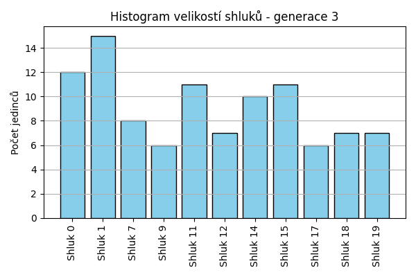
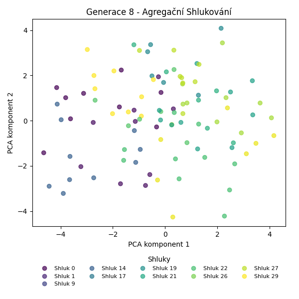
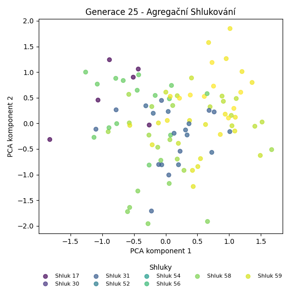
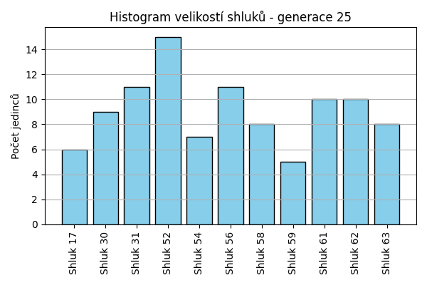
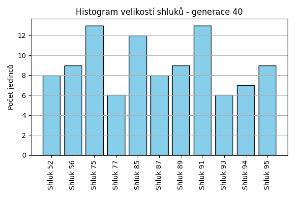
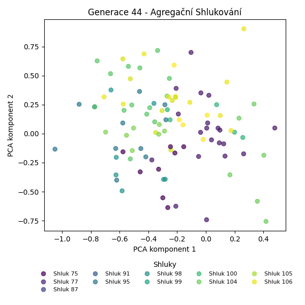
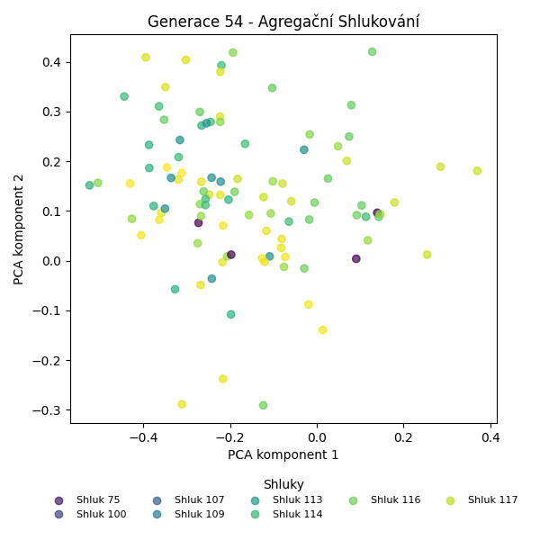
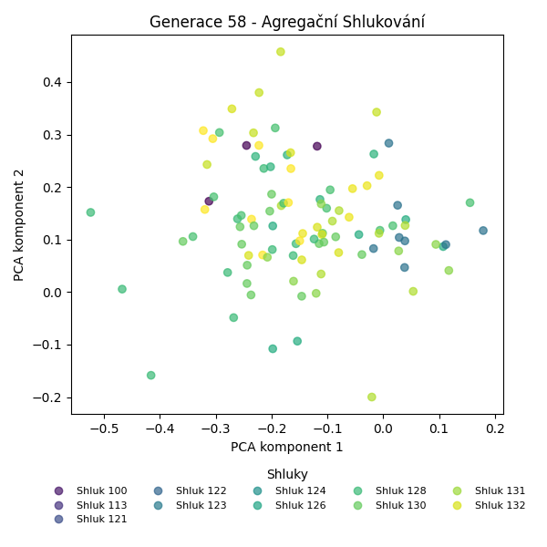
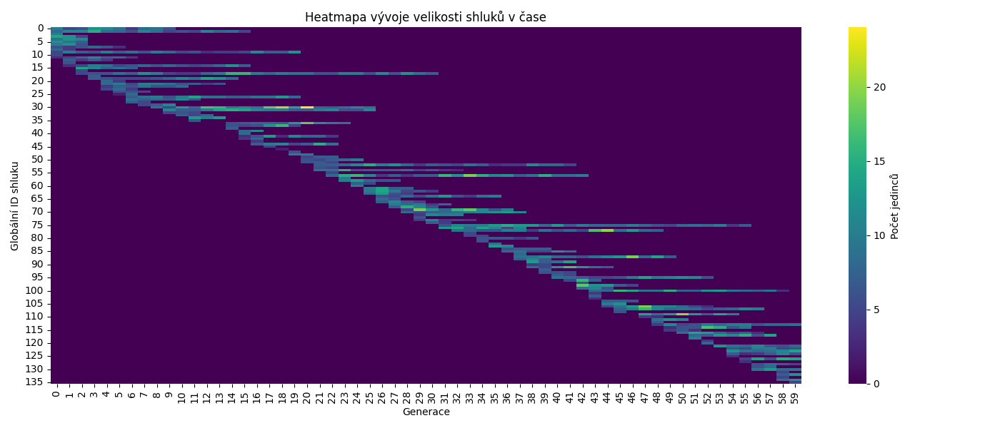

Agregační shlukování – Vývoj
Generace 0
Generace 1
Stabilita mezi generací 0 → 1:
Shluk 5 → 5: 6 jedinců (50.0 %)
Shluk 5 → 12: 4 jedinců (33.3 %)
Shluk 5 → 3: 1 jedinců (8.3 %)
Shluk 5 → 13: 1 jedinců (8.3 %)
Shluk 10 → 4: 3 jedinců (60.0 %)
Shluk 10 → 9: 1 jedinců (20.0 %)
Shluk 10 → 6: 1 jedinců (20.0 %)
Shluk 3 → 6: 1 jedinců (7.1 %)
Shluk 3 → 14: 2 jedinců (14.3 %)
Shluk 3 → 3: 9 jedinců (64.3 %)
Shluk 3 → 5: 1 jedinců (7.1 %)
Shluk 3 → 13: 1 jedinců (7.1 %)
Shluk 0 → 0: 4 jedinců (40.0 %)
Shluk 0 → 8: 1 jedinců (10.0 %)
Shluk 0 → 13: 1 jedinců (10.0 %)
Shluk 0 → 9: 2 jedinců (20.0 %)
Shluk 0 → 1: 1 jedinců (10.0 %)
Shluk 0 → 14: 1 jedinců (10.0 %)
Shluk 4 → 4: 5 jedinců (55.6 %)
Shluk 4 → 1: 3 jedinců (33.3 %)
Shluk 4 → 8: 1 jedinců (11.1 %)
Shluk 7 → 7: 3 jedinců (50.0 %)
Shluk 7 → 3: 1 jedinců (16.7 %)
Shluk 7 → 1: 1 jedinců (16.7 %)
Shluk 7 → 12: 1 jedinců (16.7 %)
Shluk 8 → 9: 2 jedinců (25.0 %)
Shluk 8 → 13: 2 jedinců (25.0 %)
Shluk 8 → 8: 2 jedinců (25.0 %)
Shluk 8 → 1: 1 jedinců (12.5 %)
Shluk 8 → 7: 1 jedinců (12.5 %)
Shluk 6 → 6: 8 jedinců (80.0 %)
Shluk 6 → 13: 1 jedinců (10.0 %)
Shluk 6 → 1: 1 jedinců (10.0 %)
Shluk 2 → 4: 2 jedinců (20.0 %)
Shluk 2 → 12: 2 jedinců (20.0 %)
Shluk 2 → 9: 2 jedinců (20.0 %)
Shluk 2 → 5: 1 jedinců (10.0 %)
Shluk 2 → 11: 3 jedinců (30.0 %)
Shluk 1 → 1: 3 jedinců (37.5 %)
Shluk 1 → 9: 1 jedinců (12.5 %)
Shluk 1 → 6: 1 jedinců (12.5 %)
Shluk 1 → 4: 2 jedinců (25.0 %)
Shluk 1 → 3: 1 jedinců (12.5 %)
Shluk 9 → 5: 1 jedinců (20.0 %)
Shluk 9 → 9: 2 jedinců (40.0 %)
Shluk 9 → 1: 1 jedinců (20.0 %)
Shluk 9 → 0: 1 jedinců (20.0 %)
Shluk 11 → 11: 2 jedinců (66.7 %)
Shluk 11 → 6: 1 jedinců (33.3 %)
Jaccardovo mapování a overlap: Generace 0 → 1
- Shluk 5 → 5 (Jaccard: 0.40, Overlap: 0.67)
- Shluk 10 → 4 (Jaccard: 0.21, Overlap: 0.60)
- Shluk 3 → 3 (Jaccard: 0.53, Overlap: 0.75)
- Shluk 0 → 0 (Jaccard: 0.36, Overlap: 0.80)
- Shluk 4 → 4 (Jaccard: 0.31, Overlap: 0.56)
- Shluk 7 → 7 (Jaccard: 0.43, Overlap: 0.75)
- Shluk 8 → 8 (Jaccard: 0.20, Overlap: 0.50)
- Shluk 6 → 6 (Jaccard: 0.57, Overlap: 0.80)
- Shluk 2 → 11 (Jaccard: 0.25, Overlap: 0.60)
- Shluk 1 → 1 (Jaccard: 0.19, Overlap: 0.38)
- Shluk 9 → 9 (Jaccard: 0.15, Overlap: 0.40)
- Shluk 11 → 11 (Jaccard: 0.33, Overlap: 0.67)
Posun centroidů mezi generací 0 → 1:
- Shluk 0: 9.5886
- Shluk 1: 7.7234
- Shluk 2: 4.8914
- Shluk 3: 8.7590
- Shluk 4: 4.6026
- Shluk 5: 7.0038
- Shluk 6: 7.0349
- Shluk 7: 10.7997
- Shluk 8: 9.2619
- Shluk 9: 11.8733
- Shluk 10: 9.2737
- Shluk 11: 10.2191
Generace 2

Stabilita mezi generací 1 → 2:
Shluk 5 → 5: 3 jedinců (33.3 %)
Shluk 5 → 15: 2 jedinců (22.2 %)
Shluk 5 → 16: 1 jedinců (11.1 %)
Shluk 5 → 14: 1 jedinců (11.1 %)
Shluk 5 → 7: 1 jedinců (11.1 %)
Shluk 5 → 0: 1 jedinců (11.1 %)
Shluk 4 → 4: 10 jedinců (83.3 %)
Shluk 4 → 17: 1 jedinců (8.3 %)
Shluk 4 → 15: 1 jedinců (8.3 %)
Shluk 6 → 14: 1 jedinců (8.3 %)
Shluk 6 → 15: 3 jedinců (25.0 %)
Shluk 6 → 17: 2 jedinců (16.7 %)
Shluk 6 → 6: 4 jedinců (33.3 %)
Shluk 6 → 5: 1 jedinců (8.3 %)
Shluk 6 → 11: 1 jedinců (8.3 %)
Shluk 0 → 0: 5 jedinců (100.0 %)
Shluk 7 → 7: 4 jedinců (100.0 %)
Shluk 9 → 9: 6 jedinců (60.0 %)
Shluk 9 → 16: 2 jedinců (20.0 %)
Shluk 9 → 15: 1 jedinců (10.0 %)
Shluk 9 → 1: 1 jedinců (10.0 %)
Shluk 3 → 16: 1 jedinců (8.3 %)
Shluk 3 → 15: 4 jedinců (33.3 %)
Shluk 3 → 3: 3 jedinců (25.0 %)
Shluk 3 → 14: 1 jedinců (8.3 %)
Shluk 3 → 11: 1 jedinců (8.3 %)
Shluk 3 → 17: 1 jedinců (8.3 %)
Shluk 3 → 6: 1 jedinců (8.3 %)
Shluk 1 → 1: 6 jedinců (54.5 %)
Shluk 1 → 6: 1 jedinců (9.1 %)
Shluk 1 → 5: 2 jedinců (18.2 %)
Shluk 1 → 9: 1 jedinců (9.1 %)
Shluk 1 → 7: 1 jedinců (9.1 %)
Shluk 12 → 11: 1 jedinců (14.3 %)
Shluk 12 → 12: 4 jedinců (57.1 %)
Shluk 12 → 1: 1 jedinců (14.3 %)
Shluk 12 → 4: 1 jedinců (14.3 %)
Shluk 13 → 16: 1 jedinců (16.7 %)
Shluk 13 → 15: 2 jedinců (33.3 %)
Shluk 13 → 1: 2 jedinců (33.3 %)
Shluk 13 → 14: 1 jedinců (16.7 %)
Shluk 14 → 14: 1 jedinců (33.3 %)
Shluk 14 → 3: 1 jedinců (33.3 %)
Shluk 14 → 17: 1 jedinců (33.3 %)
Shluk 8 → 5: 1 jedinců (25.0 %)
Shluk 8 → 3: 1 jedinců (25.0 %)
Shluk 8 → 15: 1 jedinců (25.0 %)
Shluk 8 → 1: 1 jedinců (25.0 %)
Shluk 11 → 11: 5 jedinců (100.0 %)
Jaccardovo mapování a overlap: Generace 1 → 2
- Shluk 5 → 5 (Jaccard: 0.23, Overlap: 0.43)
- Shluk 4 → 4 (Jaccard: 0.77, Overlap: 0.91)
- Shluk 6 → 6 (Jaccard: 0.29, Overlap: 0.67)
- Shluk 0 → 0 (Jaccard: 0.83, Overlap: 1.00)
- Shluk 7 → 7 (Jaccard: 0.67, Overlap: 1.00)
- Shluk 9 → 9 (Jaccard: 0.55, Overlap: 0.86)
- Shluk 3 → 3 (Jaccard: 0.21, Overlap: 0.60)
- Shluk 1 → 1 (Jaccard: 0.38, Overlap: 0.55)
- Shluk 12 → 12 (Jaccard: 0.57, Overlap: 1.00)
- Shluk 13 → 1 (Jaccard: 0.13, Overlap: 0.33)
- Shluk 14 → 14 (Jaccard: 0.14, Overlap: 0.33)
- Shluk 8 → 3 (Jaccard: 0.12, Overlap: 0.25)
- Shluk 11 → 11 (Jaccard: 0.62, Overlap: 1.00)
Posun centroidů mezi generací 1 → 2:
- Shluk 0: 6.5899
- Shluk 1: 7.5359
- Shluk 2: 8.0073
- Shluk 3: 9.2386
- Shluk 4: 11.1113
- Shluk 5: 8.8145
- Shluk 6: 7.7101
- Shluk 7: 8.5906
- Shluk 8: 1.9149
- Shluk 9: 10.2381
- Shluk 10: 8.2978
- Shluk 11: 6.9472
- Shluk 12: 9.0966
Generace 3

Stabilita mezi generací 2 → 3:
Shluk 5 → 1: 5 jedinců (71.4 %)
Shluk 5 → 14: 1 jedinců (14.3 %)
Shluk 5 → 17: 1 jedinců (14.3 %)
Shluk 4 → 7: 2 jedinců (18.2 %)
Shluk 4 → 12: 3 jedinců (27.3 %)
Shluk 4 → 18: 1 jedinců (9.1 %)
Shluk 4 → 11: 1 jedinců (9.1 %)
Shluk 4 → 14: 1 jedinců (9.1 %)
Shluk 4 → 0: 2 jedinců (18.2 %)
Shluk 4 → 15: 1 jedinců (9.1 %)
Shluk 14 → 14: 3 jedinců (60.0 %)
Shluk 14 → 18: 2 jedinců (40.0 %)
Shluk 0 → 11: 2 jedinců (33.3 %)
Shluk 0 → 0: 3 jedinců (50.0 %)
Shluk 0 → 19: 1 jedinců (16.7 %)
Shluk 7 → 7: 4 jedinců (66.7 %)
Shluk 7 → 11: 1 jedinců (16.7 %)
Shluk 7 → 17: 1 jedinců (16.7 %)
Shluk 9 → 9: 3 jedinců (42.9 %)
Shluk 9 → 12: 1 jedinců (14.3 %)
Shluk 9 → 18: 1 jedinců (14.3 %)
Shluk 9 → 0: 2 jedinců (28.6 %)
Shluk 15 → 19: 4 jedinců (28.6 %)
Shluk 15 → 15: 6 jedinců (42.9 %)
Shluk 15 → 14: 2 jedinců (14.3 %)
Shluk 15 → 17: 1 jedinců (7.1 %)
Shluk 15 → 1: 1 jedinců (7.1 %)
Shluk 16 → 9: 2 jedinců (40.0 %)
Shluk 16 → 19: 1 jedinců (20.0 %)
Shluk 16 → 15: 1 jedinců (20.0 %)
Shluk 16 → 12: 1 jedinců (20.0 %)
Shluk 1 → 18: 2 jedinců (18.2 %)
Shluk 1 → 1: 6 jedinců (54.5 %)
Shluk 1 → 0: 2 jedinců (18.2 %)
Shluk 1 → 19: 1 jedinců (9.1 %)
Shluk 11 → 11: 6 jedinců (75.0 %)
Shluk 11 → 0: 1 jedinců (12.5 %)
Shluk 11 → 14: 1 jedinců (12.5 %)
Shluk 17 → 17: 3 jedinců (60.0 %)
Shluk 17 → 15: 1 jedinců (20.0 %)
Shluk 17 → 1: 1 jedinců (20.0 %)
Shluk 6 → 7: 1 jedinců (16.7 %)
Shluk 6 → 0: 1 jedinců (16.7 %)
Shluk 6 → 14: 2 jedinců (33.3 %)
Shluk 6 → 1: 1 jedinců (16.7 %)
Shluk 6 → 11: 1 jedinců (16.7 %)
Shluk 12 → 12: 2 jedinců (50.0 %)
Shluk 12 → 7: 1 jedinců (25.0 %)
Shluk 12 → 1: 1 jedinců (25.0 %)
Shluk 3 → 15: 2 jedinců (40.0 %)
Shluk 3 → 18: 1 jedinců (20.0 %)
Shluk 3 → 9: 1 jedinců (20.0 %)
Shluk 3 → 0: 1 jedinců (20.0 %)
Jaccardovo mapování a overlap: Generace 2 → 3
- Shluk 5 → 1 (Jaccard: 0.29, Overlap: 0.71)
- Shluk 4 → 12 (Jaccard: 0.20, Overlap: 0.43)
- Shluk 14 → 14 (Jaccard: 0.25, Overlap: 0.60)
- Shluk 0 → 0 (Jaccard: 0.20, Overlap: 0.50)
- Shluk 7 → 7 (Jaccard: 0.40, Overlap: 0.67)
- Shluk 9 → 9 (Jaccard: 0.30, Overlap: 0.50)
- Shluk 15 → 15 (Jaccard: 0.32, Overlap: 0.55)
- Shluk 16 → 9 (Jaccard: 0.22, Overlap: 0.40)
- Shluk 1 → 1 (Jaccard: 0.30, Overlap: 0.55)
- Shluk 11 → 11 (Jaccard: 0.46, Overlap: 0.75)
- Shluk 17 → 17 (Jaccard: 0.38, Overlap: 0.60)
- Shluk 6 → 14 (Jaccard: 0.14, Overlap: 0.33)
- Shluk 12 → 12 (Jaccard: 0.22, Overlap: 0.50)
- Shluk 3 → 15 (Jaccard: 0.14, Overlap: 0.40)
Posun centroidů mezi generací 2 → 3:
- Shluk 0: 7.2581
- Shluk 1: 8.9510
- Shluk 2: 9.3349
- Shluk 3: 7.5497
- Shluk 4: 7.6439
- Shluk 5: 10.0796
- Shluk 6: 7.4468
- Shluk 7: 7.2729
- Shluk 8: 9.4656
- Shluk 9: 9.8419
- Shluk 10: 9.9380
Generace 4
Stabilita mezi generací 3 → 4:
Shluk 1 → 20: 3 jedinců (20.0 %)
Shluk 1 → 1: 6 jedinců (40.0 %)
Shluk 1 → 14: 2 jedinců (13.3 %)
Shluk 1 → 21: 1 jedinců (6.7 %)
Shluk 1 → 17: 1 jedinců (6.7 %)
Shluk 1 → 23: 2 jedinců (13.3 %)
Shluk 7 → 7: 4 jedinců (50.0 %)
Shluk 7 → 23: 1 jedinců (12.5 %)
Shluk 7 → 20: 1 jedinců (12.5 %)
Shluk 7 → 21: 1 jedinců (12.5 %)
Shluk 7 → 14: 1 jedinců (12.5 %)
Shluk 14 → 14: 5 jedinců (50.0 %)
Shluk 14 → 0: 1 jedinců (10.0 %)
Shluk 14 → 22: 2 jedinců (20.0 %)
Shluk 14 → 15: 1 jedinců (10.0 %)
Shluk 14 → 19: 1 jedinců (10.0 %)
Shluk 12 → 12: 3 jedinců (42.9 %)
Shluk 12 → 22: 1 jedinců (14.3 %)
Shluk 12 → 19: 1 jedinců (14.3 %)
Shluk 12 → 1: 1 jedinců (14.3 %)
Shluk 12 → 20: 1 jedinců (14.3 %)
Shluk 11 → 11: 5 jedinců (45.5 %)
Shluk 11 → 21: 4 jedinců (36.4 %)
Shluk 11 → 20: 1 jedinců (9.1 %)
Shluk 11 → 23: 1 jedinců (9.1 %)
Shluk 18 → 0: 2 jedinců (28.6 %)
Shluk 18 → 1: 1 jedinců (14.3 %)
Shluk 18 → 17: 1 jedinců (14.3 %)
Shluk 18 → 23: 1 jedinců (14.3 %)
Shluk 18 → 14: 1 jedinců (14.3 %)
Shluk 18 → 12: 1 jedinců (14.3 %)
Shluk 9 → 22: 1 jedinců (16.7 %)
Shluk 9 → 0: 1 jedinců (16.7 %)
Shluk 9 → 9: 3 jedinců (50.0 %)
Shluk 9 → 7: 1 jedinců (16.7 %)
Shluk 19 → 19: 4 jedinců (57.1 %)
Shluk 19 → 20: 1 jedinců (14.3 %)
Shluk 19 → 9: 1 jedinců (14.3 %)
Shluk 19 → 11: 1 jedinců (14.3 %)
Shluk 17 → 17: 4 jedinců (66.7 %)
Shluk 17 → 0: 1 jedinců (16.7 %)
Shluk 17 → 1: 1 jedinců (16.7 %)
Shluk 15 → 15: 6 jedinců (54.5 %)
Shluk 15 → 11: 1 jedinců (9.1 %)
Shluk 15 → 0: 1 jedinců (9.1 %)
Shluk 15 → 9: 2 jedinců (18.2 %)
Shluk 15 → 20: 1 jedinců (9.1 %)
Shluk 0 → 21: 2 jedinců (16.7 %)
Shluk 0 → 9: 4 jedinců (33.3 %)
Shluk 0 → 0: 5 jedinců (41.7 %)
Shluk 0 → 7: 1 jedinců (8.3 %)
Jaccardovo mapování a overlap: Generace 3 → 4
- Shluk 1 → 1 (Jaccard: 0.33, Overlap: 0.67)
- Shluk 7 → 7 (Jaccard: 0.40, Overlap: 0.67)
- Shluk 14 → 14 (Jaccard: 0.36, Overlap: 0.56)
- Shluk 12 → 12 (Jaccard: 0.38, Overlap: 0.75)
- Shluk 11 → 11 (Jaccard: 0.38, Overlap: 0.71)
- Shluk 18 → 0 (Jaccard: 0.12, Overlap: 0.29)
- Shluk 9 → 9 (Jaccard: 0.23, Overlap: 0.50)
- Shluk 19 → 19 (Jaccard: 0.44, Overlap: 0.67)
- Shluk 17 → 17 (Jaccard: 0.50, Overlap: 0.67)
- Shluk 15 → 15 (Jaccard: 0.50, Overlap: 0.86)
- Shluk 0 → 0 (Jaccard: 0.28, Overlap: 0.45)
Posun centroidů mezi generací 3 → 4:
- Shluk 0: 4.6141
- Shluk 1: 6.9882
- Shluk 2: 1.9074
- Shluk 3: 8.7447
- Shluk 4: 2.5479
- Shluk 5: 8.0199
- Shluk 6: 8.3938
- Shluk 7: 9.3182
- Shluk 8: 8.7138
- Shluk 9: 6.1726
- Shluk 10: 6.6595
Generace 5
Stabilita mezi generací 4 → 5:
Shluk 20 → 20: 4 jedinců (50.0 %)
Shluk 20 → 23: 1 jedinců (12.5 %)
Shluk 20 → 17: 1 jedinců (12.5 %)
Shluk 20 → 15: 1 jedinců (12.5 %)
Shluk 20 → 24: 1 jedinců (12.5 %)
Shluk 7 → 22: 2 jedinců (33.3 %)
Shluk 7 → 7: 3 jedinců (50.0 %)
Shluk 7 → 1: 1 jedinců (16.7 %)
Shluk 14 → 14: 3 jedinců (33.3 %)
Shluk 14 → 21: 1 jedinců (11.1 %)
Shluk 14 → 1: 2 jedinců (22.2 %)
Shluk 14 → 17: 2 jedinců (22.2 %)
Shluk 14 → 0: 1 jedinců (11.1 %)
Shluk 12 → 1: 1 jedinců (25.0 %)
Shluk 12 → 15: 2 jedinců (50.0 %)
Shluk 12 → 21: 1 jedinců (25.0 %)
Shluk 11 → 11: 4 jedinců (57.1 %)
Shluk 11 → 14: 1 jedinců (14.3 %)
Shluk 11 → 24: 2 jedinců (28.6 %)
Shluk 0 → 0: 5 jedinců (45.5 %)
Shluk 0 → 17: 1 jedinců (9.1 %)
Shluk 0 → 25: 1 jedinců (9.1 %)
Shluk 0 → 23: 1 jedinců (9.1 %)
Shluk 0 → 11: 1 jedinců (9.1 %)
Shluk 0 → 9: 2 jedinců (18.2 %)
Shluk 21 → 21: 8 jedinců (100.0 %)
Shluk 22 → 22: 2 jedinců (50.0 %)
Shluk 22 → 11: 2 jedinců (50.0 %)
Shluk 19 → 24: 1 jedinců (16.7 %)
Shluk 19 → 19: 5 jedinců (83.3 %)
Shluk 1 → 0: 3 jedinců (33.3 %)
Shluk 1 → 1: 3 jedinců (33.3 %)
Shluk 1 → 9: 1 jedinců (11.1 %)
Shluk 1 → 22: 1 jedinců (11.1 %)
Shluk 1 → 17: 1 jedinců (11.1 %)
Shluk 17 → 25: 1 jedinců (16.7 %)
Shluk 17 → 17: 3 jedinců (50.0 %)
Shluk 17 → 14: 1 jedinců (16.7 %)
Shluk 17 → 15: 1 jedinců (16.7 %)
Shluk 23 → 23: 5 jedinců (100.0 %)
Shluk 15 → 15: 5 jedinců (71.4 %)
Shluk 15 → 23: 1 jedinců (14.3 %)
Shluk 15 → 1: 1 jedinců (14.3 %)
Shluk 9 → 22: 2 jedinců (20.0 %)
Shluk 9 → 17: 1 jedinců (10.0 %)
Shluk 9 → 9: 4 jedinců (40.0 %)
Shluk 9 → 11: 1 jedinců (10.0 %)
Shluk 9 → 24: 2 jedinců (20.0 %)
Jaccardovo mapování a overlap: Generace 4 → 5
- Shluk 20 → 20 (Jaccard: 0.50, Overlap: 1.00)
- Shluk 7 → 7 (Jaccard: 0.50, Overlap: 1.00)
- Shluk 14 → 14 (Jaccard: 0.27, Overlap: 0.60)
- Shluk 12 → 15 (Jaccard: 0.18, Overlap: 0.50)
- Shluk 11 → 11 (Jaccard: 0.36, Overlap: 0.57)
- Shluk 0 → 0 (Jaccard: 0.33, Overlap: 0.56)
- Shluk 21 → 21 (Jaccard: 0.80, Overlap: 1.00)
- Shluk 22 → 22 (Jaccard: 0.22, Overlap: 0.50)
- Shluk 19 → 19 (Jaccard: 0.83, Overlap: 1.00)
- Shluk 1 → 1 (Jaccard: 0.21, Overlap: 0.38)
- Shluk 17 → 17 (Jaccard: 0.25, Overlap: 0.50)
- Shluk 23 → 23 (Jaccard: 0.62, Overlap: 1.00)
- Shluk 15 → 15 (Jaccard: 0.45, Overlap: 0.71)
- Shluk 9 → 9 (Jaccard: 0.31, Overlap: 0.57)
Posun centroidů mezi generací 4 → 5:
- Shluk 0: 6.5064
- Shluk 1: 6.6538
- Shluk 2: 5.4079
- Shluk 3: 6.0615
- Shluk 4: 6.0543
- Shluk 5: 5.6170
- Shluk 6: 3.3765
- Shluk 7: 5.7644
- Shluk 8: 8.7500
- Shluk 9: 4.7494
- Shluk 10: 6.2776
- Shluk 11: 9.6836
- Shluk 12: 8.7875
- Shluk 13: 6.9649
Generace 6
Stabilita mezi generací 5 → 6:
Shluk 20 → 17: 2 jedinců (50.0 %)
Shluk 20 → 15: 1 jedinců (25.0 %)
Shluk 20 → 24: 1 jedinců (25.0 %)
Shluk 22 → 22: 5 jedinců (71.4 %)
Shluk 22 → 9: 1 jedinců (14.3 %)
Shluk 22 → 11: 1 jedinců (14.3 %)
Shluk 14 → 14: 5 jedinců (100.0 %)
Shluk 1 → 1: 3 jedinců (37.5 %)
Shluk 1 → 28: 3 jedinců (37.5 %)
Shluk 1 → 26: 2 jedinců (25.0 %)
Shluk 11 → 26: 1 jedinců (12.5 %)
Shluk 11 → 11: 2 jedinců (25.0 %)
Shluk 11 → 19: 1 jedinců (12.5 %)
Shluk 11 → 23: 1 jedinců (12.5 %)
Shluk 11 → 28: 1 jedinců (12.5 %)
Shluk 11 → 24: 1 jedinců (12.5 %)
Shluk 11 → 21: 1 jedinců (12.5 %)
Shluk 0 → 25: 2 jedinců (22.2 %)
Shluk 0 → 26: 2 jedinců (22.2 %)
Shluk 0 → 0: 3 jedinců (33.3 %)
Shluk 0 → 1: 1 jedinců (11.1 %)
Shluk 0 → 14: 1 jedinců (11.1 %)
Shluk 7 → 24: 1 jedinců (33.3 %)
Shluk 7 → 21: 1 jedinců (33.3 %)
Shluk 7 → 11: 1 jedinců (33.3 %)
Shluk 21 → 21: 3 jedinců (30.0 %)
Shluk 21 → 27: 3 jedinců (30.0 %)
Shluk 21 → 28: 2 jedinců (20.0 %)
Shluk 21 → 9: 1 jedinců (10.0 %)
Shluk 21 → 22: 1 jedinců (10.0 %)
Shluk 17 → 25: 3 jedinců (33.3 %)
Shluk 17 → 17: 4 jedinců (44.4 %)
Shluk 17 → 0: 1 jedinců (11.1 %)
Shluk 17 → 27: 1 jedinců (11.1 %)
Shluk 24 → 24: 3 jedinců (50.0 %)
Shluk 24 → 27: 2 jedinců (33.3 %)
Shluk 24 → 26: 1 jedinců (16.7 %)
Shluk 25 → 27: 1 jedinců (50.0 %)
Shluk 25 → 25: 1 jedinců (50.0 %)
Shluk 19 → 19: 4 jedinců (80.0 %)
Shluk 19 → 27: 1 jedinců (20.0 %)
Shluk 23 → 27: 1 jedinců (12.5 %)
Shluk 23 → 28: 1 jedinců (12.5 %)
Shluk 23 → 25: 2 jedinců (25.0 %)
Shluk 23 → 23: 3 jedinců (37.5 %)
Shluk 23 → 9: 1 jedinců (12.5 %)
Shluk 15 → 1: 2 jedinců (22.2 %)
Shluk 15 → 26: 1 jedinců (11.1 %)
Shluk 15 → 15: 6 jedinců (66.7 %)
Shluk 9 → 9: 6 jedinců (85.7 %)
Shluk 9 → 17: 1 jedinců (14.3 %)
Jaccardovo mapování a overlap: Generace 5 → 6
- Shluk 20 → 17 (Jaccard: 0.22, Overlap: 0.50)
- Shluk 22 → 22 (Jaccard: 0.62, Overlap: 0.83)
- Shluk 14 → 14 (Jaccard: 0.83, Overlap: 1.00)
- Shluk 1 → 1 (Jaccard: 0.27, Overlap: 0.50)
- Shluk 11 → 11 (Jaccard: 0.20, Overlap: 0.50)
- Shluk 0 → 0 (Jaccard: 0.30, Overlap: 0.75)
- Shluk 7 → 11 (Jaccard: 0.17, Overlap: 0.33)
- Shluk 21 → 21 (Jaccard: 0.25, Overlap: 0.60)
- Shluk 17 → 17 (Jaccard: 0.33, Overlap: 0.57)
- Shluk 24 → 24 (Jaccard: 0.33, Overlap: 0.50)
- Shluk 25 → 25 (Jaccard: 0.11, Overlap: 0.50)
- Shluk 19 → 19 (Jaccard: 0.67, Overlap: 0.80)
- Shluk 23 → 23 (Jaccard: 0.33, Overlap: 0.75)
- Shluk 15 → 15 (Jaccard: 0.60, Overlap: 0.86)
- Shluk 9 → 9 (Jaccard: 0.60, Overlap: 0.86)
Posun centroidů mezi generací 5 → 6:
- Shluk 0: 7.1180
- Shluk 1: 8.1559
- Shluk 2: 7.8460
- Shluk 3: 5.7533
- Shluk 4: 5.7343
- Shluk 5: 8.1959
- Shluk 6: 6.6812
- Shluk 7: 3.1442
- Shluk 8: 5.3873
- Shluk 9: 7.2279
- Shluk 10: 2.1180
- Shluk 11: 8.2306
- Shluk 12: 8.2891
- Shluk 13: 7.4691
- Shluk 14: 6.7386
Generace 7
Stabilita mezi generací 6 → 7:
Shluk 17 → 29: 1 jedinců (14.3 %)
Shluk 17 → 19: 1 jedinců (14.3 %)
Shluk 17 → 17: 5 jedinců (71.4 %)
Shluk 22 → 22: 5 jedinců (83.3 %)
Shluk 22 → 9: 1 jedinců (16.7 %)
Shluk 14 → 14: 5 jedinců (83.3 %)
Shluk 14 → 0: 1 jedinců (16.7 %)
Shluk 1 → 1: 4 jedinců (66.7 %)
Shluk 1 → 0: 2 jedinců (33.3 %)
Shluk 26 → 27: 1 jedinců (14.3 %)
Shluk 26 → 17: 1 jedinců (14.3 %)
Shluk 26 → 26: 5 jedinců (71.4 %)
Shluk 25 → 0: 2 jedinců (25.0 %)
Shluk 25 → 24: 1 jedinců (12.5 %)
Shluk 25 → 29: 1 jedinců (12.5 %)
Shluk 25 → 14: 3 jedinců (37.5 %)
Shluk 25 → 17: 1 jedinců (12.5 %)
Shluk 24 → 26: 1 jedinců (16.7 %)
Shluk 24 → 24: 3 jedinců (50.0 %)
Shluk 24 → 21: 2 jedinců (33.3 %)
Shluk 21 → 21: 5 jedinců (100.0 %)
Shluk 27 → 21: 3 jedinců (33.3 %)
Shluk 27 → 29: 2 jedinců (22.2 %)
Shluk 27 → 27: 4 jedinců (44.4 %)
Shluk 19 → 19: 4 jedinců (80.0 %)
Shluk 19 → 0: 1 jedinců (20.0 %)
Shluk 28 → 28: 5 jedinců (71.4 %)
Shluk 28 → 1: 2 jedinců (28.6 %)
Shluk 9 → 22: 2 jedinců (22.2 %)
Shluk 9 → 9: 5 jedinců (55.6 %)
Shluk 9 → 1: 2 jedinců (22.2 %)
Shluk 23 → 17: 2 jedinců (50.0 %)
Shluk 23 → 27: 1 jedinců (25.0 %)
Shluk 23 → 1: 1 jedinců (25.0 %)
Shluk 15 → 26: 3 jedinců (42.9 %)
Shluk 15 → 1: 1 jedinců (14.3 %)
Shluk 15 → 27: 1 jedinců (14.3 %)
Shluk 15 → 24: 1 jedinců (14.3 %)
Shluk 15 → 29: 1 jedinců (14.3 %)
Shluk 11 → 17: 3 jedinců (75.0 %)
Shluk 11 → 22: 1 jedinců (25.0 %)
Shluk 0 → 1: 1 jedinců (25.0 %)
Shluk 0 → 0: 2 jedinců (50.0 %)
Shluk 0 → 22: 1 jedinců (25.0 %)
Jaccardovo mapování a overlap: Generace 6 → 7
- Shluk 17 → 17 (Jaccard: 0.36, Overlap: 0.71)
- Shluk 22 → 22 (Jaccard: 0.50, Overlap: 0.83)
- Shluk 14 → 14 (Jaccard: 0.56, Overlap: 0.83)
- Shluk 1 → 1 (Jaccard: 0.31, Overlap: 0.67)
- Shluk 26 → 26 (Jaccard: 0.45, Overlap: 0.71)
- Shluk 25 → 14 (Jaccard: 0.23, Overlap: 0.38)
- Shluk 24 → 24 (Jaccard: 0.38, Overlap: 0.60)
- Shluk 21 → 21 (Jaccard: 0.50, Overlap: 1.00)
- Shluk 27 → 27 (Jaccard: 0.33, Overlap: 0.57)
- Shluk 19 → 19 (Jaccard: 0.67, Overlap: 0.80)
- Shluk 28 → 28 (Jaccard: 0.71, Overlap: 1.00)
- Shluk 9 → 9 (Jaccard: 0.50, Overlap: 0.83)
- Shluk 23 → 17 (Jaccard: 0.14, Overlap: 0.50)
- Shluk 15 → 26 (Jaccard: 0.23, Overlap: 0.43)
- Shluk 11 → 17 (Jaccard: 0.23, Overlap: 0.75)
- Shluk 0 → 0 (Jaccard: 0.20, Overlap: 0.50)
Posun centroidů mezi generací 6 → 7:
- Shluk 0: 6.4889
- Shluk 1: 7.3355
- Shluk 2: 8.6539
- Shluk 3: 6.6240
- Shluk 4: 4.3385
- Shluk 5: 5.0916
- Shluk 6: 6.5335
- Shluk 7: 5.0990
- Shluk 8: 6.0001
- Shluk 9: 9.4987
- Shluk 10: 8.7429
- Shluk 11: 8.3343
- Shluk 12: 8.6281
Generace 8


Stabilita mezi generací 7 → 8:
Shluk 29 → 17: 1 jedinců (20.0 %)
Shluk 29 → 14: 1 jedinců (20.0 %)
Shluk 29 → 19: 1 jedinců (20.0 %)
Shluk 29 → 29: 2 jedinců (40.0 %)
Shluk 22 → 30: 2 jedinců (22.2 %)
Shluk 22 → 22: 3 jedinců (33.3 %)
Shluk 22 → 9: 3 jedinců (33.3 %)
Shluk 22 → 26: 1 jedinců (11.1 %)
Shluk 14 → 0: 1 jedinců (12.5 %)
Shluk 14 → 14: 4 jedinců (50.0 %)
Shluk 14 → 29: 1 jedinců (12.5 %)
Shluk 14 → 26: 1 jedinců (12.5 %)
Shluk 14 → 30: 1 jedinců (12.5 %)
Shluk 1 → 1: 3 jedinců (27.3 %)
Shluk 1 → 0: 2 jedinců (18.2 %)
Shluk 1 → 30: 1 jedinců (9.1 %)
Shluk 1 → 22: 1 jedinců (9.1 %)
Shluk 1 → 19: 1 jedinců (9.1 %)
Shluk 1 → 29: 1 jedinců (9.1 %)
Shluk 1 → 27: 1 jedinců (9.1 %)
Shluk 1 → 9: 1 jedinců (9.1 %)
Shluk 27 → 27: 6 jedinců (85.7 %)
Shluk 27 → 21: 1 jedinců (14.3 %)
Shluk 0 → 0: 5 jedinců (62.5 %)
Shluk 0 → 19: 1 jedinců (12.5 %)
Shluk 0 → 30: 1 jedinců (12.5 %)
Shluk 0 → 1: 1 jedinců (12.5 %)
Shluk 26 → 26: 8 jedinců (88.9 %)
Shluk 26 → 21: 1 jedinců (11.1 %)
Shluk 21 → 27: 1 jedinců (10.0 %)
Shluk 21 → 21: 7 jedinců (70.0 %)
Shluk 21 → 0: 1 jedinců (10.0 %)
Shluk 21 → 30: 1 jedinců (10.0 %)
Shluk 24 → 29: 2 jedinců (40.0 %)
Shluk 24 → 9: 1 jedinců (20.0 %)
Shluk 24 → 17: 1 jedinců (20.0 %)
Shluk 24 → 21: 1 jedinců (20.0 %)
Shluk 19 → 1: 2 jedinců (40.0 %)
Shluk 19 → 19: 2 jedinců (40.0 %)
Shluk 19 → 17: 1 jedinců (20.0 %)
Shluk 17 → 30: 3 jedinců (25.0 %)
Shluk 17 → 17: 6 jedinců (50.0 %)
Shluk 17 → 1: 1 jedinců (8.3 %)
Shluk 17 → 22: 1 jedinců (8.3 %)
Shluk 17 → 14: 1 jedinců (8.3 %)
Shluk 28 → 22: 1 jedinců (20.0 %)
Shluk 28 → 1: 2 jedinců (40.0 %)
Shluk 28 → 17: 1 jedinců (20.0 %)
Shluk 28 → 29: 1 jedinců (20.0 %)
Shluk 9 → 9: 5 jedinců (83.3 %)
Shluk 9 → 19: 1 jedinců (16.7 %)
Jaccardovo mapování a overlap: Generace 7 → 8
- Shluk 29 → 29 (Jaccard: 0.20, Overlap: 0.40)
- Shluk 22 → 22 (Jaccard: 0.25, Overlap: 0.50)
- Shluk 14 → 14 (Jaccard: 0.40, Overlap: 0.67)
- Shluk 1 → 1 (Jaccard: 0.18, Overlap: 0.33)
- Shluk 27 → 27 (Jaccard: 0.67, Overlap: 0.86)
- Shluk 0 → 0 (Jaccard: 0.42, Overlap: 0.62)
- Shluk 26 → 26 (Jaccard: 0.73, Overlap: 0.89)
- Shluk 21 → 21 (Jaccard: 0.54, Overlap: 0.70)
- Shluk 24 → 29 (Jaccard: 0.20, Overlap: 0.40)
- Shluk 19 → 19 (Jaccard: 0.22, Overlap: 0.40)
- Shluk 17 → 17 (Jaccard: 0.38, Overlap: 0.60)
- Shluk 28 → 1 (Jaccard: 0.17, Overlap: 0.40)
- Shluk 9 → 9 (Jaccard: 0.45, Overlap: 0.83)
Posun centroidů mezi generací 7 → 8:
- Shluk 0: 1.6003
- Shluk 1: 6.8842
- Shluk 2: 4.6690
- Shluk 3: 5.6748
- Shluk 4: 5.7460
- Shluk 5: 2.8428
- Shluk 6: 5.7681
- Shluk 7: 6.9982
- Shluk 8: 5.0812
- Shluk 9: 5.8814
- Shluk 10: 8.5552
- Shluk 11: 5.9575
Generace 9
Stabilita mezi generací 8 → 9:
Shluk 17 → 17: 4 jedinců (40.0 %)
Shluk 17 → 29: 1 jedinců (10.0 %)
Shluk 17 → 14: 1 jedinců (10.0 %)
Shluk 17 → 26: 2 jedinců (20.0 %)
Shluk 17 → 31: 1 jedinců (10.0 %)
Shluk 17 → 21: 1 jedinců (10.0 %)
Shluk 30 → 14: 1 jedinců (11.1 %)
Shluk 30 → 30: 3 jedinců (33.3 %)
Shluk 30 → 21: 3 jedinců (33.3 %)
Shluk 30 → 29: 1 jedinců (11.1 %)
Shluk 30 → 31: 1 jedinců (11.1 %)
Shluk 0 → 22: 1 jedinců (11.1 %)
Shluk 0 → 0: 4 jedinců (44.4 %)
Shluk 0 → 31: 4 jedinců (44.4 %)
Shluk 1 → 31: 4 jedinců (44.4 %)
Shluk 1 → 9: 1 jedinců (11.1 %)
Shluk 1 → 17: 1 jedinců (11.1 %)
Shluk 1 → 1: 3 jedinců (33.3 %)
Shluk 27 → 27: 3 jedinců (37.5 %)
Shluk 27 → 29: 2 jedinců (25.0 %)
Shluk 27 → 0: 1 jedinců (12.5 %)
Shluk 27 → 9: 2 jedinců (25.0 %)
Shluk 26 → 26: 4 jedinců (40.0 %)
Shluk 26 → 19: 3 jedinců (30.0 %)
Shluk 26 → 27: 1 jedinců (10.0 %)
Shluk 26 → 29: 2 jedinců (20.0 %)
Shluk 22 → 22: 5 jedinců (83.3 %)
Shluk 22 → 32: 1 jedinců (16.7 %)
Shluk 29 → 29: 3 jedinců (42.9 %)
Shluk 29 → 9: 1 jedinců (14.3 %)
Shluk 29 → 27: 1 jedinců (14.3 %)
Shluk 29 → 1: 1 jedinců (14.3 %)
Shluk 29 → 0: 1 jedinců (14.3 %)
Shluk 9 → 27: 1 jedinců (10.0 %)
Shluk 9 → 9: 4 jedinců (40.0 %)
Shluk 9 → 1: 1 jedinců (10.0 %)
Shluk 9 → 32: 2 jedinců (20.0 %)
Shluk 9 → 30: 1 jedinců (10.0 %)
Shluk 9 → 31: 1 jedinců (10.0 %)
Shluk 21 → 27: 1 jedinců (10.0 %)
Shluk 21 → 29: 2 jedinců (20.0 %)
Shluk 21 → 19: 1 jedinců (10.0 %)
Shluk 21 → 21: 5 jedinců (50.0 %)
Shluk 21 → 30: 1 jedinců (10.0 %)
Shluk 14 → 14: 6 jedinců (100.0 %)
Shluk 19 → 19: 4 jedinců (66.7 %)
Shluk 19 → 32: 2 jedinců (33.3 %)
Jaccardovo mapování a overlap: Generace 8 → 9
- Shluk 17 → 17 (Jaccard: 0.36, Overlap: 0.80)
- Shluk 30 → 30 (Jaccard: 0.27, Overlap: 0.60)
- Shluk 0 → 0 (Jaccard: 0.36, Overlap: 0.67)
- Shluk 1 → 1 (Jaccard: 0.27, Overlap: 0.60)
- Shluk 27 → 27 (Jaccard: 0.25, Overlap: 0.43)
- Shluk 26 → 26 (Jaccard: 0.33, Overlap: 0.67)
- Shluk 22 → 22 (Jaccard: 0.71, Overlap: 0.83)
- Shluk 29 → 29 (Jaccard: 0.20, Overlap: 0.43)
- Shluk 9 → 9 (Jaccard: 0.29, Overlap: 0.50)
- Shluk 21 → 21 (Jaccard: 0.36, Overlap: 0.56)
- Shluk 14 → 14 (Jaccard: 0.75, Overlap: 1.00)
- Shluk 19 → 19 (Jaccard: 0.40, Overlap: 0.67)
Posun centroidů mezi generací 8 → 9:
- Shluk 0: 3.7759
- Shluk 1: 5.4359
- Shluk 2: 5.7983
- Shluk 3: 5.6209
- Shluk 4: 6.8374
- Shluk 5: 2.6496
- Shluk 6: 6.4059
- Shluk 7: 6.8330
- Shluk 8: 6.0881
- Shluk 9: 6.6366
- Shluk 10: 6.4379
- Shluk 11: 6.7487
Generace 10
Stabilita mezi generací 9 → 10:
Shluk 17 → 31: 1 jedinců (20.0 %)
Shluk 17 → 19: 1 jedinců (20.0 %)
Shluk 17 → 17: 3 jedinců (60.0 %)
Shluk 14 → 22: 2 jedinců (25.0 %)
Shluk 14 → 14: 3 jedinců (37.5 %)
Shluk 14 → 33: 1 jedinců (12.5 %)
Shluk 14 → 17: 1 jedinců (12.5 %)
Shluk 14 → 21: 1 jedinců (12.5 %)
Shluk 22 → 22: 3 jedinců (50.0 %)
Shluk 22 → 32: 1 jedinců (16.7 %)
Shluk 22 → 14: 1 jedinců (16.7 %)
Shluk 22 → 27: 1 jedinců (16.7 %)
Shluk 31 → 33: 3 jedinců (27.3 %)
Shluk 31 → 27: 2 jedinců (18.2 %)
Shluk 31 → 32: 1 jedinců (9.1 %)
Shluk 31 → 30: 1 jedinců (9.1 %)
Shluk 31 → 31: 4 jedinců (36.4 %)
Shluk 27 → 31: 1 jedinců (14.3 %)
Shluk 27 → 27: 3 jedinců (42.9 %)
Shluk 27 → 19: 1 jedinců (14.3 %)
Shluk 27 → 33: 2 jedinců (28.6 %)
Shluk 0 → 32: 2 jedinců (33.3 %)
Shluk 0 → 27: 2 jedinců (33.3 %)
Shluk 0 → 22: 1 jedinců (16.7 %)
Shluk 0 → 33: 1 jedinců (16.7 %)
Shluk 26 → 26: 6 jedinců (100.0 %)
Shluk 29 → 30: 4 jedinců (36.4 %)
Shluk 29 → 27: 2 jedinců (18.2 %)
Shluk 29 → 21: 1 jedinců (9.1 %)
Shluk 29 → 14: 1 jedinců (9.1 %)
Shluk 29 → 1: 3 jedinců (27.3 %)
Shluk 9 → 9: 5 jedinců (62.5 %)
Shluk 9 → 14: 1 jedinců (12.5 %)
Shluk 9 → 22: 1 jedinců (12.5 %)
Shluk 9 → 19: 1 jedinců (12.5 %)
Shluk 30 → 30: 3 jedinců (60.0 %)
Shluk 30 → 31: 1 jedinců (20.0 %)
Shluk 30 → 19: 1 jedinců (20.0 %)
Shluk 19 → 27: 1 jedinců (12.5 %)
Shluk 19 → 19: 5 jedinců (62.5 %)
Shluk 19 → 26: 2 jedinců (25.0 %)
Shluk 21 → 21: 4 jedinců (44.4 %)
Shluk 21 → 26: 2 jedinců (22.2 %)
Shluk 21 → 1: 1 jedinců (11.1 %)
Shluk 21 → 30: 2 jedinců (22.2 %)
Shluk 1 → 30: 3 jedinců (60.0 %)
Shluk 1 → 1: 2 jedinců (40.0 %)
Shluk 32 → 19: 2 jedinců (40.0 %)
Shluk 32 → 32: 2 jedinců (40.0 %)
Shluk 32 → 22: 1 jedinců (20.0 %)
Jaccardovo mapování a overlap: Generace 9 → 10
- Shluk 17 → 17 (Jaccard: 0.50, Overlap: 0.75)
- Shluk 14 → 14 (Jaccard: 0.27, Overlap: 0.50)
- Shluk 22 → 22 (Jaccard: 0.27, Overlap: 0.50)
- Shluk 31 → 31 (Jaccard: 0.29, Overlap: 0.57)
- Shluk 27 → 27 (Jaccard: 0.20, Overlap: 0.43)
- Shluk 0 → 32 (Jaccard: 0.20, Overlap: 0.33)
- Shluk 26 → 26 (Jaccard: 0.60, Overlap: 1.00)
- Shluk 29 → 1 (Jaccard: 0.21, Overlap: 0.50)
- Shluk 9 → 9 (Jaccard: 0.62, Overlap: 1.00)
- Shluk 30 → 30 (Jaccard: 0.20, Overlap: 0.60)
- Shluk 19 → 19 (Jaccard: 0.36, Overlap: 0.62)
- Shluk 21 → 21 (Jaccard: 0.36, Overlap: 0.67)
- Shluk 1 → 1 (Jaccard: 0.22, Overlap: 0.40)
- Shluk 32 → 32 (Jaccard: 0.22, Overlap: 0.40)
Posun centroidů mezi generací 9 → 10:
- Shluk 0: 3.9002
- Shluk 1: 4.1632
- Shluk 2: 5.1103
- Shluk 3: 6.0872
- Shluk 4: 5.8491
- Shluk 5: 5.8199
- Shluk 6: 6.2782
- Shluk 7: 7.5987
- Shluk 8: 6.8188
- Shluk 9: 5.6638
- Shluk 10: 6.4347
- Shluk 11: 5.9095
- Shluk 12: 6.3088
Generace 11
Stabilita mezi generací 10 → 11:
Shluk 31 → 34: 1 jedinců (14.3 %)
Shluk 31 → 31: 4 jedinců (57.1 %)
Shluk 31 → 35: 1 jedinců (14.3 %)
Shluk 31 → 19: 1 jedinců (14.3 %)
Shluk 22 → 9: 3 jedinců (37.5 %)
Shluk 22 → 34: 3 jedinců (37.5 %)
Shluk 22 → 17: 1 jedinců (12.5 %)
Shluk 22 → 26: 1 jedinců (12.5 %)
Shluk 33 → 21: 1 jedinců (14.3 %)
Shluk 33 → 33: 3 jedinců (42.9 %)
Shluk 33 → 34: 1 jedinců (14.3 %)
Shluk 33 → 30: 1 jedinců (14.3 %)
Shluk 33 → 35: 1 jedinců (14.3 %)
Shluk 32 → 32: 5 jedinců (83.3 %)
Shluk 32 → 35: 1 jedinců (16.7 %)
Shluk 26 → 26: 10 jedinců (100.0 %)
Shluk 30 → 26: 1 jedinců (7.7 %)
Shluk 30 → 34: 6 jedinců (46.2 %)
Shluk 30 → 17: 1 jedinců (7.7 %)
Shluk 30 → 30: 5 jedinců (38.5 %)
Shluk 27 → 27: 5 jedinců (45.5 %)
Shluk 27 → 1: 1 jedinců (9.1 %)
Shluk 27 → 33: 2 jedinců (18.2 %)
Shluk 27 → 31: 1 jedinců (9.1 %)
Shluk 27 → 19: 1 jedinců (9.1 %)
Shluk 27 → 14: 1 jedinců (9.1 %)
Shluk 19 → 19: 7 jedinců (63.6 %)
Shluk 19 → 30: 1 jedinců (9.1 %)
Shluk 19 → 35: 1 jedinců (9.1 %)
Shluk 19 → 26: 2 jedinců (18.2 %)
Shluk 9 → 9: 3 jedinců (60.0 %)
Shluk 9 → 35: 2 jedinců (40.0 %)
Shluk 14 → 31: 1 jedinců (16.7 %)
Shluk 14 → 14: 4 jedinců (66.7 %)
Shluk 14 → 17: 1 jedinců (16.7 %)
Shluk 21 → 21: 4 jedinců (66.7 %)
Shluk 21 → 34: 2 jedinců (33.3 %)
Shluk 17 → 31: 1 jedinců (25.0 %)
Shluk 17 → 30: 1 jedinců (25.0 %)
Shluk 17 → 17: 1 jedinců (25.0 %)
Shluk 17 → 21: 1 jedinců (25.0 %)
Shluk 1 → 1: 4 jedinců (66.7 %)
Shluk 1 → 21: 1 jedinců (16.7 %)
Shluk 1 → 27: 1 jedinců (16.7 %)
Jaccardovo mapování a overlap: Generace 10 → 11
- Shluk 31 → 31 (Jaccard: 0.40, Overlap: 0.57)
- Shluk 22 → 9 (Jaccard: 0.27, Overlap: 0.50)
- Shluk 33 → 33 (Jaccard: 0.33, Overlap: 0.60)
- Shluk 32 → 32 (Jaccard: 0.83, Overlap: 1.00)
- Shluk 26 → 26 (Jaccard: 0.71, Overlap: 1.00)
- Shluk 30 → 30 (Jaccard: 0.31, Overlap: 0.62)
- Shluk 27 → 27 (Jaccard: 0.42, Overlap: 0.83)
- Shluk 19 → 19 (Jaccard: 0.54, Overlap: 0.78)
- Shluk 9 → 9 (Jaccard: 0.38, Overlap: 0.60)
- Shluk 14 → 14 (Jaccard: 0.57, Overlap: 0.80)
- Shluk 21 → 21 (Jaccard: 0.44, Overlap: 0.67)
- Shluk 17 → 17 (Jaccard: 0.14, Overlap: 0.25)
- Shluk 1 → 1 (Jaccard: 0.57, Overlap: 0.80)
Posun centroidů mezi generací 10 → 11:
- Shluk 0: 4.2967
- Shluk 1: 5.2346
- Shluk 2: 5.3094
- Shluk 3: 8.2586
- Shluk 4: 5.1972
- Shluk 5: 4.0776
- Shluk 6: 4.9776
- Shluk 7: 6.5730
- Shluk 8: 5.9394
- Shluk 9: 5.5364
- Shluk 10: 6.4566
- Shluk 11: 4.9895
- Shluk 12: 5.3447
Generace 12
Stabilita mezi generací 11 → 12:
Shluk 34 → 34: 6 jedinců (46.2 %)
Shluk 34 → 30: 5 jedinců (38.5 %)
Shluk 34 → 21: 1 jedinců (7.7 %)
Shluk 34 → 31: 1 jedinců (7.7 %)
Shluk 9 → 34: 2 jedinců (33.3 %)
Shluk 9 → 9: 3 jedinců (50.0 %)
Shluk 9 → 31: 1 jedinců (16.7 %)
Shluk 21 → 21: 3 jedinců (42.9 %)
Shluk 21 → 30: 1 jedinců (14.3 %)
Shluk 21 → 1: 1 jedinců (14.3 %)
Shluk 21 → 31: 1 jedinců (14.3 %)
Shluk 21 → 33: 1 jedinců (14.3 %)
Shluk 31 → 31: 3 jedinců (42.9 %)
Shluk 31 → 30: 1 jedinců (14.3 %)
Shluk 31 → 33: 2 jedinců (28.6 %)
Shluk 31 → 19: 1 jedinců (14.3 %)
Shluk 32 → 33: 1 jedinců (20.0 %)
Shluk 32 → 31: 2 jedinců (40.0 %)
Shluk 32 → 30: 1 jedinců (20.0 %)
Shluk 32 → 19: 1 jedinců (20.0 %)
Shluk 26 → 26: 8 jedinců (57.1 %)
Shluk 26 → 17: 2 jedinců (14.3 %)
Shluk 26 → 19: 3 jedinců (21.4 %)
Shluk 26 → 33: 1 jedinců (7.1 %)
Shluk 35 → 26: 1 jedinců (16.7 %)
Shluk 35 → 17: 2 jedinců (33.3 %)
Shluk 35 → 31: 2 jedinců (33.3 %)
Shluk 35 → 1: 1 jedinců (16.7 %)
Shluk 27 → 1: 4 jedinců (66.7 %)
Shluk 27 → 14: 1 jedinců (16.7 %)
Shluk 27 → 17: 1 jedinců (16.7 %)
Shluk 1 → 1: 5 jedinců (100.0 %)
Shluk 19 → 19: 8 jedinců (88.9 %)
Shluk 19 → 14: 1 jedinců (11.1 %)
Shluk 30 → 30: 8 jedinců (100.0 %)
Shluk 17 → 17: 3 jedinců (75.0 %)
Shluk 17 → 30: 1 jedinců (25.0 %)
Shluk 33 → 19: 1 jedinců (20.0 %)
Shluk 33 → 33: 3 jedinců (60.0 %)
Shluk 33 → 14: 1 jedinců (20.0 %)
Shluk 14 → 14: 3 jedinců (60.0 %)
Shluk 14 → 34: 2 jedinců (40.0 %)
Jaccardovo mapování a overlap: Generace 11 → 12
- Shluk 34 → 34 (Jaccard: 0.35, Overlap: 0.60)
- Shluk 9 → 9 (Jaccard: 0.50, Overlap: 1.00)
- Shluk 21 → 21 (Jaccard: 0.38, Overlap: 0.75)
- Shluk 31 → 31 (Jaccard: 0.21, Overlap: 0.43)
- Shluk 32 → 31 (Jaccard: 0.15, Overlap: 0.40)
- Shluk 26 → 26 (Jaccard: 0.53, Overlap: 0.89)
- Shluk 35 → 17 (Jaccard: 0.17, Overlap: 0.33)
- Shluk 27 → 1 (Jaccard: 0.31, Overlap: 0.67)
- Shluk 1 → 1 (Jaccard: 0.45, Overlap: 1.00)
- Shluk 19 → 19 (Jaccard: 0.53, Overlap: 0.89)
- Shluk 30 → 30 (Jaccard: 0.47, Overlap: 1.00)
- Shluk 17 → 17 (Jaccard: 0.33, Overlap: 0.75)
- Shluk 33 → 33 (Jaccard: 0.30, Overlap: 0.60)
- Shluk 14 → 14 (Jaccard: 0.38, Overlap: 0.60)
Posun centroidů mezi generací 11 → 12:
- Shluk 0: 5.8771
- Shluk 1: 4.8514
- Shluk 2: 4.5621
- Shluk 3: 4.7013
- Shluk 4: 4.7443
- Shluk 5: 6.2763
- Shluk 6: 4.7129
- Shluk 7: 2.9518
- Shluk 8: 5.8749
- Shluk 9: 7.9696
- Shluk 10: 6.1529
Generace 13
Stabilita mezi generací 12 → 13:
Shluk 34 → 30: 3 jedinců (30.0 %)
Shluk 34 → 34: 4 jedinců (40.0 %)
Shluk 34 → 21: 2 jedinců (20.0 %)
Shluk 34 → 14: 1 jedinců (10.0 %)
Shluk 21 → 21: 3 jedinců (75.0 %)
Shluk 21 → 34: 1 jedinců (25.0 %)
Shluk 31 → 31: 6 jedinců (60.0 %)
Shluk 31 → 17: 3 jedinců (30.0 %)
Shluk 31 → 34: 1 jedinců (10.0 %)
Shluk 33 → 34: 1 jedinců (12.5 %)
Shluk 33 → 31: 5 jedinců (62.5 %)
Shluk 33 → 30: 1 jedinců (12.5 %)
Shluk 33 → 1: 1 jedinců (12.5 %)
Shluk 26 → 1: 1 jedinců (11.1 %)
Shluk 26 → 34: 1 jedinců (11.1 %)
Shluk 26 → 26: 4 jedinců (44.4 %)
Shluk 26 → 19: 2 jedinců (22.2 %)
Shluk 26 → 21: 1 jedinců (11.1 %)
Shluk 17 → 17: 4 jedinců (50.0 %)
Shluk 17 → 26: 1 jedinců (12.5 %)
Shluk 17 → 34: 3 jedinců (37.5 %)
Shluk 1 → 1: 6 jedinců (54.5 %)
Shluk 1 → 30: 2 jedinců (18.2 %)
Shluk 1 → 17: 1 jedinců (9.1 %)
Shluk 1 → 19: 2 jedinců (18.2 %)
Shluk 19 → 19: 8 jedinců (57.1 %)
Shluk 19 → 30: 1 jedinců (7.1 %)
Shluk 19 → 31: 1 jedinců (7.1 %)
Shluk 19 → 17: 1 jedinců (7.1 %)
Shluk 19 → 26: 3 jedinců (21.4 %)
Shluk 9 → 9: 3 jedinců (100.0 %)
Shluk 30 → 31: 2 jedinců (11.8 %)
Shluk 30 → 14: 2 jedinců (11.8 %)
Shluk 30 → 30: 9 jedinců (52.9 %)
Shluk 30 → 34: 2 jedinců (11.8 %)
Shluk 30 → 9: 1 jedinců (5.9 %)
Shluk 30 → 17: 1 jedinců (5.9 %)
Shluk 14 → 14: 5 jedinců (83.3 %)
Shluk 14 → 26: 1 jedinců (16.7 %)
Jaccardovo mapování a overlap: Generace 12 → 13
- Shluk 34 → 34 (Jaccard: 0.21, Overlap: 0.40)
- Shluk 21 → 21 (Jaccard: 0.43, Overlap: 0.75)
- Shluk 31 → 31 (Jaccard: 0.33, Overlap: 0.60)
- Shluk 33 → 31 (Jaccard: 0.29, Overlap: 0.62)
- Shluk 26 → 26 (Jaccard: 0.29, Overlap: 0.44)
- Shluk 17 → 17 (Jaccard: 0.29, Overlap: 0.50)
- Shluk 1 → 1 (Jaccard: 0.46, Overlap: 0.75)
- Shluk 19 → 19 (Jaccard: 0.44, Overlap: 0.67)
- Shluk 9 → 9 (Jaccard: 0.75, Overlap: 1.00)
- Shluk 30 → 30 (Jaccard: 0.38, Overlap: 0.56)
- Shluk 14 → 14 (Jaccard: 0.56, Overlap: 0.83)
Posun centroidů mezi generací 12 → 13:
- Shluk 0: 1.5243
- Shluk 1: 4.7899
- Shluk 2: 2.6043
- Shluk 3: 5.8047
- Shluk 4: 4.3922
- Shluk 5: 4.5504
- Shluk 6: 2.3073
- Shluk 7: 6.0118
- Shluk 8: 6.6669
- Shluk 9: 3.2797
Generace 14
Stabilita mezi generací 13 → 14:
Shluk 30 → 36: 4 jedinců (25.0 %)
Shluk 30 → 30: 9 jedinců (56.2 %)
Shluk 30 → 31: 2 jedinců (12.5 %)
Shluk 30 → 19: 1 jedinců (6.2 %)
Shluk 34 → 1: 1 jedinců (7.7 %)
Shluk 34 → 37: 1 jedinců (7.7 %)
Shluk 34 → 17: 5 jedinců (38.5 %)
Shluk 34 → 14: 1 jedinců (7.7 %)
Shluk 34 → 19: 1 jedinců (7.7 %)
Shluk 34 → 31: 1 jedinců (7.7 %)
Shluk 34 → 38: 3 jedinců (23.1 %)
Shluk 21 → 30: 1 jedinců (16.7 %)
Shluk 21 → 14: 4 jedinců (66.7 %)
Shluk 21 → 17: 1 jedinců (16.7 %)
Shluk 31 → 31: 8 jedinců (57.1 %)
Shluk 31 → 37: 4 jedinců (28.6 %)
Shluk 31 → 36: 1 jedinců (7.1 %)
Shluk 31 → 1: 1 jedinců (7.1 %)
Shluk 1 → 1: 5 jedinců (62.5 %)
Shluk 1 → 38: 1 jedinců (12.5 %)
Shluk 1 → 31: 1 jedinců (12.5 %)
Shluk 1 → 14: 1 jedinců (12.5 %)
Shluk 17 → 14: 1 jedinců (10.0 %)
Shluk 17 → 17: 7 jedinců (70.0 %)
Shluk 17 → 26: 1 jedinců (10.0 %)
Shluk 17 → 31: 1 jedinců (10.0 %)
Shluk 19 → 31: 2 jedinců (16.7 %)
Shluk 19 → 19: 4 jedinců (33.3 %)
Shluk 19 → 17: 3 jedinců (25.0 %)
Shluk 19 → 26: 3 jedinců (25.0 %)
Shluk 9 → 1: 1 jedinců (25.0 %)
Shluk 9 → 38: 1 jedinců (25.0 %)
Shluk 9 → 9: 2 jedinců (50.0 %)
Shluk 14 → 38: 2 jedinců (25.0 %)
Shluk 14 → 14: 5 jedinců (62.5 %)
Shluk 14 → 1: 1 jedinců (12.5 %)
Shluk 26 → 19: 2 jedinců (22.2 %)
Shluk 26 → 26: 3 jedinců (33.3 %)
Shluk 26 → 9: 2 jedinců (22.2 %)
Shluk 26 → 37: 1 jedinců (11.1 %)
Shluk 26 → 36: 1 jedinců (11.1 %)
Jaccardovo mapování a overlap: Generace 13 → 14
- Shluk 30 → 30 (Jaccard: 0.53, Overlap: 0.90)
- Shluk 34 → 17 (Jaccard: 0.21, Overlap: 0.38)
- Shluk 21 → 14 (Jaccard: 0.29, Overlap: 0.67)
- Shluk 31 → 31 (Jaccard: 0.38, Overlap: 0.57)
- Shluk 1 → 1 (Jaccard: 0.42, Overlap: 0.62)
- Shluk 17 → 17 (Jaccard: 0.37, Overlap: 0.70)
- Shluk 19 → 19 (Jaccard: 0.25, Overlap: 0.50)
- Shluk 9 → 9 (Jaccard: 0.33, Overlap: 0.50)
- Shluk 14 → 14 (Jaccard: 0.33, Overlap: 0.62)
- Shluk 26 → 26 (Jaccard: 0.23, Overlap: 0.43)
Posun centroidů mezi generací 13 → 14:
- Shluk 0: 3.6189
- Shluk 1: 4.5733
- Shluk 2: 1.3956
- Shluk 3: 5.1330
- Shluk 4: 4.2027
- Shluk 5: 5.2472
- Shluk 6: 5.2088
- Shluk 7: 5.6390
- Shluk 8: 2.2838
- Shluk 9: 5.4815
Generace 15
Stabilita mezi generací 14 → 15:
Shluk 36 → 36: 6 jedinců (100.0 %)
Shluk 1 → 39: 2 jedinců (22.2 %)
Shluk 1 → 31: 1 jedinců (11.1 %)
Shluk 1 → 1: 3 jedinců (33.3 %)
Shluk 1 → 26: 2 jedinců (22.2 %)
Shluk 1 → 40: 1 jedinců (11.1 %)
Shluk 30 → 30: 7 jedinců (70.0 %)
Shluk 30 → 40: 1 jedinců (10.0 %)
Shluk 30 → 39: 1 jedinců (10.0 %)
Shluk 30 → 17: 1 jedinců (10.0 %)
Shluk 14 → 40: 4 jedinců (33.3 %)
Shluk 14 → 14: 5 jedinců (41.7 %)
Shluk 14 → 17: 1 jedinců (8.3 %)
Shluk 14 → 30: 1 jedinců (8.3 %)
Shluk 14 → 31: 1 jedinců (8.3 %)
Shluk 31 → 31: 9 jedinců (60.0 %)
Shluk 31 → 41: 3 jedinců (20.0 %)
Shluk 31 → 17: 1 jedinců (6.7 %)
Shluk 31 → 37: 1 jedinců (6.7 %)
Shluk 31 → 30: 1 jedinců (6.7 %)
Shluk 37 → 37: 4 jedinců (66.7 %)
Shluk 37 → 42: 1 jedinců (16.7 %)
Shluk 37 → 14: 1 jedinců (16.7 %)
Shluk 17 → 17: 9 jedinců (56.2 %)
Shluk 17 → 39: 3 jedinců (18.8 %)
Shluk 17 → 31: 1 jedinců (6.2 %)
Shluk 17 → 42: 2 jedinců (12.5 %)
Shluk 17 → 36: 1 jedinců (6.2 %)
Shluk 38 → 1: 1 jedinců (14.3 %)
Shluk 38 → 30: 2 jedinců (28.6 %)
Shluk 38 → 14: 1 jedinců (14.3 %)
Shluk 38 → 17: 2 jedinců (28.6 %)
Shluk 38 → 31: 1 jedinců (14.3 %)
Shluk 19 → 26: 2 jedinců (25.0 %)
Shluk 19 → 17: 2 jedinců (25.0 %)
Shluk 19 → 40: 2 jedinců (25.0 %)
Shluk 19 → 1: 1 jedinců (12.5 %)
Shluk 19 → 42: 1 jedinců (12.5 %)
Shluk 26 → 9: 1 jedinců (14.3 %)
Shluk 26 → 26: 3 jedinců (42.9 %)
Shluk 26 → 39: 2 jedinců (28.6 %)
Shluk 26 → 31: 1 jedinců (14.3 %)
Shluk 9 → 9: 4 jedinců (100.0 %)
Jaccardovo mapování a overlap: Generace 14 → 15
- Shluk 36 → 36 (Jaccard: 0.86, Overlap: 1.00)
- Shluk 1 → 1 (Jaccard: 0.27, Overlap: 0.60)
- Shluk 30 → 30 (Jaccard: 0.50, Overlap: 0.70)
- Shluk 14 → 14 (Jaccard: 0.36, Overlap: 0.71)
- Shluk 31 → 31 (Jaccard: 0.45, Overlap: 0.64)
- Shluk 37 → 37 (Jaccard: 0.57, Overlap: 0.80)
- Shluk 17 → 17 (Jaccard: 0.39, Overlap: 0.56)
- Shluk 38 → 30 (Jaccard: 0.12, Overlap: 0.29)
- Shluk 19 → 26 (Jaccard: 0.15, Overlap: 0.29)
- Shluk 26 → 26 (Jaccard: 0.27, Overlap: 0.43)
- Shluk 9 → 9 (Jaccard: 0.80, Overlap: 1.00)
Posun centroidů mezi generací 14 → 15:
- Shluk 0: 1.6697
- Shluk 1: 3.6368
- Shluk 2: 1.2978
- Shluk 3: 3.4300
- Shluk 4: 4.2955
- Shluk 5: 5.1439
- Shluk 6: 5.2009
- Shluk 7: 5.3708
- Shluk 8: 4.9381
- Shluk 9: 5.9053
- Shluk 10: 4.6895
Generace 16
Stabilita mezi generací 15 → 16:
Shluk 36 → 36: 7 jedinců (100.0 %)
Shluk 39 → 39: 8 jedinců (100.0 %)
Shluk 30 → 30: 8 jedinců (72.7 %)
Shluk 30 → 41: 1 jedinců (9.1 %)
Shluk 30 → 44: 1 jedinců (9.1 %)
Shluk 30 → 9: 1 jedinců (9.1 %)
Shluk 40 → 43: 1 jedinců (12.5 %)
Shluk 40 → 26: 3 jedinců (37.5 %)
Shluk 40 → 17: 1 jedinců (12.5 %)
Shluk 40 → 9: 1 jedinců (12.5 %)
Shluk 40 → 41: 1 jedinců (12.5 %)
Shluk 40 → 39: 1 jedinců (12.5 %)
Shluk 31 → 31: 6 jedinců (42.9 %)
Shluk 31 → 42: 3 jedinců (21.4 %)
Shluk 31 → 44: 1 jedinců (7.1 %)
Shluk 31 → 30: 1 jedinců (7.1 %)
Shluk 31 → 39: 1 jedinců (7.1 %)
Shluk 31 → 43: 2 jedinců (14.3 %)
Shluk 37 → 37: 3 jedinců (60.0 %)
Shluk 37 → 26: 1 jedinců (20.0 %)
Shluk 37 → 39: 1 jedinců (20.0 %)
Shluk 14 → 9: 4 jedinců (57.1 %)
Shluk 14 → 44: 1 jedinců (14.3 %)
Shluk 14 → 37: 1 jedinců (14.3 %)
Shluk 14 → 42: 1 jedinců (14.3 %)
Shluk 17 → 17: 9 jedinců (56.2 %)
Shluk 17 → 44: 3 jedinců (18.8 %)
Shluk 17 → 31: 1 jedinců (6.2 %)
Shluk 17 → 41: 2 jedinců (12.5 %)
Shluk 17 → 43: 1 jedinců (6.2 %)
Shluk 1 → 41: 1 jedinců (20.0 %)
Shluk 1 → 36: 1 jedinců (20.0 %)
Shluk 1 → 31: 2 jedinců (40.0 %)
Shluk 1 → 37: 1 jedinců (20.0 %)
Shluk 26 → 31: 1 jedinců (14.3 %)
Shluk 26 → 26: 5 jedinců (71.4 %)
Shluk 26 → 42: 1 jedinců (14.3 %)
Shluk 41 → 41: 1 jedinců (33.3 %)
Shluk 41 → 31: 1 jedinců (33.3 %)
Shluk 41 → 44: 1 jedinců (33.3 %)
Shluk 9 → 9: 5 jedinců (100.0 %)
Shluk 42 → 42: 3 jedinců (75.0 %)
Shluk 42 → 37: 1 jedinců (25.0 %)
Jaccardovo mapování a overlap: Generace 15 → 16
- Shluk 36 → 36 (Jaccard: 0.88, Overlap: 1.00)
- Shluk 39 → 39 (Jaccard: 0.73, Overlap: 1.00)
- Shluk 30 → 30 (Jaccard: 0.67, Overlap: 0.89)
- Shluk 40 → 26 (Jaccard: 0.21, Overlap: 0.38)
- Shluk 31 → 31 (Jaccard: 0.32, Overlap: 0.55)
- Shluk 37 → 37 (Jaccard: 0.38, Overlap: 0.60)
- Shluk 14 → 9 (Jaccard: 0.29, Overlap: 0.57)
- Shluk 17 → 17 (Jaccard: 0.53, Overlap: 0.90)
- Shluk 1 → 31 (Jaccard: 0.14, Overlap: 0.40)
- Shluk 26 → 26 (Jaccard: 0.45, Overlap: 0.71)
- Shluk 41 → 41 (Jaccard: 0.12, Overlap: 0.33)
- Shluk 9 → 9 (Jaccard: 0.45, Overlap: 1.00)
- Shluk 42 → 42 (Jaccard: 0.33, Overlap: 0.75)
Posun centroidů mezi generací 15 → 16:
- Shluk 0: 4.2726
- Shluk 1: 4.3749
- Shluk 2: 1.2779
- Shluk 3: 2.9832
- Shluk 4: 5.2066
- Shluk 5: 4.3976
- Shluk 6: 4.8477
- Shluk 7: 4.7060
- Shluk 8: 5.4491
- Shluk 9: 5.1111
- Shluk 10: 3.4764
- Shluk 11: 4.5678
Generace 17
Stabilita mezi generací 16 → 17:
Shluk 36 → 36: 6 jedinců (75.0 %)
Shluk 36 → 31: 1 jedinců (12.5 %)
Shluk 36 → 30: 1 jedinců (12.5 %)
Shluk 39 → 41: 3 jedinců (27.3 %)
Shluk 39 → 44: 1 jedinců (9.1 %)
Shluk 39 → 37: 3 jedinců (27.3 %)
Shluk 39 → 31: 1 jedinců (9.1 %)
Shluk 39 → 30: 1 jedinců (9.1 %)
Shluk 39 → 45: 2 jedinců (18.2 %)
Shluk 30 → 30: 8 jedinců (88.9 %)
Shluk 30 → 37: 1 jedinců (11.1 %)
Shluk 43 → 44: 1 jedinců (25.0 %)
Shluk 43 → 31: 2 jedinců (50.0 %)
Shluk 43 → 36: 1 jedinců (25.0 %)
Shluk 31 → 31: 6 jedinců (54.5 %)
Shluk 31 → 45: 3 jedinců (27.3 %)
Shluk 31 → 30: 2 jedinců (18.2 %)
Shluk 37 → 44: 1 jedinců (16.7 %)
Shluk 37 → 37: 5 jedinců (83.3 %)
Shluk 42 → 30: 5 jedinců (62.5 %)
Shluk 42 → 37: 2 jedinců (25.0 %)
Shluk 42 → 41: 1 jedinců (12.5 %)
Shluk 9 → 36: 1 jedinců (9.1 %)
Shluk 9 → 9: 7 jedinců (63.6 %)
Shluk 9 → 44: 1 jedinců (9.1 %)
Shluk 9 → 17: 2 jedinců (18.2 %)
Shluk 17 → 17: 5 jedinců (50.0 %)
Shluk 17 → 26: 1 jedinců (10.0 %)
Shluk 17 → 41: 3 jedinců (30.0 %)
Shluk 17 → 30: 1 jedinců (10.0 %)
Shluk 41 → 37: 1 jedinců (16.7 %)
Shluk 41 → 44: 1 jedinců (16.7 %)
Shluk 41 → 41: 4 jedinců (66.7 %)
Shluk 44 → 44: 5 jedinců (71.4 %)
Shluk 44 → 41: 1 jedinců (14.3 %)
Shluk 44 → 17: 1 jedinců (14.3 %)
Shluk 26 → 26: 8 jedinců (88.9 %)
Shluk 26 → 41: 1 jedinců (11.1 %)
Jaccardovo mapování a overlap: Generace 16 → 17
- Shluk 36 → 36 (Jaccard: 0.60, Overlap: 0.75)
- Shluk 39 → 37 (Jaccard: 0.15, Overlap: 0.27)
- Shluk 30 → 30 (Jaccard: 0.42, Overlap: 0.89)
- Shluk 43 → 31 (Jaccard: 0.17, Overlap: 0.50)
- Shluk 31 → 31 (Jaccard: 0.40, Overlap: 0.60)
- Shluk 37 → 37 (Jaccard: 0.38, Overlap: 0.83)
- Shluk 42 → 30 (Jaccard: 0.24, Overlap: 0.62)
- Shluk 9 → 9 (Jaccard: 0.64, Overlap: 1.00)
- Shluk 17 → 17 (Jaccard: 0.38, Overlap: 0.62)
- Shluk 41 → 41 (Jaccard: 0.27, Overlap: 0.67)
- Shluk 44 → 44 (Jaccard: 0.42, Overlap: 0.71)
- Shluk 26 → 26 (Jaccard: 0.80, Overlap: 0.89)
Posun centroidů mezi generací 16 → 17:
- Shluk 0: 4.6813
- Shluk 1: 0.6613
- Shluk 2: 2.2244
- Shluk 3: 5.4028
- Shluk 4: 4.0617
- Shluk 5: 3.3916
- Shluk 6: 3.1566
- Shluk 7: 1.8889
- Shluk 8: 4.9441
- Shluk 9: 4.6123
Generace 18
Stabilita mezi generací 17 → 18:
Shluk 36 → 26: 2 jedinců (25.0 %)
Shluk 36 → 30: 1 jedinců (12.5 %)
Shluk 36 → 36: 4 jedinců (50.0 %)
Shluk 36 → 37: 1 jedinců (12.5 %)
Shluk 41 → 37: 2 jedinců (15.4 %)
Shluk 41 → 41: 3 jedinců (23.1 %)
Shluk 41 → 17: 2 jedinců (15.4 %)
Shluk 41 → 44: 4 jedinců (30.8 %)
Shluk 41 → 31: 1 jedinců (7.7 %)
Shluk 41 → 30: 1 jedinců (7.7 %)
Shluk 30 → 30: 14 jedinců (77.8 %)
Shluk 30 → 26: 1 jedinců (5.6 %)
Shluk 30 → 31: 3 jedinců (16.7 %)
Shluk 44 → 17: 2 jedinců (20.0 %)
Shluk 44 → 44: 6 jedinců (60.0 %)
Shluk 44 → 9: 1 jedinců (10.0 %)
Shluk 44 → 36: 1 jedinců (10.0 %)
Shluk 31 → 30: 1 jedinců (10.0 %)
Shluk 31 → 31: 5 jedinců (50.0 %)
Shluk 31 → 37: 1 jedinců (10.0 %)
Shluk 31 → 26: 1 jedinců (10.0 %)
Shluk 31 → 17: 2 jedinců (20.0 %)
Shluk 17 → 17: 4 jedinců (50.0 %)
Shluk 17 → 37: 1 jedinců (12.5 %)
Shluk 17 → 9: 2 jedinců (25.0 %)
Shluk 17 → 31: 1 jedinců (12.5 %)
Shluk 37 → 37: 10 jedinců (83.3 %)
Shluk 37 → 30: 1 jedinců (8.3 %)
Shluk 37 → 44: 1 jedinců (8.3 %)
Shluk 45 → 26: 1 jedinců (20.0 %)
Shluk 45 → 30: 2 jedinců (40.0 %)
Shluk 45 → 37: 1 jedinců (20.0 %)
Shluk 45 → 36: 1 jedinců (20.0 %)
Shluk 26 → 26: 8 jedinců (88.9 %)
Shluk 26 → 30: 1 jedinců (11.1 %)
Shluk 9 → 9: 4 jedinců (57.1 %)
Shluk 9 → 46: 2 jedinců (28.6 %)
Shluk 9 → 36: 1 jedinců (14.3 %)
Jaccardovo mapování a overlap: Generace 17 → 18
- Shluk 36 → 36 (Jaccard: 0.36, Overlap: 0.57)
- Shluk 41 → 41 (Jaccard: 0.23, Overlap: 1.00)
- Shluk 30 → 30 (Jaccard: 0.56, Overlap: 0.78)
- Shluk 44 → 44 (Jaccard: 0.40, Overlap: 0.60)
- Shluk 31 → 31 (Jaccard: 0.33, Overlap: 0.50)
- Shluk 17 → 17 (Jaccard: 0.29, Overlap: 0.50)
- Shluk 37 → 37 (Jaccard: 0.56, Overlap: 0.83)
- Shluk 45 → 36 (Jaccard: 0.09, Overlap: 0.20)
- Shluk 26 → 26 (Jaccard: 0.57, Overlap: 0.89)
- Shluk 9 → 9 (Jaccard: 0.40, Overlap: 0.57)
Posun centroidů mezi generací 17 → 18:
- Shluk 0: 3.6065
- Shluk 1: 3.9380
- Shluk 2: 3.7920
- Shluk 3: 5.5243
- Shluk 4: 3.5898
- Shluk 5: 1.4836
- Shluk 6: 3.7516
- Shluk 7: 4.1777
- Shluk 8: 5.2521
- Shluk 9: 5.5898
Generace 19
Stabilita mezi generací 18 → 19:
Shluk 26 → 26: 7 jedinců (53.8 %)
Shluk 26 → 31: 3 jedinců (23.1 %)
Shluk 26 → 9: 2 jedinců (15.4 %)
Shluk 26 → 48: 1 jedinců (7.7 %)
Shluk 37 → 41: 5 jedinců (31.2 %)
Shluk 37 → 17: 1 jedinců (6.2 %)
Shluk 37 → 48: 4 jedinců (25.0 %)
Shluk 37 → 37: 5 jedinců (31.2 %)
Shluk 37 → 30: 1 jedinců (6.2 %)
Shluk 30 → 9: 4 jedinců (19.0 %)
Shluk 30 → 30: 10 jedinců (47.6 %)
Shluk 30 → 36: 6 jedinců (28.6 %)
Shluk 30 → 41: 1 jedinců (4.8 %)
Shluk 17 → 47: 3 jedinců (30.0 %)
Shluk 17 → 17: 7 jedinců (70.0 %)
Shluk 44 → 48: 2 jedinců (18.2 %)
Shluk 44 → 47: 3 jedinců (27.3 %)
Shluk 44 → 44: 5 jedinců (45.5 %)
Shluk 44 → 41: 1 jedinců (9.1 %)
Shluk 36 → 36: 5 jedinců (71.4 %)
Shluk 36 → 48: 1 jedinců (14.3 %)
Shluk 36 → 9: 1 jedinců (14.3 %)
Shluk 31 → 41: 1 jedinců (10.0 %)
Shluk 31 → 36: 1 jedinců (10.0 %)
Shluk 31 → 31: 3 jedinců (30.0 %)
Shluk 31 → 30: 3 jedinců (30.0 %)
Shluk 31 → 9: 2 jedinců (20.0 %)
Shluk 41 → 41: 3 jedinců (100.0 %)
Shluk 9 → 36: 1 jedinců (14.3 %)
Shluk 9 → 9: 3 jedinců (42.9 %)
Shluk 9 → 26: 1 jedinců (14.3 %)
Shluk 9 → 17: 1 jedinců (14.3 %)
Shluk 9 → 48: 1 jedinců (14.3 %)
Shluk 46 → 31: 1 jedinců (50.0 %)
Shluk 46 → 48: 1 jedinců (50.0 %)
Jaccardovo mapování a overlap: Generace 18 → 19
- Shluk 26 → 26 (Jaccard: 0.50, Overlap: 0.88)
- Shluk 37 → 37 (Jaccard: 0.31, Overlap: 1.00)
- Shluk 30 → 30 (Jaccard: 0.40, Overlap: 0.71)
- Shluk 17 → 17 (Jaccard: 0.58, Overlap: 0.78)
- Shluk 44 → 44 (Jaccard: 0.45, Overlap: 1.00)
- Shluk 36 → 36 (Jaccard: 0.33, Overlap: 0.71)
- Shluk 31 → 31 (Jaccard: 0.21, Overlap: 0.43)
- Shluk 41 → 41 (Jaccard: 0.27, Overlap: 1.00)
- Shluk 9 → 9 (Jaccard: 0.19, Overlap: 0.43)
- Shluk 46 → 31 (Jaccard: 0.12, Overlap: 0.50)
Posun centroidů mezi generací 18 → 19:
- Shluk 0: 4.5257
- Shluk 1: 4.0404
- Shluk 2: 3.6244
- Shluk 3: 2.8696
- Shluk 4: 3.6397
- Shluk 5: 3.8756
- Shluk 6: 4.3815
- Shluk 7: 3.8036
- Shluk 8: 3.9433
- Shluk 9: 3.9542
Generace 20

Stabilita mezi generací 19 → 20:
Shluk 26 → 30: 5 jedinců (62.5 %)
Shluk 26 → 31: 1 jedinců (12.5 %)
Shluk 26 → 48: 2 jedinců (25.0 %)
Shluk 41 → 30: 2 jedinců (18.2 %)
Shluk 41 → 44: 2 jedinců (18.2 %)
Shluk 41 → 41: 7 jedinců (63.6 %)
Shluk 9 → 30: 5 jedinců (41.7 %)
Shluk 9 → 36: 5 jedinců (41.7 %)
Shluk 9 → 49: 1 jedinců (8.3 %)
Shluk 9 → 41: 1 jedinců (8.3 %)
Shluk 47 → 17: 2 jedinců (33.3 %)
Shluk 47 → 36: 1 jedinců (16.7 %)
Shluk 47 → 44: 1 jedinců (16.7 %)
Shluk 47 → 51: 1 jedinců (16.7 %)
Shluk 47 → 30: 1 jedinců (16.7 %)
Shluk 48 → 48: 5 jedinců (50.0 %)
Shluk 48 → 51: 4 jedinců (40.0 %)
Shluk 48 → 31: 1 jedinců (10.0 %)
Shluk 30 → 49: 2 jedinců (14.3 %)
Shluk 30 → 36: 2 jedinců (14.3 %)
Shluk 30 → 51: 1 jedinců (7.1 %)
Shluk 30 → 50: 2 jedinců (14.3 %)
Shluk 30 → 30: 7 jedinců (50.0 %)
Shluk 17 → 17: 6 jedinců (66.7 %)
Shluk 17 → 50: 3 jedinců (33.3 %)
Shluk 36 → 36: 8 jedinců (61.5 %)
Shluk 36 → 30: 1 jedinců (7.7 %)
Shluk 36 → 49: 2 jedinců (15.4 %)
Shluk 36 → 44: 1 jedinců (7.7 %)
Shluk 36 → 17: 1 jedinců (7.7 %)
Shluk 31 → 31: 4 jedinců (57.1 %)
Shluk 31 → 30: 3 jedinců (42.9 %)
Shluk 44 → 44: 3 jedinců (60.0 %)
Shluk 44 → 50: 1 jedinců (20.0 %)
Shluk 44 → 36: 1 jedinců (20.0 %)
Shluk 37 → 31: 1 jedinců (20.0 %)
Shluk 37 → 48: 3 jedinců (60.0 %)
Shluk 37 → 36: 1 jedinců (20.0 %)
Jaccardovo mapování a overlap: Generace 19 → 20
- Shluk 26 → 30 (Jaccard: 0.19, Overlap: 0.62)
- Shluk 41 → 41 (Jaccard: 0.58, Overlap: 0.88)
- Shluk 9 → 36 (Jaccard: 0.20, Overlap: 0.42)
- Shluk 47 → 17 (Jaccard: 0.15, Overlap: 0.33)
- Shluk 48 → 48 (Jaccard: 0.33, Overlap: 0.50)
- Shluk 30 → 30 (Jaccard: 0.23, Overlap: 0.50)
- Shluk 17 → 17 (Jaccard: 0.50, Overlap: 0.67)
- Shluk 36 → 36 (Jaccard: 0.35, Overlap: 0.62)
- Shluk 31 → 31 (Jaccard: 0.40, Overlap: 0.57)
- Shluk 44 → 44 (Jaccard: 0.33, Overlap: 0.60)
- Shluk 37 → 48 (Jaccard: 0.25, Overlap: 0.60)
Posun centroidů mezi generací 19 → 20:
- Shluk 0: 3.3896
- Shluk 1: 1.2677
- Shluk 2: 1.2391
- Shluk 3: 3.0455
- Shluk 4: 1.1576
- Shluk 5: 3.6704
- Shluk 6: 4.4084
- Shluk 7: 4.6375
- Shluk 8: 4.0305
- Shluk 9: 3.8690
Generace 21
Stabilita mezi generací 20 → 21:
Shluk 30 → 52: 3 jedinců (12.5 %)
Shluk 30 → 41: 1 jedinců (4.2 %)
Shluk 30 → 36: 3 jedinců (12.5 %)
Shluk 30 → 51: 1 jedinců (4.2 %)
Shluk 30 → 30: 7 jedinců (29.2 %)
Shluk 30 → 54: 6 jedinců (25.0 %)
Shluk 30 → 44: 1 jedinců (4.2 %)
Shluk 30 → 50: 1 jedinců (4.2 %)
Shluk 30 → 31: 1 jedinců (4.2 %)
Shluk 17 → 17: 5 jedinců (55.6 %)
Shluk 17 → 44: 1 jedinců (11.1 %)
Shluk 17 → 52: 1 jedinců (11.1 %)
Shluk 17 → 31: 2 jedinců (22.2 %)
Shluk 48 → 52: 1 jedinců (10.0 %)
Shluk 48 → 44: 3 jedinců (30.0 %)
Shluk 48 → 31: 2 jedinců (20.0 %)
Shluk 48 → 49: 2 jedinců (20.0 %)
Shluk 48 → 54: 1 jedinců (10.0 %)
Shluk 48 → 53: 1 jedinců (10.0 %)
Shluk 49 → 41: 1 jedinců (20.0 %)
Shluk 49 → 49: 4 jedinců (80.0 %)
Shluk 36 → 36: 9 jedinců (50.0 %)
Shluk 36 → 31: 1 jedinců (5.6 %)
Shluk 36 → 49: 1 jedinců (5.6 %)
Shluk 36 → 53: 5 jedinců (27.8 %)
Shluk 36 → 54: 1 jedinců (5.6 %)
Shluk 36 → 44: 1 jedinců (5.6 %)
Shluk 50 → 31: 1 jedinců (16.7 %)
Shluk 50 → 50: 4 jedinců (66.7 %)
Shluk 50 → 44: 1 jedinců (16.7 %)
Shluk 31 → 51: 1 jedinců (14.3 %)
Shluk 31 → 54: 1 jedinců (14.3 %)
Shluk 31 → 31: 3 jedinců (42.9 %)
Shluk 31 → 41: 1 jedinců (14.3 %)
Shluk 31 → 17: 1 jedinců (14.3 %)
Shluk 44 → 44: 7 jedinců (100.0 %)
Shluk 51 → 51: 5 jedinců (83.3 %)
Shluk 51 → 30: 1 jedinců (16.7 %)
Shluk 41 → 52: 2 jedinců (25.0 %)
Shluk 41 → 41: 5 jedinců (62.5 %)
Shluk 41 → 44: 1 jedinců (12.5 %)
Jaccardovo mapování a overlap: Generace 20 → 21
- Shluk 30 → 30 (Jaccard: 0.28, Overlap: 0.88)
- Shluk 17 → 17 (Jaccard: 0.50, Overlap: 0.83)
- Shluk 48 → 44 (Jaccard: 0.14, Overlap: 0.30)
- Shluk 49 → 49 (Jaccard: 0.50, Overlap: 0.80)
- Shluk 36 → 36 (Jaccard: 0.43, Overlap: 0.75)
- Shluk 50 → 50 (Jaccard: 0.57, Overlap: 0.80)
- Shluk 31 → 31 (Jaccard: 0.21, Overlap: 0.43)
- Shluk 44 → 44 (Jaccard: 0.47, Overlap: 1.00)
- Shluk 51 → 51 (Jaccard: 0.62, Overlap: 0.83)
- Shluk 41 → 41 (Jaccard: 0.45, Overlap: 0.62)
Posun centroidů mezi generací 20 → 21:
- Shluk 0: 2.7790
- Shluk 1: 3.4946
- Shluk 2: 2.8593
- Shluk 3: 2.7517
- Shluk 4: 3.2020
- Shluk 5: 3.6589
- Shluk 6: 4.1128
- Shluk 7: 3.0951
- Shluk 8: 3.5853
- Shluk 9: 3.6155
Generace 22
Stabilita mezi generací 21 → 22:
Shluk 52 → 52: 3 jedinců (42.9 %)
Shluk 52 → 30: 2 jedinců (28.6 %)
Shluk 52 → 51: 1 jedinců (14.3 %)
Shluk 52 → 55: 1 jedinců (14.3 %)
Shluk 41 → 54: 2 jedinců (25.0 %)
Shluk 41 → 30: 2 jedinců (25.0 %)
Shluk 41 → 41: 3 jedinců (37.5 %)
Shluk 41 → 52: 1 jedinců (12.5 %)
Shluk 36 → 36: 7 jedinců (58.3 %)
Shluk 36 → 53: 2 jedinců (16.7 %)
Shluk 36 → 17: 2 jedinců (16.7 %)
Shluk 36 → 44: 1 jedinců (8.3 %)
Shluk 17 → 55: 1 jedinců (16.7 %)
Shluk 17 → 56: 1 jedinců (16.7 %)
Shluk 17 → 17: 3 jedinců (50.0 %)
Shluk 17 → 52: 1 jedinců (16.7 %)
Shluk 51 → 51: 4 jedinců (57.1 %)
Shluk 51 → 17: 1 jedinců (14.3 %)
Shluk 51 → 50: 2 jedinců (28.6 %)
Shluk 44 → 44: 7 jedinců (46.7 %)
Shluk 44 → 56: 4 jedinců (26.7 %)
Shluk 44 → 31: 1 jedinců (6.7 %)
Shluk 44 → 52: 1 jedinců (6.7 %)
Shluk 44 → 54: 2 jedinců (13.3 %)
Shluk 31 → 50: 1 jedinců (10.0 %)
Shluk 31 → 31: 7 jedinců (70.0 %)
Shluk 31 → 54: 1 jedinců (10.0 %)
Shluk 31 → 41: 1 jedinců (10.0 %)
Shluk 49 → 44: 1 jedinců (14.3 %)
Shluk 49 → 49: 4 jedinců (57.1 %)
Shluk 49 → 55: 1 jedinců (14.3 %)
Shluk 49 → 31: 1 jedinců (14.3 %)
Shluk 53 → 49: 1 jedinců (16.7 %)
Shluk 53 → 53: 3 jedinců (50.0 %)
Shluk 53 → 36: 1 jedinců (16.7 %)
Shluk 53 → 50: 1 jedinců (16.7 %)
Shluk 30 → 36: 2 jedinců (25.0 %)
Shluk 30 → 31: 1 jedinců (12.5 %)
Shluk 30 → 56: 2 jedinců (25.0 %)
Shluk 30 → 30: 3 jedinců (37.5 %)
Shluk 50 → 31: 1 jedinců (20.0 %)
Shluk 50 → 50: 3 jedinců (60.0 %)
Shluk 50 → 49: 1 jedinců (20.0 %)
Shluk 54 → 56: 1 jedinců (11.1 %)
Shluk 54 → 52: 1 jedinců (11.1 %)
Shluk 54 → 54: 4 jedinců (44.4 %)
Shluk 54 → 55: 2 jedinců (22.2 %)
Shluk 54 → 49: 1 jedinců (11.1 %)
Jaccardovo mapování a overlap: Generace 21 → 22
- Shluk 52 → 52 (Jaccard: 0.27, Overlap: 0.43)
- Shluk 41 → 41 (Jaccard: 0.33, Overlap: 0.75)
- Shluk 36 → 36 (Jaccard: 0.47, Overlap: 0.70)
- Shluk 17 → 17 (Jaccard: 0.33, Overlap: 0.50)
- Shluk 51 → 51 (Jaccard: 0.50, Overlap: 0.80)
- Shluk 44 → 44 (Jaccard: 0.41, Overlap: 0.78)
- Shluk 31 → 31 (Jaccard: 0.50, Overlap: 0.70)
- Shluk 49 → 49 (Jaccard: 0.40, Overlap: 0.57)
- Shluk 53 → 53 (Jaccard: 0.38, Overlap: 0.60)
- Shluk 30 → 30 (Jaccard: 0.25, Overlap: 0.43)
- Shluk 50 → 50 (Jaccard: 0.33, Overlap: 0.60)
- Shluk 54 → 54 (Jaccard: 0.29, Overlap: 0.44)
Posun centroidů mezi generací 21 → 22:
- Shluk 0: 2.1115
- Shluk 1: 3.3928
- Shluk 2: 2.7368
- Shluk 3: 2.2961
- Shluk 4: 3.1131
- Shluk 5: 3.0256
- Shluk 6: 3.5877
- Shluk 7: 2.5383
- Shluk 8: 1.6134
- Shluk 9: 4.3025
- Shluk 10: 3.5596
- Shluk 11: 4.2902
Generace 23
Stabilita mezi generací 22 → 23:
Shluk 52 → 36: 3 jedinců (42.9 %)
Shluk 52 → 52: 3 jedinců (42.9 %)
Shluk 52 → 54: 1 jedinců (14.3 %)
Shluk 54 → 54: 5 jedinců (55.6 %)
Shluk 54 → 57: 1 jedinců (11.1 %)
Shluk 54 → 36: 1 jedinců (11.1 %)
Shluk 54 → 58: 1 jedinců (11.1 %)
Shluk 54 → 52: 1 jedinců (11.1 %)
Shluk 36 → 36: 4 jedinců (40.0 %)
Shluk 36 → 30: 2 jedinců (20.0 %)
Shluk 36 → 57: 1 jedinců (10.0 %)
Shluk 36 → 58: 3 jedinců (30.0 %)
Shluk 55 → 17: 1 jedinců (20.0 %)
Shluk 55 → 54: 3 jedinců (60.0 %)
Shluk 55 → 30: 1 jedinců (20.0 %)
Shluk 51 → 57: 1 jedinců (20.0 %)
Shluk 51 → 54: 3 jedinců (60.0 %)
Shluk 51 → 56: 1 jedinců (20.0 %)
Shluk 30 → 30: 4 jedinců (57.1 %)
Shluk 30 → 57: 2 jedinců (28.6 %)
Shluk 30 → 17: 1 jedinců (14.3 %)
Shluk 53 → 56: 2 jedinců (40.0 %)
Shluk 53 → 57: 1 jedinců (20.0 %)
Shluk 53 → 30: 1 jedinců (20.0 %)
Shluk 53 → 54: 1 jedinců (20.0 %)
Shluk 44 → 50: 1 jedinců (11.1 %)
Shluk 44 → 52: 1 jedinců (11.1 %)
Shluk 44 → 30: 1 jedinců (11.1 %)
Shluk 44 → 56: 4 jedinců (44.4 %)
Shluk 44 → 57: 2 jedinců (22.2 %)
Shluk 50 → 50: 4 jedinců (57.1 %)
Shluk 50 → 36: 1 jedinců (14.3 %)
Shluk 50 → 56: 2 jedinců (28.6 %)
Shluk 17 → 17: 4 jedinců (66.7 %)
Shluk 17 → 58: 1 jedinců (16.7 %)
Shluk 17 → 50: 1 jedinců (16.7 %)
Shluk 31 → 58: 4 jedinců (36.4 %)
Shluk 31 → 31: 4 jedinců (36.4 %)
Shluk 31 → 56: 1 jedinců (9.1 %)
Shluk 31 → 17: 1 jedinců (9.1 %)
Shluk 31 → 50: 1 jedinců (9.1 %)
Shluk 49 → 31: 2 jedinců (28.6 %)
Shluk 49 → 17: 3 jedinců (42.9 %)
Shluk 49 → 52: 1 jedinců (14.3 %)
Shluk 49 → 50: 1 jedinců (14.3 %)
Shluk 56 → 54: 1 jedinců (12.5 %)
Shluk 56 → 56: 5 jedinců (62.5 %)
Shluk 56 → 57: 2 jedinců (25.0 %)
Shluk 41 → 58: 1 jedinců (25.0 %)
Shluk 41 → 52: 2 jedinců (50.0 %)
Shluk 41 → 54: 1 jedinců (25.0 %)
Jaccardovo mapování a overlap: Generace 22 → 23
- Shluk 52 → 52 (Jaccard: 0.25, Overlap: 0.43)
- Shluk 54 → 54 (Jaccard: 0.26, Overlap: 0.56)
- Shluk 36 → 36 (Jaccard: 0.27, Overlap: 0.44)
- Shluk 55 → 54 (Jaccard: 0.18, Overlap: 0.60)
- Shluk 51 → 54 (Jaccard: 0.18, Overlap: 0.60)
- Shluk 30 → 30 (Jaccard: 0.33, Overlap: 0.57)
- Shluk 53 → 56 (Jaccard: 0.11, Overlap: 0.40)
- Shluk 44 → 56 (Jaccard: 0.20, Overlap: 0.44)
- Shluk 50 → 50 (Jaccard: 0.36, Overlap: 0.57)
- Shluk 17 → 17 (Jaccard: 0.33, Overlap: 0.67)
- Shluk 31 → 31 (Jaccard: 0.31, Overlap: 0.67)
- Shluk 49 → 17 (Jaccard: 0.21, Overlap: 0.43)
- Shluk 56 → 56 (Jaccard: 0.28, Overlap: 0.62)
- Shluk 41 → 52 (Jaccard: 0.20, Overlap: 0.50)
Posun centroidů mezi generací 22 → 23:
- Shluk 0: 2.1389
- Shluk 1: 1.1659
- Shluk 2: 3.0210
- Shluk 3: 2.9794
- Shluk 4: 3.2109
- Shluk 5: 2.6575
- Shluk 6: 2.4994
- Shluk 7: 2.2999
- Shluk 8: 2.3893
- Shluk 9: 4.0009
Generace 24
Stabilita mezi generací 23 → 24:
Shluk 36 → 59: 2 jedinců (22.2 %)
Shluk 36 → 30: 3 jedinců (33.3 %)
Shluk 36 → 50: 1 jedinců (11.1 %)
Shluk 36 → 56: 1 jedinců (11.1 %)
Shluk 36 → 58: 2 jedinců (22.2 %)
Shluk 54 → 54: 5 jedinců (33.3 %)
Shluk 54 → 31: 1 jedinců (6.7 %)
Shluk 54 → 58: 1 jedinců (6.7 %)
Shluk 54 → 56: 1 jedinců (6.7 %)
Shluk 54 → 50: 2 jedinců (13.3 %)
Shluk 54 → 52: 3 jedinců (20.0 %)
Shluk 54 → 59: 2 jedinců (13.3 %)
Shluk 17 → 30: 1 jedinců (10.0 %)
Shluk 17 → 17: 6 jedinců (60.0 %)
Shluk 17 → 56: 1 jedinců (10.0 %)
Shluk 17 → 60: 2 jedinců (20.0 %)
Shluk 57 → 56: 5 jedinců (50.0 %)
Shluk 57 → 59: 1 jedinců (10.0 %)
Shluk 57 → 52: 1 jedinců (10.0 %)
Shluk 57 → 60: 1 jedinců (10.0 %)
Shluk 57 → 30: 1 jedinců (10.0 %)
Shluk 57 → 17: 1 jedinců (10.0 %)
Shluk 52 → 31: 1 jedinců (12.5 %)
Shluk 52 → 60: 1 jedinců (12.5 %)
Shluk 52 → 52: 5 jedinců (62.5 %)
Shluk 52 → 58: 1 jedinců (12.5 %)
Shluk 30 → 30: 4 jedinců (44.4 %)
Shluk 30 → 56: 2 jedinců (22.2 %)
Shluk 30 → 17: 1 jedinců (11.1 %)
Shluk 30 → 58: 1 jedinců (11.1 %)
Shluk 30 → 59: 1 jedinců (11.1 %)
Shluk 56 → 59: 1 jedinců (6.7 %)
Shluk 56 → 56: 6 jedinců (40.0 %)
Shluk 56 → 50: 4 jedinců (26.7 %)
Shluk 56 → 60: 3 jedinců (20.0 %)
Shluk 56 → 17: 1 jedinců (6.7 %)
Shluk 50 → 50: 3 jedinců (37.5 %)
Shluk 50 → 58: 3 jedinců (37.5 %)
Shluk 50 → 30: 1 jedinců (12.5 %)
Shluk 50 → 52: 1 jedinců (12.5 %)
Shluk 58 → 17: 1 jedinců (10.0 %)
Shluk 58 → 60: 2 jedinců (20.0 %)
Shluk 58 → 58: 5 jedinců (50.0 %)
Shluk 58 → 52: 1 jedinců (10.0 %)
Shluk 58 → 30: 1 jedinců (10.0 %)
Shluk 31 → 60: 1 jedinců (16.7 %)
Shluk 31 → 31: 4 jedinců (66.7 %)
Shluk 31 → 54: 1 jedinců (16.7 %)
Jaccardovo mapování a overlap: Generace 23 → 24
- Shluk 36 → 30 (Jaccard: 0.18, Overlap: 0.33)
- Shluk 54 → 54 (Jaccard: 0.31, Overlap: 0.83)
- Shluk 17 → 17 (Jaccard: 0.43, Overlap: 0.60)
- Shluk 57 → 56 (Jaccard: 0.24, Overlap: 0.50)
- Shluk 52 → 52 (Jaccard: 0.36, Overlap: 0.62)
- Shluk 30 → 30 (Jaccard: 0.25, Overlap: 0.44)
- Shluk 56 → 56 (Jaccard: 0.24, Overlap: 0.40)
- Shluk 50 → 50 (Jaccard: 0.20, Overlap: 0.38)
- Shluk 58 → 58 (Jaccard: 0.28, Overlap: 0.50)
- Shluk 31 → 31 (Jaccard: 0.50, Overlap: 0.67)
Posun centroidů mezi generací 23 → 24:
- Shluk 0: 2.3980
- Shluk 1: 1.6235
- Shluk 2: 2.7462
- Shluk 3: 1.3127
- Shluk 4: 3.0124
- Shluk 5: 3.3477
- Shluk 6: 2.6829
- Shluk 7: 2.5754
- Shluk 8: 2.8680
- Shluk 9: 3.0686

Generace 25


Stabilita mezi generací 24 → 25:
Shluk 59 → 54: 2 jedinců (28.6 %)
Shluk 59 → 59: 2 jedinců (28.6 %)
Shluk 59 → 30: 1 jedinců (14.3 %)
Shluk 59 → 31: 2 jedinců (28.6 %)
Shluk 54 → 52: 3 jedinců (50.0 %)
Shluk 54 → 56: 1 jedinců (16.7 %)
Shluk 54 → 54: 2 jedinců (33.3 %)
Shluk 30 → 30: 5 jedinců (45.5 %)
Shluk 30 → 54: 3 jedinců (27.3 %)
Shluk 30 → 58: 1 jedinců (9.1 %)
Shluk 30 → 31: 1 jedinců (9.1 %)
Shluk 30 → 59: 1 jedinců (9.1 %)
Shluk 56 → 61: 4 jedinců (25.0 %)
Shluk 56 → 63: 1 jedinců (6.2 %)
Shluk 56 → 56: 6 jedinců (37.5 %)
Shluk 56 → 62: 5 jedinců (31.2 %)
Shluk 31 → 58: 1 jedinců (16.7 %)
Shluk 31 → 31: 5 jedinců (83.3 %)
Shluk 50 → 61: 1 jedinců (10.0 %)
Shluk 50 → 31: 2 jedinců (20.0 %)
Shluk 50 → 63: 2 jedinců (20.0 %)
Shluk 50 → 59: 2 jedinců (20.0 %)
Shluk 50 → 58: 1 jedinců (10.0 %)
Shluk 50 → 17: 1 jedinců (10.0 %)
Shluk 50 → 62: 1 jedinců (10.0 %)
Shluk 58 → 62: 3 jedinců (23.1 %)
Shluk 58 → 58: 5 jedinců (38.5 %)
Shluk 58 → 61: 2 jedinců (15.4 %)
Shluk 58 → 63: 3 jedinců (23.1 %)
Shluk 17 → 63: 2 jedinců (20.0 %)
Shluk 17 → 17: 5 jedinců (50.0 %)
Shluk 17 → 31: 1 jedinců (10.0 %)
Shluk 17 → 30: 2 jedinců (20.0 %)
Shluk 60 → 52: 1 jedinců (10.0 %)
Shluk 60 → 61: 3 jedinců (30.0 %)
Shluk 60 → 62: 1 jedinců (10.0 %)
Shluk 60 → 56: 4 jedinců (40.0 %)
Shluk 60 → 30: 1 jedinců (10.0 %)
Shluk 52 → 52: 11 jedinců (100.0 %)
Jaccardovo mapování a overlap: Generace 24 → 25
- Shluk 59 → 59 (Jaccard: 0.20, Overlap: 0.40)
- Shluk 54 → 54 (Jaccard: 0.18, Overlap: 0.33)
- Shluk 30 → 30 (Jaccard: 0.33, Overlap: 0.56)
- Shluk 56 → 56 (Jaccard: 0.29, Overlap: 0.55)
- Shluk 31 → 31 (Jaccard: 0.42, Overlap: 0.83)
- Shluk 50 → 59 (Jaccard: 0.15, Overlap: 0.40)
- Shluk 58 → 58 (Jaccard: 0.31, Overlap: 0.62)
- Shluk 17 → 17 (Jaccard: 0.45, Overlap: 0.83)
- Shluk 60 → 56 (Jaccard: 0.24, Overlap: 0.40)
- Shluk 52 → 52 (Jaccard: 0.73, Overlap: 1.00)
Posun centroidů mezi generací 24 → 25:
- Shluk 0: 1.9166
- Shluk 1: 2.3123
- Shluk 2: 2.4130
- Shluk 3: 1.4356
- Shluk 4: 2.7314
- Shluk 5: 3.2254
- Shluk 6: 3.0339
- Shluk 7: 2.6201
- Shluk 8: 2.9999
- Shluk 9: 2.9306
Generace 26
Stabilita mezi generací 25 → 26:
Shluk 54 → 54: 4 jedinců (57.1 %)
Shluk 54 → 61: 1 jedinců (14.3 %)
Shluk 54 → 63: 1 jedinců (14.3 %)
Shluk 54 → 62: 1 jedinců (14.3 %)
Shluk 52 → 52: 7 jedinců (46.7 %)
Shluk 52 → 66: 5 jedinců (33.3 %)
Shluk 52 → 65: 2 jedinců (13.3 %)
Shluk 52 → 62: 1 jedinců (6.7 %)
Shluk 30 → 54: 2 jedinců (22.2 %)
Shluk 30 → 64: 1 jedinců (11.1 %)
Shluk 30 → 63: 3 jedinců (33.3 %)
Shluk 30 → 66: 1 jedinců (11.1 %)
Shluk 30 → 17: 2 jedinců (22.2 %)
Shluk 61 → 62: 2 jedinců (20.0 %)
Shluk 61 → 52: 2 jedinců (20.0 %)
Shluk 61 → 61: 5 jedinců (50.0 %)
Shluk 61 → 54: 1 jedinců (10.0 %)
Shluk 58 → 63: 1 jedinců (12.5 %)
Shluk 58 → 58: 3 jedinců (37.5 %)
Shluk 58 → 64: 1 jedinců (12.5 %)
Shluk 58 → 61: 2 jedinců (25.0 %)
Shluk 58 → 66: 1 jedinců (12.5 %)
Shluk 59 → 63: 2 jedinců (40.0 %)
Shluk 59 → 62: 2 jedinců (40.0 %)
Shluk 59 → 65: 1 jedinců (20.0 %)
Shluk 62 → 61: 2 jedinců (20.0 %)
Shluk 62 → 62: 6 jedinců (60.0 %)
Shluk 62 → 65: 2 jedinců (20.0 %)
Shluk 63 → 17: 2 jedinců (25.0 %)
Shluk 63 → 63: 3 jedinců (37.5 %)
Shluk 63 → 61: 3 jedinců (37.5 %)
Shluk 17 → 17: 5 jedinců (83.3 %)
Shluk 17 → 61: 1 jedinců (16.7 %)
Shluk 56 → 56: 4 jedinců (36.4 %)
Shluk 56 → 63: 1 jedinců (9.1 %)
Shluk 56 → 64: 4 jedinců (36.4 %)
Shluk 56 → 62: 2 jedinců (18.2 %)
Shluk 31 → 58: 3 jedinců (27.3 %)
Shluk 31 → 63: 2 jedinců (18.2 %)
Shluk 31 → 65: 3 jedinců (27.3 %)
Shluk 31 → 52: 1 jedinců (9.1 %)
Shluk 31 → 17: 2 jedinců (18.2 %)
Jaccardovo mapování a overlap: Generace 25 → 26
- Shluk 54 → 54 (Jaccard: 0.40, Overlap: 0.57)
- Shluk 52 → 52 (Jaccard: 0.39, Overlap: 0.70)
- Shluk 30 → 63 (Jaccard: 0.16, Overlap: 0.33)
- Shluk 61 → 61 (Jaccard: 0.26, Overlap: 0.50)
- Shluk 58 → 58 (Jaccard: 0.27, Overlap: 0.50)
- Shluk 59 → 63 (Jaccard: 0.12, Overlap: 0.40)
- Shluk 62 → 62 (Jaccard: 0.33, Overlap: 0.60)
- Shluk 63 → 63 (Jaccard: 0.17, Overlap: 0.38)
- Shluk 17 → 17 (Jaccard: 0.42, Overlap: 0.83)
- Shluk 56 → 56 (Jaccard: 0.36, Overlap: 1.00)
- Shluk 31 → 58 (Jaccard: 0.21, Overlap: 0.50)
Posun centroidů mezi generací 25 → 26:
- Shluk 0: 2.4590
- Shluk 1: 2.0936
- Shluk 2: 1.6726
- Shluk 3: 1.2457
- Shluk 4: 2.4228
- Shluk 5: 3.0631
- Shluk 6: 2.6842
- Shluk 7: 2.7915
- Shluk 8: 3.2945
- Shluk 9: 2.2197
- Shluk 10: 2.7758
Generace 27
Stabilita mezi generací 26 → 27:
Shluk 54 → 54: 7 jedinců (100.0 %)
Shluk 52 → 52: 10 jedinců (100.0 %)
Shluk 62 → 62: 9 jedinců (64.3 %)
Shluk 62 → 68: 1 jedinců (7.1 %)
Shluk 62 → 67: 3 jedinců (21.4 %)
Shluk 62 → 52: 1 jedinců (7.1 %)
Shluk 63 → 63: 5 jedinců (38.5 %)
Shluk 63 → 67: 5 jedinců (38.5 %)
Shluk 63 → 56: 1 jedinců (7.7 %)
Shluk 63 → 17: 1 jedinců (7.7 %)
Shluk 63 → 62: 1 jedinců (7.7 %)
Shluk 58 → 52: 1 jedinců (16.7 %)
Shluk 58 → 17: 1 jedinců (16.7 %)
Shluk 58 → 58: 3 jedinců (50.0 %)
Shluk 58 → 63: 1 jedinců (16.7 %)
Shluk 61 → 68: 6 jedinců (42.9 %)
Shluk 61 → 61: 7 jedinců (50.0 %)
Shluk 61 → 66: 1 jedinců (7.1 %)
Shluk 17 → 56: 3 jedinců (27.3 %)
Shluk 17 → 17: 4 jedinců (36.4 %)
Shluk 17 → 58: 2 jedinců (18.2 %)
Shluk 17 → 65: 1 jedinců (9.1 %)
Shluk 17 → 66: 1 jedinců (9.1 %)
Shluk 64 → 64: 5 jedinců (83.3 %)
Shluk 64 → 66: 1 jedinců (16.7 %)
Shluk 56 → 66: 2 jedinců (50.0 %)
Shluk 56 → 56: 2 jedinců (50.0 %)
Shluk 65 → 65: 5 jedinců (62.5 %)
Shluk 65 → 67: 2 jedinců (25.0 %)
Shluk 65 → 56: 1 jedinců (12.5 %)
Shluk 66 → 66: 6 jedinců (85.7 %)
Shluk 66 → 58: 1 jedinců (14.3 %)
Jaccardovo mapování a overlap: Generace 26 → 27
- Shluk 54 → 54 (Jaccard: 1.00, Overlap: 1.00)
- Shluk 52 → 52 (Jaccard: 0.83, Overlap: 1.00)
- Shluk 62 → 62 (Jaccard: 0.60, Overlap: 0.90)
- Shluk 63 → 63 (Jaccard: 0.36, Overlap: 0.83)
- Shluk 58 → 58 (Jaccard: 0.33, Overlap: 0.50)
- Shluk 61 → 61 (Jaccard: 0.50, Overlap: 1.00)
- Shluk 17 → 17 (Jaccard: 0.31, Overlap: 0.67)
- Shluk 64 → 64 (Jaccard: 0.83, Overlap: 1.00)
- Shluk 56 → 56 (Jaccard: 0.22, Overlap: 0.50)
- Shluk 65 → 65 (Jaccard: 0.56, Overlap: 0.83)
- Shluk 66 → 66 (Jaccard: 0.50, Overlap: 0.86)
Posun centroidů mezi generací 26 → 27:
- Shluk 0: 2.6032
- Shluk 1: 2.1687
- Shluk 2: 0.7122
- Shluk 3: 2.9831
- Shluk 4: 3.0130
- Shluk 5: 2.9369
- Shluk 6: 2.3790
- Shluk 7: 2.3364
- Shluk 8: 3.1885
- Shluk 9: 0.7711
- Shluk 10: 0.2871
Generace 28
Stabilita mezi generací 27 → 28:
Shluk 54 → 54: 4 jedinců (57.1 %)
Shluk 54 → 69: 2 jedinců (28.6 %)
Shluk 54 → 68: 1 jedinců (14.3 %)
Shluk 52 → 54: 2 jedinců (16.7 %)
Shluk 52 → 70: 2 jedinců (16.7 %)
Shluk 52 → 52: 6 jedinců (50.0 %)
Shluk 52 → 64: 1 jedinců (8.3 %)
Shluk 52 → 17: 1 jedinců (8.3 %)
Shluk 62 → 70: 3 jedinců (30.0 %)
Shluk 62 → 67: 2 jedinců (20.0 %)
Shluk 62 → 62: 5 jedinců (50.0 %)
Shluk 63 → 70: 1 jedinců (16.7 %)
Shluk 63 → 67: 1 jedinců (16.7 %)
Shluk 63 → 63: 2 jedinců (33.3 %)
Shluk 63 → 17: 1 jedinců (16.7 %)
Shluk 63 → 52: 1 jedinců (16.7 %)
Shluk 67 → 17: 3 jedinců (30.0 %)
Shluk 67 → 67: 4 jedinců (40.0 %)
Shluk 67 → 64: 1 jedinců (10.0 %)
Shluk 67 → 68: 1 jedinců (10.0 %)
Shluk 67 → 54: 1 jedinců (10.0 %)
Shluk 68 → 68: 7 jedinců (100.0 %)
Shluk 56 → 61: 2 jedinců (28.6 %)
Shluk 56 → 56: 3 jedinců (42.9 %)
Shluk 56 → 63: 1 jedinců (14.3 %)
Shluk 56 → 64: 1 jedinců (14.3 %)
Shluk 17 → 17: 3 jedinců (50.0 %)
Shluk 17 → 56: 1 jedinců (16.7 %)
Shluk 17 → 64: 1 jedinců (16.7 %)
Shluk 17 → 69: 1 jedinců (16.7 %)
Shluk 64 → 17: 1 jedinců (20.0 %)
Shluk 64 → 64: 4 jedinců (80.0 %)
Shluk 61 → 52: 1 jedinců (14.3 %)
Shluk 61 → 69: 2 jedinců (28.6 %)
Shluk 61 → 61: 4 jedinců (57.1 %)
Shluk 66 → 68: 2 jedinců (18.2 %)
Shluk 66 → 61: 1 jedinců (9.1 %)
Shluk 66 → 66: 7 jedinců (63.6 %)
Shluk 66 → 70: 1 jedinců (9.1 %)
Shluk 65 → 17: 2 jedinců (33.3 %)
Shluk 65 → 67: 1 jedinců (16.7 %)
Shluk 65 → 54: 2 jedinců (33.3 %)
Shluk 65 → 68: 1 jedinců (16.7 %)
Shluk 58 → 68: 3 jedinců (50.0 %)
Shluk 58 → 17: 1 jedinců (16.7 %)
Shluk 58 → 63: 1 jedinců (16.7 %)
Shluk 58 → 70: 1 jedinců (16.7 %)
Jaccardovo mapování a overlap: Generace 27 → 28
- Shluk 54 → 54 (Jaccard: 0.33, Overlap: 0.57)
- Shluk 52 → 52 (Jaccard: 0.43, Overlap: 0.75)
- Shluk 62 → 62 (Jaccard: 0.50, Overlap: 1.00)
- Shluk 63 → 63 (Jaccard: 0.25, Overlap: 0.50)
- Shluk 67 → 67 (Jaccard: 0.29, Overlap: 0.50)
- Shluk 68 → 68 (Jaccard: 0.47, Overlap: 1.00)
- Shluk 56 → 56 (Jaccard: 0.38, Overlap: 0.75)
- Shluk 17 → 17 (Jaccard: 0.20, Overlap: 0.50)
- Shluk 64 → 64 (Jaccard: 0.44, Overlap: 0.80)
- Shluk 61 → 61 (Jaccard: 0.40, Overlap: 0.57)
- Shluk 66 → 66 (Jaccard: 0.64, Overlap: 1.00)
- Shluk 65 → 54 (Jaccard: 0.15, Overlap: 0.33)
- Shluk 58 → 68 (Jaccard: 0.17, Overlap: 0.50)
Posun centroidů mezi generací 27 → 28:
- Shluk 0: 1.9873
- Shluk 1: 2.2935
- Shluk 2: 2.0287
- Shluk 3: 2.4493
- Shluk 4: 2.7669
- Shluk 5: 2.2825
- Shluk 6: 2.3035
- Shluk 7: 2.3688
- Shluk 8: 3.2455
- Shluk 9: 2.4071
- Shluk 10: 2.8488
- Shluk 11: 2.2108
- Shluk 12: 2.9442
Generace 29
Stabilita mezi generací 28 → 29:
Shluk 54 → 71: 3 jedinců (33.3 %)
Shluk 54 → 54: 4 jedinců (44.4 %)
Shluk 54 → 69: 1 jedinců (11.1 %)
Shluk 54 → 66: 1 jedinců (11.1 %)
Shluk 69 → 71: 1 jedinců (20.0 %)
Shluk 69 → 69: 3 jedinců (60.0 %)
Shluk 69 → 68: 1 jedinců (20.0 %)
Shluk 70 → 62: 2 jedinců (25.0 %)
Shluk 70 → 72: 1 jedinců (12.5 %)
Shluk 70 → 69: 1 jedinců (12.5 %)
Shluk 70 → 17: 1 jedinců (12.5 %)
Shluk 70 → 67: 1 jedinců (12.5 %)
Shluk 70 → 70: 2 jedinců (25.0 %)
Shluk 17 → 17: 5 jedinců (41.7 %)
Shluk 17 → 73: 3 jedinců (25.0 %)
Shluk 17 → 72: 2 jedinců (16.7 %)
Shluk 17 → 69: 2 jedinců (16.7 %)
Shluk 52 → 69: 1 jedinců (12.5 %)
Shluk 52 → 52: 4 jedinců (50.0 %)
Shluk 52 → 66: 2 jedinců (25.0 %)
Shluk 52 → 72: 1 jedinců (12.5 %)
Shluk 68 → 67: 2 jedinců (13.3 %)
Shluk 68 → 72: 2 jedinců (13.3 %)
Shluk 68 → 68: 6 jedinců (40.0 %)
Shluk 68 → 69: 5 jedinců (33.3 %)
Shluk 61 → 56: 1 jedinců (14.3 %)
Shluk 61 → 73: 1 jedinců (14.3 %)
Shluk 61 → 68: 4 jedinců (57.1 %)
Shluk 61 → 69: 1 jedinců (14.3 %)
Shluk 64 → 64: 5 jedinců (62.5 %)
Shluk 64 → 70: 1 jedinců (12.5 %)
Shluk 64 → 56: 2 jedinců (25.0 %)
Shluk 67 → 67: 5 jedinců (62.5 %)
Shluk 67 → 69: 1 jedinců (12.5 %)
Shluk 67 → 17: 1 jedinců (12.5 %)
Shluk 67 → 70: 1 jedinců (12.5 %)
Shluk 56 → 56: 4 jedinců (100.0 %)
Shluk 63 → 67: 1 jedinců (25.0 %)
Shluk 63 → 17: 2 jedinců (50.0 %)
Shluk 63 → 70: 1 jedinců (25.0 %)
Shluk 62 → 62: 4 jedinců (80.0 %)
Shluk 62 → 67: 1 jedinců (20.0 %)
Shluk 66 → 69: 4 jedinců (57.1 %)
Shluk 66 → 54: 1 jedinců (14.3 %)
Shluk 66 → 66: 2 jedinců (28.6 %)
Jaccardovo mapování a overlap: Generace 28 → 29
- Shluk 54 → 54 (Jaccard: 0.40, Overlap: 0.80)
- Shluk 69 → 69 (Jaccard: 0.14, Overlap: 0.60)
- Shluk 70 → 70 (Jaccard: 0.18, Overlap: 0.40)
- Shluk 17 → 17 (Jaccard: 0.31, Overlap: 0.56)
- Shluk 52 → 52 (Jaccard: 0.50, Overlap: 1.00)
- Shluk 68 → 68 (Jaccard: 0.30, Overlap: 0.55)
- Shluk 61 → 68 (Jaccard: 0.29, Overlap: 0.57)
- Shluk 64 → 64 (Jaccard: 0.62, Overlap: 1.00)
- Shluk 67 → 67 (Jaccard: 0.38, Overlap: 0.62)
- Shluk 56 → 56 (Jaccard: 0.57, Overlap: 1.00)
- Shluk 63 → 17 (Jaccard: 0.18, Overlap: 0.50)
- Shluk 62 → 62 (Jaccard: 0.57, Overlap: 0.80)
- Shluk 66 → 66 (Jaccard: 0.20, Overlap: 0.40)
Posun centroidů mezi generací 28 → 29:
- Shluk 0: 1.2949
- Shluk 1: 2.9195
- Shluk 2: 2.2466
- Shluk 3: 2.7877
- Shluk 4: 2.0257
- Shluk 5: 2.5342
- Shluk 6: 2.4248
- Shluk 7: 0.7971
- Shluk 8: 1.3191
- Shluk 9: 2.7407
- Shluk 10: 2.9086
- Shluk 11: 0.5733
- Shluk 12: 2.3299
Generace 30
Stabilita mezi generací 29 → 30:
Shluk 71 → 71: 2 jedinců (50.0 %)
Shluk 71 → 74: 1 jedinců (25.0 %)
Shluk 71 → 17: 1 jedinců (25.0 %)
Shluk 54 → 54: 3 jedinců (60.0 %)
Shluk 54 → 52: 1 jedinců (20.0 %)
Shluk 54 → 67: 1 jedinců (20.0 %)
Shluk 62 → 62: 2 jedinců (33.3 %)
Shluk 62 → 74: 1 jedinců (16.7 %)
Shluk 62 → 70: 1 jedinců (16.7 %)
Shluk 62 → 52: 1 jedinců (16.7 %)
Shluk 62 → 54: 1 jedinců (16.7 %)
Shluk 72 → 74: 1 jedinců (16.7 %)
Shluk 72 → 64: 1 jedinců (16.7 %)
Shluk 72 → 17: 1 jedinců (16.7 %)
Shluk 72 → 70: 1 jedinců (16.7 %)
Shluk 72 → 73: 1 jedinců (16.7 %)
Shluk 72 → 62: 1 jedinců (16.7 %)
Shluk 69 → 69: 13 jedinců (68.4 %)
Shluk 69 → 73: 1 jedinců (5.3 %)
Shluk 69 → 64: 2 jedinců (10.5 %)
Shluk 69 → 71: 3 jedinců (15.8 %)
Shluk 17 → 17: 5 jedinců (55.6 %)
Shluk 17 → 73: 3 jedinců (33.3 %)
Shluk 17 → 74: 1 jedinců (11.1 %)
Shluk 67 → 56: 1 jedinců (10.0 %)
Shluk 67 → 73: 3 jedinců (30.0 %)
Shluk 67 → 67: 3 jedinců (30.0 %)
Shluk 67 → 74: 1 jedinců (10.0 %)
Shluk 67 → 62: 1 jedinců (10.0 %)
Shluk 67 → 71: 1 jedinců (10.0 %)
Shluk 56 → 74: 1 jedinců (14.3 %)
Shluk 56 → 56: 6 jedinců (85.7 %)
Shluk 73 → 73: 2 jedinců (50.0 %)
Shluk 73 → 52: 1 jedinců (25.0 %)
Shluk 73 → 74: 1 jedinců (25.0 %)
Shluk 64 → 64: 5 jedinců (100.0 %)
Shluk 52 → 52: 4 jedinců (100.0 %)
Shluk 68 → 68: 6 jedinců (54.5 %)
Shluk 68 → 71: 4 jedinců (36.4 %)
Shluk 68 → 64: 1 jedinců (9.1 %)
Shluk 66 → 54: 3 jedinců (60.0 %)
Shluk 66 → 71: 1 jedinců (20.0 %)
Shluk 66 → 73: 1 jedinců (20.0 %)
Shluk 70 → 70: 5 jedinců (100.0 %)
Jaccardovo mapování a overlap: Generace 29 → 30
- Shluk 71 → 71 (Jaccard: 0.15, Overlap: 0.50)
- Shluk 54 → 54 (Jaccard: 0.33, Overlap: 0.60)
- Shluk 62 → 62 (Jaccard: 0.25, Overlap: 0.50)
- Shluk 72 → 62 (Jaccard: 0.11, Overlap: 0.25)
- Shluk 69 → 69 (Jaccard: 0.68, Overlap: 1.00)
- Shluk 17 → 17 (Jaccard: 0.45, Overlap: 0.71)
- Shluk 67 → 67 (Jaccard: 0.27, Overlap: 0.75)
- Shluk 56 → 56 (Jaccard: 0.75, Overlap: 0.86)
- Shluk 73 → 73 (Jaccard: 0.15, Overlap: 0.50)
- Shluk 64 → 64 (Jaccard: 0.56, Overlap: 1.00)
- Shluk 52 → 52 (Jaccard: 0.57, Overlap: 1.00)
- Shluk 68 → 68 (Jaccard: 0.55, Overlap: 1.00)
- Shluk 66 → 54 (Jaccard: 0.33, Overlap: 0.60)
- Shluk 70 → 70 (Jaccard: 0.71, Overlap: 1.00)
Posun centroidů mezi generací 29 → 30:
- Shluk 0: 1.5383
- Shluk 1: 1.7922
- Shluk 2: 2.6450
- Shluk 3: 2.5644
- Shluk 4: 2.2327
- Shluk 5: 2.1556
- Shluk 6: 1.8815
- Shluk 7: 2.1064
- Shluk 8: 3.1923
- Shluk 9: 2.4441
- Shluk 10: 2.1681
- Shluk 11: 3.0856
- Shluk 12: 3.0870
Generace 31
Stabilita mezi generací 30 → 31:
Shluk 71 → 74: 1 jedinců (9.1 %)
Shluk 71 → 71: 5 jedinců (45.5 %)
Shluk 71 → 76: 1 jedinců (9.1 %)
Shluk 71 → 67: 1 jedinců (9.1 %)
Shluk 71 → 64: 1 jedinců (9.1 %)
Shluk 71 → 70: 1 jedinců (9.1 %)
Shluk 71 → 56: 1 jedinců (9.1 %)
Shluk 54 → 64: 2 jedinců (28.6 %)
Shluk 54 → 54: 3 jedinců (42.9 %)
Shluk 54 → 56: 2 jedinců (28.6 %)
Shluk 74 → 75: 3 jedinců (42.9 %)
Shluk 74 → 74: 3 jedinců (42.9 %)
Shluk 74 → 70: 1 jedinců (14.3 %)
Shluk 62 → 70: 1 jedinců (25.0 %)
Shluk 62 → 67: 1 jedinců (25.0 %)
Shluk 62 → 56: 1 jedinců (25.0 %)
Shluk 62 → 54: 1 jedinců (25.0 %)
Shluk 69 → 71: 4 jedinců (30.8 %)
Shluk 69 → 64: 1 jedinců (7.7 %)
Shluk 69 → 69: 4 jedinců (30.8 %)
Shluk 69 → 76: 3 jedinců (23.1 %)
Shluk 69 → 56: 1 jedinců (7.7 %)
Shluk 17 → 76: 1 jedinců (14.3 %)
Shluk 17 → 56: 4 jedinců (57.1 %)
Shluk 17 → 73: 1 jedinců (14.3 %)
Shluk 17 → 75: 1 jedinců (14.3 %)
Shluk 73 → 76: 4 jedinců (36.4 %)
Shluk 73 → 73: 3 jedinců (27.3 %)
Shluk 73 → 67: 3 jedinců (27.3 %)
Shluk 73 → 56: 1 jedinců (9.1 %)
Shluk 56 → 64: 2 jedinců (28.6 %)
Shluk 56 → 56: 5 jedinců (71.4 %)
Shluk 52 → 69: 2 jedinců (28.6 %)
Shluk 52 → 52: 4 jedinců (57.1 %)
Shluk 52 → 75: 1 jedinců (14.3 %)
Shluk 64 → 64: 7 jedinců (77.8 %)
Shluk 64 → 52: 1 jedinců (11.1 %)
Shluk 64 → 76: 1 jedinců (11.1 %)
Shluk 68 → 69: 2 jedinců (33.3 %)
Shluk 68 → 71: 1 jedinců (16.7 %)
Shluk 68 → 56: 1 jedinců (16.7 %)
Shluk 68 → 76: 2 jedinců (33.3 %)
Shluk 67 → 67: 3 jedinců (75.0 %)
Shluk 67 → 52: 1 jedinců (25.0 %)
Shluk 70 → 75: 1 jedinců (14.3 %)
Shluk 70 → 70: 5 jedinců (71.4 %)
Shluk 70 → 76: 1 jedinců (14.3 %)
Jaccardovo mapování a overlap: Generace 30 → 31
- Shluk 71 → 71 (Jaccard: 0.31, Overlap: 0.50)
- Shluk 54 → 54 (Jaccard: 0.38, Overlap: 0.75)
- Shluk 74 → 74 (Jaccard: 0.38, Overlap: 0.75)
- Shluk 62 → 54 (Jaccard: 0.14, Overlap: 0.25)
- Shluk 69 → 69 (Jaccard: 0.24, Overlap: 0.50)
- Shluk 17 → 56 (Jaccard: 0.21, Overlap: 0.57)
- Shluk 73 → 73 (Jaccard: 0.25, Overlap: 0.75)
- Shluk 56 → 56 (Jaccard: 0.28, Overlap: 0.71)
- Shluk 52 → 52 (Jaccard: 0.44, Overlap: 0.67)
- Shluk 64 → 64 (Jaccard: 0.47, Overlap: 0.78)
- Shluk 68 → 69 (Jaccard: 0.17, Overlap: 0.33)
- Shluk 67 → 67 (Jaccard: 0.33, Overlap: 0.75)
- Shluk 70 → 70 (Jaccard: 0.50, Overlap: 0.71)
Posun centroidů mezi generací 30 → 31:
- Shluk 0: 1.6069
- Shluk 1: 1.1501
- Shluk 2: 2.4205
- Shluk 3: 1.7248
- Shluk 4: 2.3062
- Shluk 5: 2.8389
- Shluk 6: 2.3080
- Shluk 7: 2.2939
- Shluk 8: 2.4264
- Shluk 9: 2.9303
- Shluk 10: 1.0660
- Shluk 11: 2.5087
Generace 32

Stabilita mezi generací 31 → 32:
Shluk 74 → 52: 1 jedinců (25.0 %)
Shluk 74 → 56: 1 jedinců (25.0 %)
Shluk 74 → 70: 1 jedinců (25.0 %)
Shluk 74 → 75: 1 jedinců (25.0 %)
Shluk 64 → 75: 1 jedinců (7.7 %)
Shluk 64 → 77: 2 jedinců (15.4 %)
Shluk 64 → 64: 5 jedinců (38.5 %)
Shluk 64 → 69: 3 jedinců (23.1 %)
Shluk 64 → 76: 1 jedinců (7.7 %)
Shluk 64 → 70: 1 jedinců (7.7 %)
Shluk 71 → 71: 5 jedinců (50.0 %)
Shluk 71 → 76: 1 jedinců (10.0 %)
Shluk 71 → 69: 2 jedinců (20.0 %)
Shluk 71 → 77: 1 jedinců (10.0 %)
Shluk 71 → 64: 1 jedinců (10.0 %)
Shluk 75 → 75: 5 jedinců (83.3 %)
Shluk 75 → 77: 1 jedinců (16.7 %)
Shluk 70 → 76: 1 jedinců (12.5 %)
Shluk 70 → 70: 5 jedinců (62.5 %)
Shluk 70 → 71: 1 jedinců (12.5 %)
Shluk 70 → 52: 1 jedinců (12.5 %)
Shluk 76 → 76: 5 jedinců (38.5 %)
Shluk 76 → 71: 3 jedinců (23.1 %)
Shluk 76 → 69: 3 jedinců (23.1 %)
Shluk 76 → 70: 1 jedinců (7.7 %)
Shluk 76 → 77: 1 jedinců (7.7 %)
Shluk 73 → 73: 4 jedinců (100.0 %)
Shluk 69 → 69: 5 jedinců (62.5 %)
Shluk 69 → 73: 1 jedinců (12.5 %)
Shluk 69 → 56: 1 jedinců (12.5 %)
Shluk 69 → 76: 1 jedinců (12.5 %)
Shluk 52 → 52: 3 jedinců (50.0 %)
Shluk 52 → 69: 2 jedinců (33.3 %)
Shluk 52 → 76: 1 jedinců (16.7 %)
Shluk 67 → 77: 3 jedinců (37.5 %)
Shluk 67 → 75: 4 jedinců (50.0 %)
Shluk 67 → 70: 1 jedinců (12.5 %)
Shluk 56 → 56: 10 jedinců (62.5 %)
Shluk 56 → 76: 3 jedinců (18.8 %)
Shluk 56 → 54: 2 jedinců (12.5 %)
Shluk 56 → 77: 1 jedinců (6.2 %)
Shluk 54 → 71: 1 jedinců (25.0 %)
Shluk 54 → 76: 1 jedinců (25.0 %)
Shluk 54 → 54: 1 jedinců (25.0 %)
Shluk 54 → 69: 1 jedinců (25.0 %)
Jaccardovo mapování a overlap: Generace 31 → 32
- Shluk 74 → 52 (Jaccard: 0.12, Overlap: 0.25)
- Shluk 64 → 64 (Jaccard: 0.36, Overlap: 0.83)
- Shluk 71 → 71 (Jaccard: 0.33, Overlap: 0.50)
- Shluk 75 → 75 (Jaccard: 0.42, Overlap: 0.83)
- Shluk 70 → 70 (Jaccard: 0.42, Overlap: 0.62)
- Shluk 76 → 76 (Jaccard: 0.23, Overlap: 0.38)
- Shluk 73 → 73 (Jaccard: 0.80, Overlap: 1.00)
- Shluk 69 → 69 (Jaccard: 0.26, Overlap: 0.62)
- Shluk 52 → 52 (Jaccard: 0.38, Overlap: 0.60)
- Shluk 67 → 75 (Jaccard: 0.27, Overlap: 0.50)
- Shluk 56 → 56 (Jaccard: 0.56, Overlap: 0.83)
- Shluk 54 → 54 (Jaccard: 0.17, Overlap: 0.33)
Posun centroidů mezi generací 31 → 32:
- Shluk 0: 1.5452
- Shluk 1: 1.4984
- Shluk 2: 1.1708
- Shluk 3: 1.6468
- Shluk 4: 2.3340
- Shluk 5: 2.1438
- Shluk 6: 1.9494
- Shluk 7: 2.6446
- Shluk 8: 2.3759
- Shluk 9: 2.7109
- Shluk 10: 2.3580
Generace 33
Stabilita mezi generací 32 → 33:
Shluk 52 → 52: 5 jedinců (100.0 %)
Shluk 75 → 78: 1 jedinců (9.1 %)
Shluk 75 → 75: 8 jedinců (72.7 %)
Shluk 75 → 52: 1 jedinců (9.1 %)
Shluk 75 → 70: 1 jedinců (9.1 %)
Shluk 71 → 70: 1 jedinců (10.0 %)
Shluk 71 → 56: 2 jedinců (20.0 %)
Shluk 71 → 78: 2 jedinců (20.0 %)
Shluk 71 → 77: 3 jedinců (30.0 %)
Shluk 71 → 69: 1 jedinců (10.0 %)
Shluk 71 → 64: 1 jedinců (10.0 %)
Shluk 76 → 76: 8 jedinců (57.1 %)
Shluk 76 → 79: 5 jedinců (35.7 %)
Shluk 76 → 52: 1 jedinců (7.1 %)
Shluk 56 → 56: 11 jedinců (91.7 %)
Shluk 56 → 69: 1 jedinců (8.3 %)
Shluk 77 → 77: 5 jedinců (55.6 %)
Shluk 77 → 78: 1 jedinců (11.1 %)
Shluk 77 → 75: 1 jedinců (11.1 %)
Shluk 77 → 56: 2 jedinců (22.2 %)
Shluk 73 → 73: 4 jedinců (80.0 %)
Shluk 73 → 78: 1 jedinců (20.0 %)
Shluk 69 → 52: 2 jedinců (12.5 %)
Shluk 69 → 69: 11 jedinců (68.8 %)
Shluk 69 → 56: 1 jedinců (6.2 %)
Shluk 69 → 70: 1 jedinců (6.2 %)
Shluk 69 → 75: 1 jedinců (6.2 %)
Shluk 64 → 64: 3 jedinců (50.0 %)
Shluk 64 → 69: 2 jedinců (33.3 %)
Shluk 64 → 56: 1 jedinců (16.7 %)
Shluk 70 → 70: 7 jedinců (77.8 %)
Shluk 70 → 69: 2 jedinců (22.2 %)
Shluk 54 → 56: 2 jedinců (66.7 %)
Shluk 54 → 69: 1 jedinců (33.3 %)
Jaccardovo mapování a overlap: Generace 32 → 33
- Shluk 52 → 52 (Jaccard: 0.56, Overlap: 1.00)
- Shluk 75 → 75 (Jaccard: 0.62, Overlap: 0.80)
- Shluk 71 → 77 (Jaccard: 0.20, Overlap: 0.38)
- Shluk 76 → 76 (Jaccard: 0.57, Overlap: 1.00)
- Shluk 56 → 56 (Jaccard: 0.55, Overlap: 0.92)
- Shluk 77 → 77 (Jaccard: 0.42, Overlap: 0.62)
- Shluk 73 → 73 (Jaccard: 0.80, Overlap: 1.00)
- Shluk 69 → 69 (Jaccard: 0.48, Overlap: 0.69)
- Shluk 64 → 64 (Jaccard: 0.43, Overlap: 0.75)
- Shluk 70 → 70 (Jaccard: 0.58, Overlap: 0.78)
- Shluk 54 → 56 (Jaccard: 0.10, Overlap: 0.67)
Posun centroidů mezi generací 32 → 33:
- Shluk 0: 1.6355
- Shluk 1: 1.9099
- Shluk 2: 1.6893
- Shluk 3: 1.5534
- Shluk 4: 1.8459
- Shluk 5: 1.9048
- Shluk 6: 1.8364
- Shluk 7: 1.7462
- Shluk 8: 2.5093
- Shluk 9: 2.5950
- Shluk 10: 2.5385
Generace 34
Stabilita mezi generací 33 → 34:
Shluk 52 → 70: 2 jedinců (22.2 %)
Shluk 52 → 75: 1 jedinců (11.1 %)
Shluk 52 → 69: 2 jedinců (22.2 %)
Shluk 52 → 52: 3 jedinců (33.3 %)
Shluk 52 → 79: 1 jedinců (11.1 %)
Shluk 78 → 75: 2 jedinců (40.0 %)
Shluk 78 → 77: 1 jedinců (20.0 %)
Shluk 78 → 81: 1 jedinců (20.0 %)
Shluk 78 → 52: 1 jedinců (20.0 %)
Shluk 70 → 70: 7 jedinců (70.0 %)
Shluk 70 → 76: 1 jedinců (10.0 %)
Shluk 70 → 79: 2 jedinců (20.0 %)
Shluk 75 → 75: 6 jedinců (60.0 %)
Shluk 75 → 80: 2 jedinců (20.0 %)
Shluk 75 → 69: 2 jedinců (20.0 %)
Shluk 76 → 76: 7 jedinců (87.5 %)
Shluk 76 → 56: 1 jedinců (12.5 %)
Shluk 56 → 56: 10 jedinců (52.6 %)
Shluk 56 → 80: 2 jedinců (10.5 %)
Shluk 56 → 77: 1 jedinců (5.3 %)
Shluk 56 → 64: 5 jedinců (26.3 %)
Shluk 56 → 52: 1 jedinců (5.3 %)
Shluk 77 → 77: 4 jedinců (50.0 %)
Shluk 77 → 81: 4 jedinců (50.0 %)
Shluk 73 → 52: 2 jedinců (50.0 %)
Shluk 73 → 80: 1 jedinců (25.0 %)
Shluk 73 → 76: 1 jedinců (25.0 %)
Shluk 64 → 64: 2 jedinců (50.0 %)
Shluk 64 → 81: 1 jedinců (25.0 %)
Shluk 64 → 76: 1 jedinců (25.0 %)
Shluk 69 → 76: 4 jedinců (22.2 %)
Shluk 69 → 56: 2 jedinců (11.1 %)
Shluk 69 → 69: 7 jedinců (38.9 %)
Shluk 69 → 75: 1 jedinců (5.6 %)
Shluk 69 → 64: 2 jedinců (11.1 %)
Shluk 69 → 70: 1 jedinců (5.6 %)
Shluk 69 → 80: 1 jedinců (5.6 %)
Shluk 79 → 70: 1 jedinců (20.0 %)
Shluk 79 → 79: 2 jedinců (40.0 %)
Shluk 79 → 56: 2 jedinců (40.0 %)
Jaccardovo mapování a overlap: Generace 33 → 34
- Shluk 52 → 52 (Jaccard: 0.23, Overlap: 0.43)
- Shluk 78 → 75 (Jaccard: 0.15, Overlap: 0.40)
- Shluk 70 → 70 (Jaccard: 0.50, Overlap: 0.70)
- Shluk 75 → 75 (Jaccard: 0.43, Overlap: 0.60)
- Shluk 76 → 76 (Jaccard: 0.47, Overlap: 0.88)
- Shluk 56 → 56 (Jaccard: 0.42, Overlap: 0.67)
- Shluk 77 → 77 (Jaccard: 0.40, Overlap: 0.67)
- Shluk 73 → 52 (Jaccard: 0.22, Overlap: 0.50)
- Shluk 64 → 64 (Jaccard: 0.18, Overlap: 0.50)
- Shluk 69 → 69 (Jaccard: 0.32, Overlap: 0.64)
- Shluk 79 → 79 (Jaccard: 0.25, Overlap: 0.40)
Posun centroidů mezi generací 33 → 34:
- Shluk 0: 0.5561
- Shluk 1: 1.6066
- Shluk 2: 1.5028
- Shluk 3: 1.6777
- Shluk 4: 1.8113
- Shluk 5: 1.5320
- Shluk 6: 2.0817
- Shluk 7: 1.4497
- Shluk 8: 2.8585
- Shluk 9: 2.1478
- Shluk 10: 2.0865
Generace 35
Stabilita mezi generací 34 → 35:
Shluk 70 → 70: 7 jedinců (63.6 %)
Shluk 70 → 64: 1 jedinců (9.1 %)
Shluk 70 → 83: 2 jedinců (18.2 %)
Shluk 70 → 76: 1 jedinců (9.1 %)
Shluk 75 → 64: 2 jedinců (20.0 %)
Shluk 75 → 75: 6 jedinců (60.0 %)
Shluk 75 → 83: 1 jedinců (10.0 %)
Shluk 75 → 76: 1 jedinců (10.0 %)
Shluk 76 → 82: 3 jedinců (21.4 %)
Shluk 76 → 77: 2 jedinců (14.3 %)
Shluk 76 → 76: 4 jedinců (28.6 %)
Shluk 76 → 75: 4 jedinců (28.6 %)
Shluk 76 → 64: 1 jedinců (7.1 %)
Shluk 56 → 56: 5 jedinců (33.3 %)
Shluk 56 → 83: 3 jedinců (20.0 %)
Shluk 56 → 76: 2 jedinců (13.3 %)
Shluk 56 → 80: 3 jedinců (20.0 %)
Shluk 56 → 82: 2 jedinců (13.3 %)
Shluk 77 → 77: 2 jedinců (33.3 %)
Shluk 77 → 56: 1 jedinců (16.7 %)
Shluk 77 → 80: 1 jedinců (16.7 %)
Shluk 77 → 83: 2 jedinců (33.3 %)
Shluk 52 → 82: 2 jedinců (28.6 %)
Shluk 52 → 64: 1 jedinců (14.3 %)
Shluk 52 → 52: 3 jedinců (42.9 %)
Shluk 52 → 83: 1 jedinců (14.3 %)
Shluk 80 → 80: 2 jedinců (33.3 %)
Shluk 80 → 69: 2 jedinců (33.3 %)
Shluk 80 → 56: 2 jedinců (33.3 %)
Shluk 64 → 64: 4 jedinců (44.4 %)
Shluk 64 → 56: 1 jedinců (11.1 %)
Shluk 64 → 82: 1 jedinců (11.1 %)
Shluk 64 → 83: 2 jedinců (22.2 %)
Shluk 64 → 69: 1 jedinců (11.1 %)
Shluk 69 → 69: 3 jedinců (27.3 %)
Shluk 69 → 75: 3 jedinců (27.3 %)
Shluk 69 → 56: 1 jedinců (9.1 %)
Shluk 69 → 70: 1 jedinců (9.1 %)
Shluk 69 → 76: 2 jedinců (18.2 %)
Shluk 69 → 64: 1 jedinců (9.1 %)
Shluk 81 → 76: 1 jedinců (16.7 %)
Shluk 81 → 77: 2 jedinců (33.3 %)
Shluk 81 → 70: 2 jedinců (33.3 %)
Shluk 81 → 82: 1 jedinců (16.7 %)
Shluk 79 → 56: 1 jedinců (20.0 %)
Shluk 79 → 70: 2 jedinců (40.0 %)
Shluk 79 → 83: 2 jedinců (40.0 %)
Jaccardovo mapování a overlap: Generace 34 → 35
- Shluk 70 → 70 (Jaccard: 0.44, Overlap: 0.64)
- Shluk 75 → 75 (Jaccard: 0.35, Overlap: 0.60)
- Shluk 76 → 76 (Jaccard: 0.19, Overlap: 0.36)
- Shluk 56 → 56 (Jaccard: 0.24, Overlap: 0.45)
- Shluk 77 → 77 (Jaccard: 0.20, Overlap: 0.33)
- Shluk 52 → 52 (Jaccard: 0.43, Overlap: 1.00)
- Shluk 80 → 80 (Jaccard: 0.20, Overlap: 0.33)
- Shluk 64 → 64 (Jaccard: 0.27, Overlap: 0.44)
- Shluk 69 → 69 (Jaccard: 0.21, Overlap: 0.50)
- Shluk 81 → 77 (Jaccard: 0.20, Overlap: 0.33)
- Shluk 79 → 70 (Jaccard: 0.13, Overlap: 0.40)
Posun centroidů mezi generací 34 → 35:
- Shluk 0: 0.7022
- Shluk 1: 1.1278
- Shluk 2: 1.9184
- Shluk 3: 1.9349
- Shluk 4: 2.3062
- Shluk 5: 1.9863
- Shluk 6: 1.7478
- Shluk 7: 1.9293
- Shluk 8: 2.2412
- Shluk 9: 2.0700
- Shluk 10: 2.5622
Generace 36
Stabilita mezi generací 35 → 36:
Shluk 70 → 70: 10 jedinců (83.3 %)
Shluk 70 → 85: 2 jedinců (16.7 %)
Shluk 64 → 77: 2 jedinců (20.0 %)
Shluk 64 → 85: 2 jedinců (20.0 %)
Shluk 64 → 69: 3 jedinců (30.0 %)
Shluk 64 → 84: 2 jedinců (20.0 %)
Shluk 64 → 83: 1 jedinců (10.0 %)
Shluk 75 → 69: 1 jedinců (7.7 %)
Shluk 75 → 77: 2 jedinců (15.4 %)
Shluk 75 → 56: 2 jedinců (15.4 %)
Shluk 75 → 75: 8 jedinců (61.5 %)
Shluk 82 → 75: 2 jedinců (22.2 %)
Shluk 82 → 80: 1 jedinců (11.1 %)
Shluk 82 → 83: 3 jedinců (33.3 %)
Shluk 82 → 85: 2 jedinců (22.2 %)
Shluk 82 → 77: 1 jedinců (11.1 %)
Shluk 56 → 84: 2 jedinců (18.2 %)
Shluk 56 → 85: 2 jedinců (18.2 %)
Shluk 56 → 56: 5 jedinců (45.5 %)
Shluk 56 → 75: 1 jedinců (9.1 %)
Shluk 56 → 77: 1 jedinců (9.1 %)
Shluk 83 → 83: 6 jedinců (46.2 %)
Shluk 83 → 70: 1 jedinců (7.7 %)
Shluk 83 → 84: 1 jedinců (7.7 %)
Shluk 83 → 75: 1 jedinců (7.7 %)
Shluk 83 → 56: 2 jedinců (15.4 %)
Shluk 83 → 77: 2 jedinců (15.4 %)
Shluk 77 → 80: 1 jedinců (16.7 %)
Shluk 77 → 77: 2 jedinců (33.3 %)
Shluk 77 → 56: 1 jedinců (16.7 %)
Shluk 77 → 69: 1 jedinců (16.7 %)
Shluk 77 → 70: 1 jedinců (16.7 %)
Shluk 80 → 52: 2 jedinců (33.3 %)
Shluk 80 → 80: 4 jedinců (66.7 %)
Shluk 69 → 84: 1 jedinců (16.7 %)
Shluk 69 → 83: 1 jedinců (16.7 %)
Shluk 69 → 69: 3 jedinců (50.0 %)
Shluk 69 → 56: 1 jedinců (16.7 %)
Shluk 76 → 75: 3 jedinců (27.3 %)
Shluk 76 → 76: 5 jedinců (45.5 %)
Shluk 76 → 69: 1 jedinců (9.1 %)
Shluk 76 → 56: 1 jedinců (9.1 %)
Shluk 76 → 70: 1 jedinců (9.1 %)
Shluk 52 → 52: 2 jedinců (66.7 %)
Shluk 52 → 69: 1 jedinců (33.3 %)
Jaccardovo mapování a overlap: Generace 35 → 36
- Shluk 70 → 70 (Jaccard: 0.67, Overlap: 0.83)
- Shluk 64 → 69 (Jaccard: 0.18, Overlap: 0.30)
- Shluk 75 → 75 (Jaccard: 0.40, Overlap: 0.62)
- Shluk 82 → 83 (Jaccard: 0.18, Overlap: 0.33)
- Shluk 56 → 56 (Jaccard: 0.28, Overlap: 0.45)
- Shluk 83 → 83 (Jaccard: 0.33, Overlap: 0.55)
- Shluk 77 → 77 (Jaccard: 0.14, Overlap: 0.33)
- Shluk 80 → 80 (Jaccard: 0.50, Overlap: 0.67)
- Shluk 69 → 69 (Jaccard: 0.23, Overlap: 0.50)
- Shluk 76 → 76 (Jaccard: 0.45, Overlap: 1.00)
- Shluk 52 → 52 (Jaccard: 0.40, Overlap: 0.67)
Posun centroidů mezi generací 35 → 36:
- Shluk 0: 0.7881
- Shluk 1: 1.2403
- Shluk 2: 1.6128
- Shluk 3: 1.3584
- Shluk 4: 1.4831
- Shluk 5: 1.5438
- Shluk 6: 1.8608
- Shluk 7: 1.8603
- Shluk 8: 1.7444
- Shluk 9: 2.5803
- Shluk 10: 1.3845
Generace 37
Stabilita mezi generací 36 → 37:
Shluk 70 → 85: 1 jedinců (7.7 %)
Shluk 70 → 70: 6 jedinců (46.2 %)
Shluk 70 → 86: 4 jedinců (30.8 %)
Shluk 70 → 75: 1 jedinců (7.7 %)
Shluk 70 → 76: 1 jedinců (7.7 %)
Shluk 77 → 56: 1 jedinců (10.0 %)
Shluk 77 → 77: 4 jedinců (40.0 %)
Shluk 77 → 87: 3 jedinců (30.0 %)
Shluk 77 → 70: 1 jedinců (10.0 %)
Shluk 77 → 88: 1 jedinců (10.0 %)
Shluk 69 → 84: 2 jedinců (20.0 %)
Shluk 69 → 56: 2 jedinců (20.0 %)
Shluk 69 → 76: 1 jedinců (10.0 %)
Shluk 69 → 88: 1 jedinců (10.0 %)
Shluk 69 → 87: 1 jedinců (10.0 %)
Shluk 69 → 75: 1 jedinců (10.0 %)
Shluk 69 → 80: 1 jedinců (10.0 %)
Shluk 69 → 52: 1 jedinců (10.0 %)
Shluk 75 → 75: 10 jedinců (66.7 %)
Shluk 75 → 76: 2 jedinců (13.3 %)
Shluk 75 → 80: 1 jedinců (6.7 %)
Shluk 75 → 87: 1 jedinců (6.7 %)
Shluk 75 → 77: 1 jedinců (6.7 %)
Shluk 84 → 84: 3 jedinců (50.0 %)
Shluk 84 → 76: 1 jedinců (16.7 %)
Shluk 84 → 87: 2 jedinců (33.3 %)
Shluk 83 → 85: 2 jedinců (18.2 %)
Shluk 83 → 77: 4 jedinců (36.4 %)
Shluk 83 → 86: 3 jedinců (27.3 %)
Shluk 83 → 88: 2 jedinců (18.2 %)
Shluk 80 → 86: 1 jedinců (16.7 %)
Shluk 80 → 84: 1 jedinců (16.7 %)
Shluk 80 → 88: 1 jedinců (16.7 %)
Shluk 80 → 70: 1 jedinců (16.7 %)
Shluk 80 → 80: 1 jedinců (16.7 %)
Shluk 80 → 56: 1 jedinců (16.7 %)
Shluk 52 → 52: 2 jedinců (50.0 %)
Shluk 52 → 88: 1 jedinců (25.0 %)
Shluk 52 → 77: 1 jedinců (25.0 %)
Shluk 56 → 87: 2 jedinců (16.7 %)
Shluk 56 → 85: 3 jedinců (25.0 %)
Shluk 56 → 56: 3 jedinců (25.0 %)
Shluk 56 → 52: 1 jedinců (8.3 %)
Shluk 56 → 75: 1 jedinců (8.3 %)
Shluk 56 → 84: 1 jedinců (8.3 %)
Shluk 56 → 76: 1 jedinců (8.3 %)
Shluk 85 → 70: 3 jedinců (37.5 %)
Shluk 85 → 85: 3 jedinců (37.5 %)
Shluk 85 → 80: 1 jedinců (12.5 %)
Shluk 85 → 88: 1 jedinců (12.5 %)
Shluk 76 → 76: 5 jedinců (100.0 %)
Jaccardovo mapování a overlap: Generace 36 → 37
- Shluk 70 → 70 (Jaccard: 0.33, Overlap: 0.55)
- Shluk 77 → 77 (Jaccard: 0.25, Overlap: 0.40)
- Shluk 69 → 56 (Jaccard: 0.13, Overlap: 0.29)
- Shluk 75 → 75 (Jaccard: 0.56, Overlap: 0.77)
- Shluk 84 → 84 (Jaccard: 0.30, Overlap: 0.50)
- Shluk 83 → 77 (Jaccard: 0.24, Overlap: 0.40)
- Shluk 80 → 80 (Jaccard: 0.11, Overlap: 0.25)
- Shluk 52 → 52 (Jaccard: 0.33, Overlap: 0.50)
- Shluk 56 → 56 (Jaccard: 0.19, Overlap: 0.43)
- Shluk 85 → 85 (Jaccard: 0.21, Overlap: 0.38)
- Shluk 76 → 76 (Jaccard: 0.45, Overlap: 1.00)
Posun centroidů mezi generací 36 → 37:
- Shluk 0: 1.8482
- Shluk 1: 1.7293
- Shluk 2: 1.5933
- Shluk 3: 1.2101
- Shluk 4: 1.0892
- Shluk 5: 1.1948
- Shluk 6: 2.1020
- Shluk 7: 1.4272
- Shluk 8: 2.2997
- Shluk 9: 1.6204
- Shluk 10: 1.4751
Generace 38
Stabilita mezi generací 37 → 38:
Shluk 85 → 85: 5 jedinců (55.6 %)
Shluk 85 → 80: 1 jedinců (11.1 %)
Shluk 85 → 52: 1 jedinců (11.1 %)
Shluk 85 → 89: 2 jedinců (22.2 %)
Shluk 56 → 56: 4 jedinců (57.1 %)
Shluk 56 → 91: 1 jedinců (14.3 %)
Shluk 56 → 52: 2 jedinců (28.6 %)
Shluk 70 → 89: 1 jedinců (9.1 %)
Shluk 70 → 88: 4 jedinců (36.4 %)
Shluk 70 → 91: 3 jedinců (27.3 %)
Shluk 70 → 90: 1 jedinců (9.1 %)
Shluk 70 → 56: 2 jedinců (18.2 %)
Shluk 84 → 84: 3 jedinců (42.9 %)
Shluk 84 → 75: 1 jedinců (14.3 %)
Shluk 84 → 87: 1 jedinců (14.3 %)
Shluk 84 → 89: 2 jedinců (28.6 %)
Shluk 75 → 89: 2 jedinců (15.4 %)
Shluk 75 → 52: 1 jedinců (7.7 %)
Shluk 75 → 75: 9 jedinců (69.2 %)
Shluk 75 → 84: 1 jedinců (7.7 %)
Shluk 86 → 52: 3 jedinců (37.5 %)
Shluk 86 → 89: 1 jedinců (12.5 %)
Shluk 86 → 88: 2 jedinců (25.0 %)
Shluk 86 → 91: 1 jedinců (12.5 %)
Shluk 86 → 56: 1 jedinců (12.5 %)
Shluk 77 → 89: 4 jedinců (40.0 %)
Shluk 77 → 56: 1 jedinců (10.0 %)
Shluk 77 → 77: 4 jedinců (40.0 %)
Shluk 77 → 87: 1 jedinců (10.0 %)
Shluk 76 → 84: 3 jedinců (27.3 %)
Shluk 76 → 90: 2 jedinců (18.2 %)
Shluk 76 → 87: 1 jedinců (9.1 %)
Shluk 76 → 91: 2 jedinců (18.2 %)
Shluk 76 → 75: 1 jedinců (9.1 %)
Shluk 76 → 52: 1 jedinců (9.1 %)
Shluk 76 → 89: 1 jedinců (9.1 %)
Shluk 87 → 80: 1 jedinců (11.1 %)
Shluk 87 → 90: 1 jedinců (11.1 %)
Shluk 87 → 87: 5 jedinců (55.6 %)
Shluk 87 → 75: 2 jedinců (22.2 %)
Shluk 52 → 56: 1 jedinců (25.0 %)
Shluk 52 → 52: 3 jedinců (75.0 %)
Shluk 88 → 88: 5 jedinců (71.4 %)
Shluk 88 → 80: 1 jedinců (14.3 %)
Shluk 88 → 91: 1 jedinců (14.3 %)
Shluk 80 → 87: 1 jedinců (25.0 %)
Shluk 80 → 80: 3 jedinců (75.0 %)
Jaccardovo mapování a overlap: Generace 37 → 38
- Shluk 85 → 85 (Jaccard: 0.56, Overlap: 1.00)
- Shluk 56 → 56 (Jaccard: 0.33, Overlap: 0.57)
- Shluk 70 → 88 (Jaccard: 0.22, Overlap: 0.36)
- Shluk 84 → 84 (Jaccard: 0.27, Overlap: 0.43)
- Shluk 75 → 75 (Jaccard: 0.53, Overlap: 0.69)
- Shluk 86 → 52 (Jaccard: 0.19, Overlap: 0.38)
- Shluk 77 → 77 (Jaccard: 0.40, Overlap: 1.00)
- Shluk 76 → 84 (Jaccard: 0.20, Overlap: 0.43)
- Shluk 87 → 87 (Jaccard: 0.38, Overlap: 0.56)
- Shluk 52 → 52 (Jaccard: 0.25, Overlap: 0.75)
- Shluk 88 → 88 (Jaccard: 0.38, Overlap: 0.71)
- Shluk 80 → 80 (Jaccard: 0.43, Overlap: 0.75)
Posun centroidů mezi generací 37 → 38:
- Shluk 0: 1.2782
- Shluk 1: 0.9496
- Shluk 2: 1.4732
- Shluk 3: 1.1832
- Shluk 4: 1.2353
- Shluk 5: 1.7168
- Shluk 6: 1.9019
- Shluk 7: 1.7352
- Shluk 8: 1.7469
- Shluk 9: 2.2447
- Shluk 10: 1.3683
- Shluk 11: 1.5253
Generace 39
Stabilita mezi generací 38 → 39:
Shluk 85 → 87: 3 jedinců (60.0 %)
Shluk 85 → 85: 2 jedinců (40.0 %)
Shluk 56 → 56: 7 jedinců (77.8 %)
Shluk 56 → 87: 1 jedinců (11.1 %)
Shluk 56 → 77: 1 jedinců (11.1 %)
Shluk 89 → 77: 3 jedinců (23.1 %)
Shluk 89 → 90: 2 jedinců (15.4 %)
Shluk 89 → 75: 1 jedinců (7.7 %)
Shluk 89 → 89: 5 jedinců (38.5 %)
Shluk 89 → 87: 1 jedinců (7.7 %)
Shluk 89 → 93: 1 jedinců (7.7 %)
Shluk 84 → 84: 3 jedinců (42.9 %)
Shluk 84 → 56: 1 jedinců (14.3 %)
Shluk 84 → 90: 1 jedinců (14.3 %)
Shluk 84 → 88: 1 jedinců (14.3 %)
Shluk 84 → 91: 1 jedinců (14.3 %)
Shluk 75 → 85: 1 jedinců (7.7 %)
Shluk 75 → 75: 5 jedinců (38.5 %)
Shluk 75 → 92: 4 jedinců (30.8 %)
Shluk 75 → 93: 1 jedinců (7.7 %)
Shluk 75 → 88: 1 jedinců (7.7 %)
Shluk 75 → 84: 1 jedinců (7.7 %)
Shluk 52 → 52: 4 jedinců (36.4 %)
Shluk 52 → 92: 3 jedinců (27.3 %)
Shluk 52 → 84: 1 jedinců (9.1 %)
Shluk 52 → 87: 1 jedinců (9.1 %)
Shluk 52 → 88: 2 jedinců (18.2 %)
Shluk 80 → 87: 1 jedinců (16.7 %)
Shluk 80 → 85: 1 jedinců (16.7 %)
Shluk 80 → 56: 1 jedinců (16.7 %)
Shluk 80 → 84: 1 jedinců (16.7 %)
Shluk 80 → 89: 2 jedinců (33.3 %)
Shluk 90 → 90: 1 jedinců (25.0 %)
Shluk 90 → 77: 1 jedinců (25.0 %)
Shluk 90 → 56: 1 jedinců (25.0 %)
Shluk 90 → 84: 1 jedinců (25.0 %)
Shluk 88 → 85: 1 jedinců (9.1 %)
Shluk 88 → 56: 4 jedinců (36.4 %)
Shluk 88 → 88: 3 jedinců (27.3 %)
Shluk 88 → 90: 1 jedinců (9.1 %)
Shluk 88 → 52: 2 jedinců (18.2 %)
Shluk 87 → 52: 1 jedinců (11.1 %)
Shluk 87 → 93: 3 jedinců (33.3 %)
Shluk 87 → 87: 4 jedinců (44.4 %)
Shluk 87 → 75: 1 jedinců (11.1 %)
Shluk 91 → 56: 1 jedinců (12.5 %)
Shluk 91 → 52: 1 jedinců (12.5 %)
Shluk 91 → 91: 4 jedinců (50.0 %)
Shluk 91 → 75: 1 jedinců (12.5 %)
Shluk 91 → 93: 1 jedinců (12.5 %)
Shluk 77 → 77: 4 jedinců (100.0 %)
Jaccardovo mapování a overlap: Generace 38 → 39
- Shluk 85 → 85 (Jaccard: 0.25, Overlap: 0.40)
- Shluk 56 → 56 (Jaccard: 0.41, Overlap: 0.78)
- Shluk 89 → 89 (Jaccard: 0.33, Overlap: 0.71)
- Shluk 84 → 84 (Jaccard: 0.27, Overlap: 0.43)
- Shluk 75 → 75 (Jaccard: 0.31, Overlap: 0.62)
- Shluk 52 → 52 (Jaccard: 0.27, Overlap: 0.50)
- Shluk 80 → 89 (Jaccard: 0.18, Overlap: 0.33)
- Shluk 90 → 90 (Jaccard: 0.12, Overlap: 0.25)
- Shluk 88 → 88 (Jaccard: 0.20, Overlap: 0.43)
- Shluk 87 → 87 (Jaccard: 0.25, Overlap: 0.44)
- Shluk 91 → 91 (Jaccard: 0.44, Overlap: 0.80)
- Shluk 77 → 77 (Jaccard: 0.44, Overlap: 1.00)
Posun centroidů mezi generací 38 → 39:
- Shluk 0: 1.0802
- Shluk 1: 1.3084
- Shluk 2: 0.9401
- Shluk 3: 0.9332
- Shluk 4: 0.6915
- Shluk 5: 1.1971
- Shluk 6: 1.8708
- Shluk 7: 1.5019
- Shluk 8: 1.0418
- Shluk 9: 1.8535
- Shluk 10: 1.4436
- Shluk 11: 1.2625
Generace 40

Stabilita mezi generací 39 → 40:
Shluk 87 → 94: 2 jedinců (18.2 %)
Shluk 87 → 95: 3 jedinců (27.3 %)
Shluk 87 → 87: 3 jedinců (27.3 %)
Shluk 87 → 75: 2 jedinců (18.2 %)
Shluk 87 → 56: 1 jedinců (9.1 %)
Shluk 56 → 94: 1 jedinců (6.7 %)
Shluk 56 → 52: 4 jedinců (26.7 %)
Shluk 56 → 91: 3 jedinců (20.0 %)
Shluk 56 → 75: 1 jedinců (6.7 %)
Shluk 56 → 56: 5 jedinců (33.3 %)
Shluk 56 → 93: 1 jedinců (6.7 %)
Shluk 77 → 89: 1 jedinců (11.1 %)
Shluk 77 → 93: 1 jedinců (11.1 %)
Shluk 77 → 56: 1 jedinců (11.1 %)
Shluk 77 → 95: 2 jedinců (22.2 %)
Shluk 77 → 91: 1 jedinců (11.1 %)
Shluk 77 → 77: 3 jedinců (33.3 %)
Shluk 84 → 85: 4 jedinců (57.1 %)
Shluk 84 → 87: 1 jedinců (14.3 %)
Shluk 84 → 75: 1 jedinců (14.3 %)
Shluk 84 → 95: 1 jedinců (14.3 %)
Shluk 90 → 77: 2 jedinců (40.0 %)
Shluk 90 → 87: 1 jedinců (20.0 %)
Shluk 90 → 89: 2 jedinců (40.0 %)
Shluk 85 → 85: 5 jedinců (100.0 %)
Shluk 52 → 94: 3 jedinců (37.5 %)
Shluk 52 → 52: 4 jedinců (50.0 %)
Shluk 52 → 87: 1 jedinců (12.5 %)
Shluk 75 → 75: 5 jedinců (62.5 %)
Shluk 75 → 95: 2 jedinců (25.0 %)
Shluk 75 → 87: 1 jedinců (12.5 %)
Shluk 92 → 75: 2 jedinců (28.6 %)
Shluk 92 → 94: 1 jedinců (14.3 %)
Shluk 92 → 91: 3 jedinců (42.9 %)
Shluk 92 → 87: 1 jedinců (14.3 %)
Shluk 93 → 93: 4 jedinců (66.7 %)
Shluk 93 → 91: 2 jedinců (33.3 %)
Shluk 89 → 85: 2 jedinců (28.6 %)
Shluk 89 → 89: 3 jedinců (42.9 %)
Shluk 89 → 75: 1 jedinců (14.3 %)
Shluk 89 → 56: 1 jedinců (14.3 %)
Shluk 88 → 89: 3 jedinců (42.9 %)
Shluk 88 → 56: 1 jedinců (14.3 %)
Shluk 88 → 91: 1 jedinců (14.3 %)
Shluk 88 → 75: 1 jedinců (14.3 %)
Shluk 88 → 77: 1 jedinců (14.3 %)
Shluk 91 → 91: 3 jedinců (60.0 %)
Shluk 91 → 95: 1 jedinců (20.0 %)
Shluk 91 → 85: 1 jedinců (20.0 %)
Jaccardovo mapování a overlap: Generace 39 → 40
- Shluk 87 → 87 (Jaccard: 0.19, Overlap: 0.38)
- Shluk 56 → 56 (Jaccard: 0.26, Overlap: 0.56)
- Shluk 77 → 77 (Jaccard: 0.25, Overlap: 0.50)
- Shluk 84 → 85 (Jaccard: 0.27, Overlap: 0.57)
- Shluk 90 → 77 (Jaccard: 0.22, Overlap: 0.40)
- Shluk 85 → 85 (Jaccard: 0.42, Overlap: 1.00)
- Shluk 52 → 52 (Jaccard: 0.33, Overlap: 0.50)
- Shluk 75 → 75 (Jaccard: 0.31, Overlap: 0.62)
- Shluk 92 → 91 (Jaccard: 0.18, Overlap: 0.43)
- Shluk 93 → 93 (Jaccard: 0.50, Overlap: 0.67)
- Shluk 89 → 89 (Jaccard: 0.23, Overlap: 0.43)
- Shluk 88 → 89 (Jaccard: 0.23, Overlap: 0.43)
- Shluk 91 → 91 (Jaccard: 0.20, Overlap: 0.60)
Posun centroidů mezi generací 39 → 40:
- Shluk 0: 1.2251
- Shluk 1: 1.0287
- Shluk 2: 1.1243
- Shluk 3: 1.7423
- Shluk 4: 0.8830
- Shluk 5: 1.3880
- Shluk 6: 1.4790
- Shluk 7: 1.1564
- Shluk 8: 1.6066
- Shluk 9: 1.3676
- Shluk 10: 1.3362
Generace 41
Stabilita mezi generací 40 → 41:
Shluk 94 → 95: 3 jedinců (42.9 %)
Shluk 94 → 77: 1 jedinců (14.3 %)
Shluk 94 → 94: 3 jedinců (42.9 %)
Shluk 89 → 89: 5 jedinců (55.6 %)
Shluk 89 → 91: 1 jedinců (11.1 %)
Shluk 89 → 96: 1 jedinců (11.1 %)
Shluk 89 → 93: 1 jedinců (11.1 %)
Shluk 89 → 94: 1 jedinců (11.1 %)
Shluk 85 → 85: 8 jedinců (66.7 %)
Shluk 85 → 89: 1 jedinců (8.3 %)
Shluk 85 → 75: 2 jedinců (16.7 %)
Shluk 85 → 95: 1 jedinců (8.3 %)
Shluk 77 → 77: 4 jedinců (66.7 %)
Shluk 77 → 56: 1 jedinců (16.7 %)
Shluk 77 → 96: 1 jedinců (16.7 %)
Shluk 95 → 95: 3 jedinců (33.3 %)
Shluk 95 → 96: 1 jedinců (11.1 %)
Shluk 95 → 89: 2 jedinců (22.2 %)
Shluk 95 → 94: 1 jedinců (11.1 %)
Shluk 95 → 87: 2 jedinců (22.2 %)
Shluk 93 → 93: 3 jedinců (50.0 %)
Shluk 93 → 52: 1 jedinců (16.7 %)
Shluk 93 → 89: 2 jedinců (33.3 %)
Shluk 52 → 91: 2 jedinců (25.0 %)
Shluk 52 → 87: 1 jedinců (12.5 %)
Shluk 52 → 56: 1 jedinců (12.5 %)
Shluk 52 → 96: 1 jedinců (12.5 %)
Shluk 52 → 89: 1 jedinců (12.5 %)
Shluk 52 → 52: 2 jedinců (25.0 %)
Shluk 87 → 87: 5 jedinců (62.5 %)
Shluk 87 → 91: 1 jedinců (12.5 %)
Shluk 87 → 96: 1 jedinců (12.5 %)
Shluk 87 → 89: 1 jedinců (12.5 %)
Shluk 56 → 56: 6 jedinců (66.7 %)
Shluk 56 → 93: 1 jedinců (11.1 %)
Shluk 56 → 52: 2 jedinců (22.2 %)
Shluk 75 → 56: 1 jedinců (7.7 %)
Shluk 75 → 75: 5 jedinců (38.5 %)
Shluk 75 → 95: 1 jedinců (7.7 %)
Shluk 75 → 89: 2 jedinců (15.4 %)
Shluk 75 → 77: 3 jedinců (23.1 %)
Shluk 75 → 91: 1 jedinců (7.7 %)
Shluk 91 → 91: 12 jedinců (92.3 %)
Shluk 91 → 85: 1 jedinců (7.7 %)
Jaccardovo mapování a overlap: Generace 40 → 41
- Shluk 94 → 94 (Jaccard: 0.33, Overlap: 0.60)
- Shluk 89 → 89 (Jaccard: 0.28, Overlap: 0.56)
- Shluk 85 → 85 (Jaccard: 0.62, Overlap: 0.89)
- Shluk 77 → 77 (Jaccard: 0.40, Overlap: 0.67)
- Shluk 95 → 95 (Jaccard: 0.21, Overlap: 0.38)
- Shluk 93 → 93 (Jaccard: 0.38, Overlap: 0.60)
- Shluk 52 → 52 (Jaccard: 0.18, Overlap: 0.40)
- Shluk 87 → 87 (Jaccard: 0.45, Overlap: 0.62)
- Shluk 56 → 56 (Jaccard: 0.50, Overlap: 0.67)
- Shluk 75 → 75 (Jaccard: 0.33, Overlap: 0.71)
- Shluk 91 → 91 (Jaccard: 0.67, Overlap: 0.92)
Posun centroidů mezi generací 40 → 41:
- Shluk 0: 1.3013
- Shluk 1: 0.8691
- Shluk 2: 1.1045
- Shluk 3: 1.4312
- Shluk 4: 1.1359
- Shluk 5: 1.4379
- Shluk 6: 1.2303
- Shluk 7: 1.5038
- Shluk 8: 1.3260
- Shluk 9: 1.4029
- Shluk 10: 1.4798
Generace 42

Stabilita mezi generací 41 → 42:
Shluk 95 → 91: 1 jedinců (12.5 %)
Shluk 95 → 95: 3 jedinců (37.5 %)
Shluk 95 → 99: 2 jedinců (25.0 %)
Shluk 95 → 56: 1 jedinců (12.5 %)
Shluk 95 → 98: 1 jedinců (12.5 %)
Shluk 77 → 97: 1 jedinců (12.5 %)
Shluk 77 → 77: 4 jedinců (50.0 %)
Shluk 77 → 75: 1 jedinců (12.5 %)
Shluk 77 → 98: 1 jedinců (12.5 %)
Shluk 77 → 96: 1 jedinců (12.5 %)
Shluk 89 → 96: 5 jedinců (35.7 %)
Shluk 89 → 97: 2 jedinců (14.3 %)
Shluk 89 → 98: 3 jedinců (21.4 %)
Shluk 89 → 99: 3 jedinců (21.4 %)
Shluk 89 → 56: 1 jedinců (7.1 %)
Shluk 85 → 75: 4 jedinců (44.4 %)
Shluk 85 → 98: 3 jedinců (33.3 %)
Shluk 85 → 96: 1 jedinců (11.1 %)
Shluk 85 → 56: 1 jedinců (11.1 %)
Shluk 94 → 95: 1 jedinců (20.0 %)
Shluk 94 → 98: 1 jedinců (20.0 %)
Shluk 94 → 96: 3 jedinců (60.0 %)
Shluk 93 → 98: 1 jedinců (20.0 %)
Shluk 93 → 99: 1 jedinců (20.0 %)
Shluk 93 → 91: 2 jedinců (40.0 %)
Shluk 93 → 96: 1 jedinců (20.0 %)
Shluk 91 → 98: 5 jedinců (29.4 %)
Shluk 91 → 91: 8 jedinců (47.1 %)
Shluk 91 → 75: 1 jedinců (5.9 %)
Shluk 91 → 56: 1 jedinců (5.9 %)
Shluk 91 → 87: 1 jedinců (5.9 %)
Shluk 91 → 97: 1 jedinců (5.9 %)
Shluk 87 → 99: 3 jedinců (37.5 %)
Shluk 87 → 87: 3 jedinců (37.5 %)
Shluk 87 → 97: 1 jedinců (12.5 %)
Shluk 87 → 91: 1 jedinců (12.5 %)
Shluk 96 → 96: 4 jedinců (80.0 %)
Shluk 96 → 91: 1 jedinců (20.0 %)
Shluk 56 → 98: 3 jedinců (33.3 %)
Shluk 56 → 56: 5 jedinců (55.6 %)
Shluk 56 → 87: 1 jedinců (11.1 %)
Shluk 75 → 95: 1 jedinců (14.3 %)
Shluk 75 → 75: 4 jedinců (57.1 %)
Shluk 75 → 77: 1 jedinců (14.3 %)
Shluk 75 → 97: 1 jedinců (14.3 %)
Shluk 52 → 96: 1 jedinců (20.0 %)
Shluk 52 → 87: 1 jedinců (20.0 %)
Shluk 52 → 56: 1 jedinců (20.0 %)
Shluk 52 → 95: 2 jedinců (40.0 %)
Jaccardovo mapování a overlap: Generace 41 → 42
- Shluk 95 → 95 (Jaccard: 0.25, Overlap: 0.43)
- Shluk 77 → 77 (Jaccard: 0.44, Overlap: 0.80)
- Shluk 89 → 96 (Jaccard: 0.20, Overlap: 0.36)
- Shluk 85 → 75 (Jaccard: 0.27, Overlap: 0.44)
- Shluk 94 → 96 (Jaccard: 0.17, Overlap: 0.60)
- Shluk 93 → 91 (Jaccard: 0.12, Overlap: 0.40)
- Shluk 91 → 91 (Jaccard: 0.36, Overlap: 0.62)
- Shluk 87 → 87 (Jaccard: 0.27, Overlap: 0.50)
- Shluk 96 → 96 (Jaccard: 0.24, Overlap: 0.80)
- Shluk 56 → 56 (Jaccard: 0.36, Overlap: 0.56)
- Shluk 75 → 75 (Jaccard: 0.31, Overlap: 0.57)
- Shluk 52 → 95 (Jaccard: 0.20, Overlap: 0.40)
Posun centroidů mezi generací 41 → 42:
- Shluk 0: 1.1542
- Shluk 1: 1.0864
- Shluk 2: 0.8263
- Shluk 3: 1.0296
- Shluk 4: 1.3509
- Shluk 5: 1.2764
- Shluk 6: 0.6970
- Shluk 7: 1.2055
- Shluk 8: 1.0361
- Shluk 9: 0.2632
Generace 43

Stabilita mezi generací 42 → 43:
Shluk 91 → 75: 1 jedinců (7.7 %)
Shluk 91 → 87: 1 jedinců (7.7 %)
Shluk 91 → 91: 6 jedinců (46.2 %)
Shluk 91 → 99: 2 jedinců (15.4 %)
Shluk 91 → 77: 1 jedinců (7.7 %)
Shluk 91 → 98: 1 jedinců (7.7 %)
Shluk 91 → 101: 1 jedinců (7.7 %)
Shluk 97 → 77: 2 jedinců (33.3 %)
Shluk 97 → 99: 3 jedinců (50.0 %)
Shluk 97 → 103: 1 jedinců (16.7 %)
Shluk 96 → 77: 4 jedinců (25.0 %)
Shluk 96 → 95: 2 jedinců (12.5 %)
Shluk 96 → 75: 1 jedinců (6.2 %)
Shluk 96 → 96: 3 jedinců (18.8 %)
Shluk 96 → 102: 3 jedinců (18.8 %)
Shluk 96 → 91: 1 jedinců (6.2 %)
Shluk 96 → 103: 2 jedinců (12.5 %)
Shluk 75 → 91: 1 jedinců (10.0 %)
Shluk 75 → 77: 3 jedinců (30.0 %)
Shluk 75 → 101: 1 jedinců (10.0 %)
Shluk 75 → 87: 1 jedinců (10.0 %)
Shluk 75 → 102: 1 jedinců (10.0 %)
Shluk 75 → 99: 1 jedinců (10.0 %)
Shluk 75 → 75: 2 jedinců (20.0 %)
Shluk 77 → 77: 4 jedinců (80.0 %)
Shluk 77 → 100: 1 jedinců (20.0 %)
Shluk 98 → 87: 3 jedinců (16.7 %)
Shluk 98 → 95: 1 jedinců (5.6 %)
Shluk 98 → 96: 1 jedinců (5.6 %)
Shluk 98 → 98: 7 jedinců (38.9 %)
Shluk 98 → 77: 3 jedinců (16.7 %)
Shluk 98 → 100: 3 jedinců (16.7 %)
Shluk 95 → 75: 1 jedinců (14.3 %)
Shluk 95 → 100: 1 jedinců (14.3 %)
Shluk 95 → 91: 1 jedinců (14.3 %)
Shluk 95 → 102: 2 jedinců (28.6 %)
Shluk 95 → 95: 2 jedinců (28.6 %)
Shluk 99 → 99: 5 jedinců (55.6 %)
Shluk 99 → 75: 3 jedinců (33.3 %)
Shluk 99 → 102: 1 jedinců (11.1 %)
Shluk 87 → 100: 2 jedinců (33.3 %)
Shluk 87 → 87: 4 jedinců (66.7 %)
Shluk 56 → 96: 3 jedinců (30.0 %)
Shluk 56 → 98: 4 jedinců (40.0 %)
Shluk 56 → 101: 2 jedinců (20.0 %)
Shluk 56 → 100: 1 jedinců (10.0 %)
Jaccardovo mapování a overlap: Generace 42 → 43
- Shluk 91 → 91 (Jaccard: 0.38, Overlap: 0.67)
- Shluk 97 → 99 (Jaccard: 0.21, Overlap: 0.50)
- Shluk 96 → 96 (Jaccard: 0.15, Overlap: 0.43)
- Shluk 75 → 75 (Jaccard: 0.12, Overlap: 0.25)
- Shluk 77 → 77 (Jaccard: 0.22, Overlap: 0.80)
- Shluk 98 → 98 (Jaccard: 0.30, Overlap: 0.58)
- Shluk 95 → 95 (Jaccard: 0.20, Overlap: 0.40)
- Shluk 99 → 99 (Jaccard: 0.33, Overlap: 0.56)
- Shluk 87 → 87 (Jaccard: 0.36, Overlap: 0.67)
- Shluk 56 → 98 (Jaccard: 0.22, Overlap: 0.40)
Posun centroidů mezi generací 42 → 43:
- Shluk 0: 1.1430
- Shluk 1: 0.3584
- Shluk 2: 0.8529
- Shluk 3: 0.8919
- Shluk 4: 1.1523
- Shluk 5: 1.2655
- Shluk 6: 1.1271
- Shluk 7: 0.8414
- Shluk 8: 0.5356
- Shluk 9: 1.2801
Generace 44

Stabilita mezi generací 43 → 44:
Shluk 75 → 75: 4 jedinců (50.0 %)
Shluk 75 → 104: 3 jedinců (37.5 %)
Shluk 75 → 100: 1 jedinců (12.5 %)
Shluk 77 → 77: 12 jedinců (70.6 %)
Shluk 77 → 105: 3 jedinců (17.6 %)
Shluk 77 → 91: 1 jedinců (5.9 %)
Shluk 77 → 106: 1 jedinců (5.9 %)
Shluk 91 → 91: 5 jedinců (55.6 %)
Shluk 91 → 98: 1 jedinců (11.1 %)
Shluk 91 → 75: 2 jedinců (22.2 %)
Shluk 91 → 87: 1 jedinců (11.1 %)
Shluk 87 → 87: 5 jedinců (55.6 %)
Shluk 87 → 98: 4 jedinců (44.4 %)
Shluk 100 → 100: 5 jedinců (62.5 %)
Shluk 100 → 95: 2 jedinců (25.0 %)
Shluk 100 → 104: 1 jedinců (12.5 %)
Shluk 95 → 105: 2 jedinců (40.0 %)
Shluk 95 → 77: 1 jedinců (20.0 %)
Shluk 95 → 95: 2 jedinců (40.0 %)
Shluk 96 → 105: 1 jedinců (14.3 %)
Shluk 96 → 87: 3 jedinců (42.9 %)
Shluk 96 → 104: 2 jedinců (28.6 %)
Shluk 96 → 77: 1 jedinců (14.3 %)
Shluk 99 → 106: 3 jedinců (27.3 %)
Shluk 99 → 87: 1 jedinců (9.1 %)
Shluk 99 → 99: 4 jedinců (36.4 %)
Shluk 99 → 105: 1 jedinců (9.1 %)
Shluk 99 → 75: 1 jedinců (9.1 %)
Shluk 99 → 98: 1 jedinců (9.1 %)
Shluk 98 → 106: 1 jedinců (8.3 %)
Shluk 98 → 100: 2 jedinců (16.7 %)
Shluk 98 → 98: 6 jedinců (50.0 %)
Shluk 98 → 105: 2 jedinců (16.7 %)
Shluk 98 → 75: 1 jedinců (8.3 %)
Shluk 101 → 91: 1 jedinců (25.0 %)
Shluk 101 → 77: 1 jedinců (25.0 %)
Shluk 101 → 87: 1 jedinců (25.0 %)
Shluk 101 → 98: 1 jedinců (25.0 %)
Shluk 102 → 77: 5 jedinců (71.4 %)
Shluk 102 → 95: 1 jedinců (14.3 %)
Shluk 102 → 104: 1 jedinců (14.3 %)
Shluk 103 → 99: 2 jedinců (66.7 %)
Shluk 103 → 105: 1 jedinců (33.3 %)
Jaccardovo mapování a overlap: Generace 43 → 44
- Shluk 75 → 75 (Jaccard: 0.33, Overlap: 0.50)
- Shluk 77 → 77 (Jaccard: 0.48, Overlap: 0.71)
- Shluk 91 → 91 (Jaccard: 0.45, Overlap: 0.71)
- Shluk 87 → 87 (Jaccard: 0.33, Overlap: 0.56)
- Shluk 100 → 100 (Jaccard: 0.45, Overlap: 0.62)
- Shluk 95 → 95 (Jaccard: 0.25, Overlap: 0.40)
- Shluk 96 → 87 (Jaccard: 0.20, Overlap: 0.43)
- Shluk 99 → 99 (Jaccard: 0.31, Overlap: 0.67)
- Shluk 98 → 98 (Jaccard: 0.32, Overlap: 0.50)
- Shluk 101 → 91 (Jaccard: 0.10, Overlap: 0.25)
- Shluk 102 → 77 (Jaccard: 0.23, Overlap: 0.71)
- Shluk 103 → 99 (Jaccard: 0.29, Overlap: 0.67)
Posun centroidů mezi generací 43 → 44:
- Shluk 0: 0.9851
- Shluk 1: 1.2434
- Shluk 2: 0.7052
- Shluk 3: 0.6824
- Shluk 4: 1.1175
- Shluk 5: 0.9164
- Shluk 6: 1.0192
- Shluk 7: 0.9419
- Shluk 8: 1.1241
- Shluk 9: 1.0552
- Shluk 10: 1.0449
Generace 45
Stabilita mezi generací 44 → 45:
Shluk 75 → 75: 5 jedinců (62.5 %)
Shluk 75 → 87: 2 jedinců (25.0 %)
Shluk 75 → 108: 1 jedinců (12.5 %)
Shluk 77 → 105: 6 jedinců (30.0 %)
Shluk 77 → 77: 6 jedinců (30.0 %)
Shluk 77 → 108: 1 jedinců (5.0 %)
Shluk 77 → 104: 2 jedinců (10.0 %)
Shluk 77 → 106: 4 jedinců (20.0 %)
Shluk 77 → 100: 1 jedinců (5.0 %)
Shluk 91 → 100: 3 jedinců (42.9 %)
Shluk 91 → 108: 1 jedinců (14.3 %)
Shluk 91 → 107: 1 jedinců (14.3 %)
Shluk 91 → 106: 1 jedinců (14.3 %)
Shluk 91 → 95: 1 jedinců (14.3 %)
Shluk 87 → 87: 5 jedinců (45.5 %)
Shluk 87 → 108: 2 jedinců (18.2 %)
Shluk 87 → 77: 1 jedinců (9.1 %)
Shluk 87 → 100: 2 jedinců (18.2 %)
Shluk 87 → 107: 1 jedinců (9.1 %)
Shluk 104 → 87: 3 jedinců (42.9 %)
Shluk 104 → 104: 3 jedinců (42.9 %)
Shluk 104 → 77: 1 jedinců (14.3 %)
Shluk 100 → 107: 3 jedinců (37.5 %)
Shluk 100 → 100: 5 jedinců (62.5 %)
Shluk 105 → 95: 1 jedinců (10.0 %)
Shluk 105 → 100: 2 jedinců (20.0 %)
Shluk 105 → 105: 4 jedinců (40.0 %)
Shluk 105 → 104: 1 jedinců (10.0 %)
Shluk 105 → 108: 1 jedinců (10.0 %)
Shluk 105 → 106: 1 jedinců (10.0 %)
Shluk 106 → 87: 2 jedinců (40.0 %)
Shluk 106 → 106: 2 jedinců (40.0 %)
Shluk 106 → 77: 1 jedinců (20.0 %)
Shluk 98 → 100: 3 jedinců (23.1 %)
Shluk 98 → 98: 7 jedinců (53.8 %)
Shluk 98 → 87: 1 jedinců (7.7 %)
Shluk 98 → 104: 1 jedinců (7.7 %)
Shluk 98 → 95: 1 jedinců (7.7 %)
Shluk 99 → 107: 1 jedinců (16.7 %)
Shluk 99 → 105: 2 jedinců (33.3 %)
Shluk 99 → 75: 3 jedinců (50.0 %)
Shluk 95 → 107: 1 jedinců (20.0 %)
Shluk 95 → 106: 1 jedinců (20.0 %)
Shluk 95 → 95: 3 jedinců (60.0 %)
Jaccardovo mapování a overlap: Generace 44 → 45
- Shluk 75 → 75 (Jaccard: 0.45, Overlap: 0.62)
- Shluk 77 → 77 (Jaccard: 0.26, Overlap: 0.67)
- Shluk 91 → 100 (Jaccard: 0.15, Overlap: 0.43)
- Shluk 87 → 87 (Jaccard: 0.26, Overlap: 0.45)
- Shluk 104 → 104 (Jaccard: 0.27, Overlap: 0.43)
- Shluk 100 → 100 (Jaccard: 0.26, Overlap: 0.62)
- Shluk 105 → 105 (Jaccard: 0.22, Overlap: 0.40)
- Shluk 106 → 106 (Jaccard: 0.17, Overlap: 0.40)
- Shluk 98 → 98 (Jaccard: 0.54, Overlap: 1.00)
- Shluk 99 → 75 (Jaccard: 0.27, Overlap: 0.50)
- Shluk 95 → 95 (Jaccard: 0.38, Overlap: 0.60)
Posun centroidů mezi generací 44 → 45:
- Shluk 0: 1.2027
- Shluk 1: 0.9857
- Shluk 2: 0.5213
- Shluk 3: 0.9892
- Shluk 4: 1.0241
- Shluk 5: 0.9000
- Shluk 6: 0.9231
- Shluk 7: 0.9590
- Shluk 8: 1.1533
- Shluk 9: 0.9664
- Shluk 10: 1.0300
Generace 46
Stabilita mezi generací 45 → 46:
Shluk 75 → 75: 5 jedinců (62.5 %)
Shluk 75 → 87: 2 jedinců (25.0 %)
Shluk 75 → 100: 1 jedinců (12.5 %)
Shluk 105 → 77: 5 jedinců (41.7 %)
Shluk 105 → 107: 3 jedinců (25.0 %)
Shluk 105 → 95: 2 jedinců (16.7 %)
Shluk 105 → 87: 1 jedinců (8.3 %)
Shluk 105 → 100: 1 jedinců (8.3 %)
Shluk 100 → 95: 2 jedinců (12.5 %)
Shluk 100 → 106: 2 jedinců (12.5 %)
Shluk 100 → 100: 6 jedinců (37.5 %)
Shluk 100 → 107: 3 jedinců (18.8 %)
Shluk 100 → 87: 2 jedinců (12.5 %)
Shluk 100 → 77: 1 jedinců (6.2 %)
Shluk 77 → 107: 2 jedinců (22.2 %)
Shluk 77 → 77: 6 jedinců (66.7 %)
Shluk 77 → 106: 1 jedinců (11.1 %)
Shluk 87 → 87: 7 jedinců (53.8 %)
Shluk 87 → 75: 4 jedinců (30.8 %)
Shluk 87 → 100: 1 jedinců (7.7 %)
Shluk 87 → 104: 1 jedinců (7.7 %)
Shluk 107 → 106: 2 jedinců (28.6 %)
Shluk 107 → 107: 2 jedinců (28.6 %)
Shluk 107 → 100: 1 jedinců (14.3 %)
Shluk 107 → 87: 2 jedinců (28.6 %)
Shluk 95 → 106: 1 jedinců (16.7 %)
Shluk 95 → 95: 5 jedinců (83.3 %)
Shluk 108 → 87: 4 jedinců (66.7 %)
Shluk 108 → 100: 1 jedinců (16.7 %)
Shluk 108 → 75: 1 jedinců (16.7 %)
Shluk 106 → 100: 2 jedinců (22.2 %)
Shluk 106 → 106: 6 jedinců (66.7 %)
Shluk 106 → 87: 1 jedinců (11.1 %)
Shluk 98 → 100: 1 jedinců (14.3 %)
Shluk 98 → 98: 5 jedinců (71.4 %)
Shluk 98 → 95: 1 jedinců (14.3 %)
Shluk 104 → 77: 1 jedinců (14.3 %)
Shluk 104 → 104: 5 jedinců (71.4 %)
Shluk 104 → 106: 1 jedinců (14.3 %)
Jaccardovo mapování a overlap: Generace 45 → 46
- Shluk 75 → 75 (Jaccard: 0.38, Overlap: 0.62)
- Shluk 105 → 77 (Jaccard: 0.25, Overlap: 0.42)
- Shluk 100 → 100 (Jaccard: 0.25, Overlap: 0.43)
- Shluk 77 → 77 (Jaccard: 0.38, Overlap: 0.67)
- Shluk 87 → 87 (Jaccard: 0.28, Overlap: 0.54)
- Shluk 107 → 107 (Jaccard: 0.13, Overlap: 0.29)
- Shluk 95 → 95 (Jaccard: 0.45, Overlap: 0.83)
- Shluk 108 → 87 (Jaccard: 0.19, Overlap: 0.67)
- Shluk 106 → 106 (Jaccard: 0.38, Overlap: 0.67)
- Shluk 98 → 98 (Jaccard: 0.71, Overlap: 1.00)
- Shluk 104 → 104 (Jaccard: 0.62, Overlap: 0.83)
Posun centroidů mezi generací 45 → 46:
- Shluk 0: 0.8400
- Shluk 1: 0.4777
- Shluk 2: 0.4362
- Shluk 3: 0.8130
- Shluk 4: 0.9156
- Shluk 5: 0.9156
- Shluk 6: 0.3886
- Shluk 7: 1.0276
- Shluk 8: 0.3171
Generace 47
Stabilita mezi generací 46 → 47:
Shluk 75 → 75: 5 jedinců (50.0 %)
Shluk 75 → 106: 2 jedinců (20.0 %)
Shluk 75 → 100: 2 jedinců (20.0 %)
Shluk 75 → 87: 1 jedinců (10.0 %)
Shluk 77 → 77: 6 jedinců (46.2 %)
Shluk 77 → 106: 7 jedinců (53.8 %)
Shluk 95 → 95: 10 jedinců (100.0 %)
Shluk 107 → 106: 2 jedinců (20.0 %)
Shluk 107 → 107: 6 jedinců (60.0 %)
Shluk 107 → 95: 1 jedinců (10.0 %)
Shluk 107 → 110: 1 jedinců (10.0 %)
Shluk 87 → 109: 6 jedinců (31.6 %)
Shluk 87 → 87: 7 jedinců (36.8 %)
Shluk 87 → 95: 3 jedinců (15.8 %)
Shluk 87 → 110: 2 jedinců (10.5 %)
Shluk 87 → 107: 1 jedinců (5.3 %)
Shluk 106 → 109: 4 jedinců (30.8 %)
Shluk 106 → 106: 6 jedinců (46.2 %)
Shluk 106 → 107: 1 jedinců (7.7 %)
Shluk 106 → 75: 1 jedinců (7.7 %)
Shluk 106 → 110: 1 jedinců (7.7 %)
Shluk 100 → 100: 7 jedinců (50.0 %)
Shluk 100 → 75: 2 jedinců (14.3 %)
Shluk 100 → 109: 1 jedinců (7.1 %)
Shluk 100 → 106: 2 jedinců (14.3 %)
Shluk 100 → 77: 2 jedinců (14.3 %)
Shluk 98 → 109: 2 jedinců (40.0 %)
Shluk 98 → 107: 3 jedinců (60.0 %)
Shluk 104 → 107: 5 jedinců (83.3 %)
Shluk 104 → 109: 1 jedinců (16.7 %)
Jaccardovo mapování a overlap: Generace 46 → 47
- Shluk 75 → 75 (Jaccard: 0.38, Overlap: 0.62)
- Shluk 77 → 77 (Jaccard: 0.40, Overlap: 0.75)
- Shluk 95 → 95 (Jaccard: 0.71, Overlap: 1.00)
- Shluk 107 → 107 (Jaccard: 0.30, Overlap: 0.60)
- Shluk 87 → 87 (Jaccard: 0.35, Overlap: 0.88)
- Shluk 106 → 106 (Jaccard: 0.23, Overlap: 0.46)
- Shluk 100 → 100 (Jaccard: 0.44, Overlap: 0.78)
- Shluk 98 → 107 (Jaccard: 0.17, Overlap: 0.60)
- Shluk 104 → 107 (Jaccard: 0.29, Overlap: 0.83)
Posun centroidů mezi generací 46 → 47:
- Shluk 0: 0.7377
- Shluk 1: 1.0279
- Shluk 2: 0.3679
- Shluk 3: 0.5635
- Shluk 4: 1.0346
- Shluk 5: 0.1496
- Shluk 6: 0.6007
- Shluk 7: 1.2837
- Shluk 8: 1.0411
Generace 48
Stabilita mezi generací 47 → 48:
Shluk 75 → 75: 3 jedinců (37.5 %)
Shluk 75 → 111: 1 jedinců (12.5 %)
Shluk 75 → 110: 1 jedinců (12.5 %)
Shluk 75 → 87: 2 jedinců (25.0 %)
Shluk 75 → 100: 1 jedinců (12.5 %)
Shluk 77 → 77: 7 jedinců (87.5 %)
Shluk 77 → 112: 1 jedinců (12.5 %)
Shluk 95 → 95: 9 jedinců (64.3 %)
Shluk 95 → 113: 4 jedinců (28.6 %)
Shluk 95 → 112: 1 jedinců (7.1 %)
Shluk 106 → 75: 1 jedinců (5.3 %)
Shluk 106 → 111: 2 jedinců (10.5 %)
Shluk 106 → 87: 1 jedinců (5.3 %)
Shluk 106 → 106: 11 jedinců (57.9 %)
Shluk 106 → 107: 2 jedinců (10.5 %)
Shluk 106 → 95: 1 jedinců (5.3 %)
Shluk 106 → 112: 1 jedinců (5.3 %)
Shluk 109 → 109: 7 jedinců (50.0 %)
Shluk 109 → 111: 1 jedinců (7.1 %)
Shluk 109 → 100: 1 jedinců (7.1 %)
Shluk 109 → 87: 3 jedinců (21.4 %)
Shluk 109 → 107: 2 jedinců (14.3 %)
Shluk 87 → 75: 1 jedinců (12.5 %)
Shluk 87 → 87: 5 jedinců (62.5 %)
Shluk 87 → 109: 1 jedinců (12.5 %)
Shluk 87 → 111: 1 jedinců (12.5 %)
Shluk 100 → 100: 5 jedinců (55.6 %)
Shluk 100 → 87: 2 jedinců (22.2 %)
Shluk 100 → 112: 1 jedinců (11.1 %)
Shluk 100 → 111: 1 jedinců (11.1 %)
Shluk 107 → 87: 1 jedinců (6.2 %)
Shluk 107 → 112: 2 jedinců (12.5 %)
Shluk 107 → 100: 2 jedinců (12.5 %)
Shluk 107 → 107: 7 jedinců (43.8 %)
Shluk 107 → 111: 3 jedinců (18.8 %)
Shluk 107 → 109: 1 jedinců (6.2 %)
Shluk 110 → 110: 2 jedinců (50.0 %)
Shluk 110 → 112: 1 jedinců (25.0 %)
Shluk 110 → 75: 1 jedinců (25.0 %)
Jaccardovo mapování a overlap: Generace 47 → 48
- Shluk 75 → 75 (Jaccard: 0.27, Overlap: 0.50)
- Shluk 77 → 77 (Jaccard: 0.88, Overlap: 1.00)
- Shluk 95 → 95 (Jaccard: 0.60, Overlap: 0.90)
- Shluk 106 → 106 (Jaccard: 0.58, Overlap: 1.00)
- Shluk 109 → 109 (Jaccard: 0.44, Overlap: 0.78)
- Shluk 87 → 87 (Jaccard: 0.29, Overlap: 0.62)
- Shluk 100 → 100 (Jaccard: 0.38, Overlap: 0.56)
- Shluk 107 → 107 (Jaccard: 0.35, Overlap: 0.64)
- Shluk 110 → 110 (Jaccard: 0.40, Overlap: 0.67)
Posun centroidů mezi generací 47 → 48:
- Shluk 0: 0.4884
- Shluk 1: 1.0109
- Shluk 2: 0.9406
- Shluk 3: 0.6908
- Shluk 4: 0.8826
- Shluk 5: 0.2535
- Shluk 6: 0.8567
- Shluk 7: 0.6115
- Shluk 8: 0.6843
Generace 49
Stabilita mezi generací 48 → 49:
Shluk 75 → 75: 4 jedinců (66.7 %)
Shluk 75 → 114: 2 jedinců (33.3 %)
Shluk 77 → 100: 1 jedinců (14.3 %)
Shluk 77 → 113: 2 jedinců (28.6 %)
Shluk 77 → 107: 1 jedinců (14.3 %)
Shluk 77 → 106: 2 jedinců (28.6 %)
Shluk 77 → 75: 1 jedinců (14.3 %)
Shluk 95 → 95: 8 jedinců (80.0 %)
Shluk 95 → 113: 1 jedinců (10.0 %)
Shluk 95 → 111: 1 jedinců (10.0 %)
Shluk 109 → 100: 3 jedinců (33.3 %)
Shluk 109 → 109: 5 jedinců (55.6 %)
Shluk 109 → 114: 1 jedinců (11.1 %)
Shluk 111 → 111: 5 jedinců (55.6 %)
Shluk 111 → 115: 1 jedinců (11.1 %)
Shluk 111 → 109: 2 jedinců (22.2 %)
Shluk 111 → 87: 1 jedinců (11.1 %)
Shluk 87 → 106: 4 jedinců (28.6 %)
Shluk 87 → 107: 2 jedinců (14.3 %)
Shluk 87 → 113: 1 jedinců (7.1 %)
Shluk 87 → 100: 1 jedinců (7.1 %)
Shluk 87 → 87: 4 jedinců (28.6 %)
Shluk 87 → 109: 2 jedinců (14.3 %)
Shluk 100 → 100: 4 jedinců (44.4 %)
Shluk 100 → 109: 3 jedinců (33.3 %)
Shluk 100 → 115: 2 jedinců (22.2 %)
Shluk 106 → 111: 3 jedinců (27.3 %)
Shluk 106 → 113: 2 jedinců (18.2 %)
Shluk 106 → 100: 2 jedinců (18.2 %)
Shluk 106 → 106: 3 jedinců (27.3 %)
Shluk 106 → 107: 1 jedinců (9.1 %)
Shluk 110 → 87: 1 jedinců (33.3 %)
Shluk 110 → 95: 1 jedinců (33.3 %)
Shluk 110 → 106: 1 jedinců (33.3 %)
Shluk 112 → 100: 2 jedinců (28.6 %)
Shluk 112 → 95: 2 jedinců (28.6 %)
Shluk 112 → 115: 1 jedinců (14.3 %)
Shluk 112 → 111: 1 jedinců (14.3 %)
Shluk 112 → 109: 1 jedinců (14.3 %)
Shluk 113 → 113: 4 jedinců (100.0 %)
Shluk 107 → 100: 2 jedinců (18.2 %)
Shluk 107 → 111: 2 jedinců (18.2 %)
Shluk 107 → 113: 1 jedinců (9.1 %)
Shluk 107 → 107: 4 jedinců (36.4 %)
Shluk 107 → 87: 1 jedinců (9.1 %)
Shluk 107 → 106: 1 jedinců (9.1 %)
Jaccardovo mapování a overlap: Generace 48 → 49
- Shluk 75 → 75 (Jaccard: 0.57, Overlap: 0.80)
- Shluk 77 → 113 (Jaccard: 0.12, Overlap: 0.29)
- Shluk 95 → 95 (Jaccard: 0.62, Overlap: 0.80)
- Shluk 109 → 109 (Jaccard: 0.29, Overlap: 0.56)
- Shluk 111 → 111 (Jaccard: 0.31, Overlap: 0.56)
- Shluk 87 → 87 (Jaccard: 0.24, Overlap: 0.57)
- Shluk 100 → 100 (Jaccard: 0.20, Overlap: 0.44)
- Shluk 106 → 106 (Jaccard: 0.16, Overlap: 0.27)
- Shluk 110 → 87 (Jaccard: 0.11, Overlap: 0.33)
- Shluk 112 → 95 (Jaccard: 0.12, Overlap: 0.29)
- Shluk 113 → 113 (Jaccard: 0.36, Overlap: 1.00)
- Shluk 107 → 107 (Jaccard: 0.27, Overlap: 0.50)
Posun centroidů mezi generací 48 → 49:
- Shluk 0: 0.5741
- Shluk 1: 0.8437
- Shluk 2: 0.8572
- Shluk 3: 0.6146
- Shluk 4: 0.7750
- Shluk 5: 0.8165
- Shluk 6: 1.0645
- Shluk 7: 0.6565
- Shluk 8: 0.7068
- Shluk 9: 0.7146
- Shluk 10: 0.8854
Generace 50
Stabilita mezi generací 49 → 50:
Shluk 75 → 75: 3 jedinců (60.0 %)
Shluk 75 → 95: 1 jedinců (20.0 %)
Shluk 75 → 111: 1 jedinců (20.0 %)
Shluk 100 → 100: 6 jedinců (40.0 %)
Shluk 100 → 109: 1 jedinců (6.7 %)
Shluk 100 → 116: 4 jedinců (26.7 %)
Shluk 100 → 115: 3 jedinců (20.0 %)
Shluk 100 → 106: 1 jedinců (6.7 %)
Shluk 113 → 111: 1 jedinců (9.1 %)
Shluk 113 → 113: 4 jedinců (36.4 %)
Shluk 113 → 95: 4 jedinců (36.4 %)
Shluk 113 → 107: 2 jedinců (18.2 %)
Shluk 95 → 109: 2 jedinců (18.2 %)
Shluk 95 → 106: 2 jedinců (18.2 %)
Shluk 95 → 113: 1 jedinců (9.1 %)
Shluk 95 → 95: 5 jedinců (45.5 %)
Shluk 95 → 114: 1 jedinců (9.1 %)
Shluk 111 → 111: 7 jedinců (58.3 %)
Shluk 111 → 109: 2 jedinců (16.7 %)
Shluk 111 → 95: 1 jedinců (8.3 %)
Shluk 111 → 75: 2 jedinců (16.7 %)
Shluk 106 → 107: 3 jedinců (27.3 %)
Shluk 106 → 106: 5 jedinců (45.5 %)
Shluk 106 → 109: 1 jedinců (9.1 %)
Shluk 106 → 95: 1 jedinců (9.1 %)
Shluk 106 → 75: 1 jedinců (9.1 %)
Shluk 114 → 114: 2 jedinců (66.7 %)
Shluk 114 → 116: 1 jedinců (33.3 %)
Shluk 87 → 114: 2 jedinců (28.6 %)
Shluk 87 → 109: 3 jedinců (42.9 %)
Shluk 87 → 116: 1 jedinců (14.3 %)
Shluk 87 → 100: 1 jedinců (14.3 %)
Shluk 115 → 107: 1 jedinců (25.0 %)
Shluk 115 → 115: 3 jedinců (75.0 %)
Shluk 107 → 107: 3 jedinců (37.5 %)
Shluk 107 → 75: 2 jedinců (25.0 %)
Shluk 107 → 109: 3 jedinců (37.5 %)
Shluk 109 → 109: 8 jedinců (61.5 %)
Shluk 109 → 116: 3 jedinců (23.1 %)
Shluk 109 → 114: 1 jedinců (7.7 %)
Shluk 109 → 111: 1 jedinců (7.7 %)
Jaccardovo mapování a overlap: Generace 49 → 50
- Shluk 75 → 75 (Jaccard: 0.30, Overlap: 0.60)
- Shluk 100 → 100 (Jaccard: 0.38, Overlap: 0.86)
- Shluk 113 → 113 (Jaccard: 0.33, Overlap: 0.80)
- Shluk 95 → 95 (Jaccard: 0.28, Overlap: 0.45)
- Shluk 111 → 111 (Jaccard: 0.47, Overlap: 0.70)
- Shluk 106 → 106 (Jaccard: 0.36, Overlap: 0.62)
- Shluk 114 → 114 (Jaccard: 0.29, Overlap: 0.67)
- Shluk 87 → 114 (Jaccard: 0.18, Overlap: 0.33)
- Shluk 115 → 115 (Jaccard: 0.43, Overlap: 0.75)
- Shluk 107 → 107 (Jaccard: 0.21, Overlap: 0.38)
- Shluk 109 → 109 (Jaccard: 0.32, Overlap: 0.62)
Posun centroidů mezi generací 49 → 50:
- Shluk 0: 0.5398
- Shluk 1: 0.3575
- Shluk 2: 0.6205
- Shluk 3: 0.8676
- Shluk 4: 0.8275
- Shluk 5: 0.8145
- Shluk 6: 0.7547
- Shluk 7: 0.8553
- Shluk 8: 0.7971
- Shluk 9: 0.7646
- Shluk 10: 0.9130
Generace 51
Stabilita mezi generací 50 → 51:
Shluk 75 → 75: 7 jedinců (87.5 %)
Shluk 75 → 117: 1 jedinců (12.5 %)
Shluk 100 → 100: 6 jedinců (85.7 %)
Shluk 100 → 113: 1 jedinců (14.3 %)
Shluk 111 → 113: 1 jedinců (10.0 %)
Shluk 111 → 116: 4 jedinců (40.0 %)
Shluk 111 → 95: 1 jedinců (10.0 %)
Shluk 111 → 117: 1 jedinců (10.0 %)
Shluk 111 → 109: 3 jedinců (30.0 %)
Shluk 109 → 116: 3 jedinců (15.0 %)
Shluk 109 → 100: 1 jedinců (5.0 %)
Shluk 109 → 109: 7 jedinců (35.0 %)
Shluk 109 → 118: 6 jedinců (30.0 %)
Shluk 109 → 117: 1 jedinců (5.0 %)
Shluk 109 → 115: 1 jedinců (5.0 %)
Shluk 109 → 114: 1 jedinců (5.0 %)
Shluk 95 → 117: 2 jedinců (16.7 %)
Shluk 95 → 107: 1 jedinců (8.3 %)
Shluk 95 → 116: 1 jedinců (8.3 %)
Shluk 95 → 118: 1 jedinců (8.3 %)
Shluk 95 → 95: 7 jedinců (58.3 %)
Shluk 107 → 107: 4 jedinců (44.4 %)
Shluk 107 → 109: 2 jedinců (22.2 %)
Shluk 107 → 118: 1 jedinců (11.1 %)
Shluk 107 → 95: 2 jedinců (22.2 %)
Shluk 114 → 114: 5 jedinců (83.3 %)
Shluk 114 → 118: 1 jedinců (16.7 %)
Shluk 116 → 75: 1 jedinců (11.1 %)
Shluk 116 → 116: 5 jedinců (55.6 %)
Shluk 116 → 117: 1 jedinců (11.1 %)
Shluk 116 → 118: 1 jedinců (11.1 %)
Shluk 116 → 95: 1 jedinců (11.1 %)
Shluk 106 → 106: 3 jedinců (37.5 %)
Shluk 106 → 117: 2 jedinců (25.0 %)
Shluk 106 → 107: 3 jedinců (37.5 %)
Shluk 115 → 106: 2 jedinců (33.3 %)
Shluk 115 → 116: 1 jedinců (16.7 %)
Shluk 115 → 115: 2 jedinců (33.3 %)
Shluk 115 → 75: 1 jedinců (16.7 %)
Shluk 113 → 113: 4 jedinců (80.0 %)
Shluk 113 → 109: 1 jedinců (20.0 %)
Jaccardovo mapování a overlap: Generace 50 → 51
- Shluk 75 → 75 (Jaccard: 0.70, Overlap: 0.88)
- Shluk 100 → 100 (Jaccard: 0.75, Overlap: 0.86)
- Shluk 111 → 116 (Jaccard: 0.20, Overlap: 0.40)
- Shluk 109 → 109 (Jaccard: 0.27, Overlap: 0.54)
- Shluk 95 → 95 (Jaccard: 0.44, Overlap: 0.64)
- Shluk 107 → 107 (Jaccard: 0.31, Overlap: 0.50)
- Shluk 114 → 114 (Jaccard: 0.71, Overlap: 0.83)
- Shluk 116 → 116 (Jaccard: 0.28, Overlap: 0.56)
- Shluk 106 → 106 (Jaccard: 0.30, Overlap: 0.60)
- Shluk 115 → 115 (Jaccard: 0.29, Overlap: 0.67)
- Shluk 113 → 113 (Jaccard: 0.57, Overlap: 0.80)
Posun centroidů mezi generací 50 → 51:
- Shluk 0: 0.6152
- Shluk 1: 0.2384
- Shluk 2: 0.5027
- Shluk 3: 0.6084
- Shluk 4: 0.8773
- Shluk 5: 0.8434
- Shluk 6: 0.7658
- Shluk 7: 0.8497
- Shluk 8: 0.6210
- Shluk 9: 0.6632
- Shluk 10: 0.9268
Generace 52
Stabilita mezi generací 51 → 52:
Shluk 75 → 75: 5 jedinců (55.6 %)
Shluk 75 → 113: 1 jedinců (11.1 %)
Shluk 75 → 109: 1 jedinců (11.1 %)
Shluk 75 → 117: 1 jedinců (11.1 %)
Shluk 75 → 116: 1 jedinců (11.1 %)
Shluk 100 → 100: 5 jedinců (71.4 %)
Shluk 100 → 113: 2 jedinců (28.6 %)
Shluk 113 → 113: 5 jedinců (83.3 %)
Shluk 113 → 120: 1 jedinců (16.7 %)
Shluk 116 → 116: 9 jedinců (64.3 %)
Shluk 116 → 100: 1 jedinců (7.1 %)
Shluk 116 → 114: 1 jedinců (7.1 %)
Shluk 116 → 75: 2 jedinců (14.3 %)
Shluk 116 → 113: 1 jedinců (7.1 %)
Shluk 117 → 119: 2 jedinců (25.0 %)
Shluk 117 → 116: 1 jedinců (12.5 %)
Shluk 117 → 117: 5 jedinců (62.5 %)
Shluk 95 → 95: 2 jedinců (18.2 %)
Shluk 95 → 120: 1 jedinců (9.1 %)
Shluk 95 → 114: 3 jedinců (27.3 %)
Shluk 95 → 100: 2 jedinců (18.2 %)
Shluk 95 → 75: 1 jedinců (9.1 %)
Shluk 95 → 119: 1 jedinců (9.1 %)
Shluk 95 → 116: 1 jedinců (9.1 %)
Shluk 107 → 114: 2 jedinců (25.0 %)
Shluk 107 → 107: 4 jedinců (50.0 %)
Shluk 107 → 100: 1 jedinců (12.5 %)
Shluk 107 → 95: 1 jedinců (12.5 %)
Shluk 114 → 114: 4 jedinců (66.7 %)
Shluk 114 → 120: 1 jedinců (16.7 %)
Shluk 114 → 107: 1 jedinců (16.7 %)
Shluk 106 → 120: 1 jedinců (20.0 %)
Shluk 106 → 106: 3 jedinců (60.0 %)
Shluk 106 → 116: 1 jedinců (20.0 %)
Shluk 118 → 114: 3 jedinců (30.0 %)
Shluk 118 → 109: 1 jedinců (10.0 %)
Shluk 118 → 100: 3 jedinců (30.0 %)
Shluk 118 → 113: 1 jedinců (10.0 %)
Shluk 118 → 95: 1 jedinců (10.0 %)
Shluk 118 → 119: 1 jedinců (10.0 %)
Shluk 109 → 95: 2 jedinců (15.4 %)
Shluk 109 → 114: 3 jedinců (23.1 %)
Shluk 109 → 120: 4 jedinců (30.8 %)
Shluk 109 → 109: 4 jedinců (30.8 %)
Shluk 115 → 109: 1 jedinců (33.3 %)
Shluk 115 → 117: 1 jedinců (33.3 %)
Shluk 115 → 114: 1 jedinců (33.3 %)
Jaccardovo mapování a overlap: Generace 51 → 52
- Shluk 75 → 75 (Jaccard: 0.42, Overlap: 0.62)
- Shluk 100 → 100 (Jaccard: 0.36, Overlap: 0.71)
- Shluk 113 → 113 (Jaccard: 0.45, Overlap: 0.83)
- Shluk 116 → 116 (Jaccard: 0.50, Overlap: 0.69)
- Shluk 117 → 117 (Jaccard: 0.50, Overlap: 0.71)
- Shluk 95 → 95 (Jaccard: 0.13, Overlap: 0.33)
- Shluk 107 → 107 (Jaccard: 0.44, Overlap: 0.80)
- Shluk 114 → 114 (Jaccard: 0.21, Overlap: 0.67)
- Shluk 106 → 106 (Jaccard: 0.60, Overlap: 1.00)
- Shluk 118 → 100 (Jaccard: 0.16, Overlap: 0.30)
- Shluk 109 → 109 (Jaccard: 0.25, Overlap: 0.57)
- Shluk 115 → 117 (Jaccard: 0.11, Overlap: 0.33)
Posun centroidů mezi generací 51 → 52:
- Shluk 0: 0.7584
- Shluk 1: 0.5638
- Shluk 2: 0.5233
- Shluk 3: 0.6810
- Shluk 4: 0.8619
- Shluk 5: 0.6093
- Shluk 6: 0.8628
- Shluk 7: 0.1836
- Shluk 8: 0.9069
- Shluk 9: 0.8865
- Shluk 10: 0.6392
- Shluk 11: 0.8547
Generace 53
Stabilita mezi generací 52 → 53:
Shluk 75 → 75: 5 jedinců (62.5 %)
Shluk 75 → 116: 1 jedinců (12.5 %)
Shluk 75 → 114: 1 jedinců (12.5 %)
Shluk 75 → 113: 1 jedinců (12.5 %)
Shluk 100 → 109: 4 jedinců (33.3 %)
Shluk 100 → 117: 2 jedinců (16.7 %)
Shluk 100 → 100: 6 jedinců (50.0 %)
Shluk 113 → 113: 4 jedinců (40.0 %)
Shluk 113 → 109: 2 jedinců (20.0 %)
Shluk 113 → 116: 3 jedinců (30.0 %)
Shluk 113 → 107: 1 jedinců (10.0 %)
Shluk 116 → 114: 1 jedinců (7.7 %)
Shluk 116 → 109: 2 jedinců (15.4 %)
Shluk 116 → 121: 2 jedinců (15.4 %)
Shluk 116 → 116: 3 jedinců (23.1 %)
Shluk 116 → 75: 1 jedinců (7.7 %)
Shluk 116 → 117: 3 jedinců (23.1 %)
Shluk 116 → 113: 1 jedinců (7.7 %)
Shluk 119 → 75: 2 jedinců (50.0 %)
Shluk 119 → 121: 1 jedinců (25.0 %)
Shluk 119 → 114: 1 jedinců (25.0 %)
Shluk 95 → 114: 1 jedinců (16.7 %)
Shluk 95 → 117: 1 jedinců (16.7 %)
Shluk 95 → 75: 1 jedinců (16.7 %)
Shluk 95 → 107: 2 jedinců (33.3 %)
Shluk 95 → 100: 1 jedinců (16.7 %)
Shluk 114 → 114: 9 jedinců (52.9 %)
Shluk 114 → 100: 2 jedinců (11.8 %)
Shluk 114 → 121: 5 jedinců (29.4 %)
Shluk 114 → 117: 1 jedinců (5.9 %)
Shluk 120 → 117: 1 jedinců (12.5 %)
Shluk 120 → 114: 2 jedinců (25.0 %)
Shluk 120 → 100: 3 jedinců (37.5 %)
Shluk 120 → 109: 2 jedinců (25.0 %)
Shluk 107 → 107: 2 jedinců (40.0 %)
Shluk 107 → 109: 1 jedinců (20.0 %)
Shluk 107 → 117: 1 jedinců (20.0 %)
Shluk 107 → 75: 1 jedinců (20.0 %)
Shluk 106 → 113: 2 jedinců (66.7 %)
Shluk 106 → 100: 1 jedinců (33.3 %)
Shluk 117 → 117: 4 jedinců (57.1 %)
Shluk 117 → 121: 3 jedinců (42.9 %)
Shluk 109 → 107: 2 jedinců (28.6 %)
Shluk 109 → 116: 1 jedinců (14.3 %)
Shluk 109 → 121: 1 jedinců (14.3 %)
Shluk 109 → 109: 3 jedinců (42.9 %)
Jaccardovo mapování a overlap: Generace 52 → 53
- Shluk 75 → 75 (Jaccard: 0.38, Overlap: 0.62)
- Shluk 100 → 100 (Jaccard: 0.32, Overlap: 0.50)
- Shluk 113 → 113 (Jaccard: 0.29, Overlap: 0.50)
- Shluk 116 → 116 (Jaccard: 0.17, Overlap: 0.38)
- Shluk 119 → 75 (Jaccard: 0.17, Overlap: 0.50)
- Shluk 95 → 107 (Jaccard: 0.18, Overlap: 0.33)
- Shluk 114 → 114 (Jaccard: 0.39, Overlap: 0.60)
- Shluk 120 → 100 (Jaccard: 0.17, Overlap: 0.38)
- Shluk 107 → 107 (Jaccard: 0.20, Overlap: 0.40)
- Shluk 106 → 113 (Jaccard: 0.22, Overlap: 0.67)
- Shluk 117 → 117 (Jaccard: 0.25, Overlap: 0.57)
- Shluk 109 → 109 (Jaccard: 0.17, Overlap: 0.43)
Posun centroidů mezi generací 52 → 53:
- Shluk 0: 0.5042
- Shluk 1: 0.6308
- Shluk 2: 0.7685
- Shluk 3: 0.6668
- Shluk 4: 0.4009
- Shluk 5: 0.5155
- Shluk 6: 0.6459
- Shluk 7: 0.2381
- Shluk 8: 0.6567
Generace 54

Stabilita mezi generací 53 → 54:
Shluk 75 → 75: 4 jedinců (40.0 %)
Shluk 75 → 107: 1 jedinců (10.0 %)
Shluk 75 → 124: 4 jedinců (40.0 %)
Shluk 75 → 114: 1 jedinců (10.0 %)
Shluk 109 → 122: 4 jedinců (28.6 %)
Shluk 109 → 123: 3 jedinců (21.4 %)
Shluk 109 → 109: 6 jedinců (42.9 %)
Shluk 109 → 125: 1 jedinců (7.1 %)
Shluk 113 → 113: 7 jedinců (87.5 %)
Shluk 113 → 121: 1 jedinců (12.5 %)
Shluk 114 → 114: 4 jedinců (26.7 %)
Shluk 114 → 123: 4 jedinců (26.7 %)
Shluk 114 → 100: 4 jedinců (26.7 %)
Shluk 114 → 122: 1 jedinců (6.7 %)
Shluk 114 → 113: 1 jedinců (6.7 %)
Shluk 114 → 116: 1 jedinců (6.7 %)
Shluk 117 → 122: 1 jedinců (7.7 %)
Shluk 117 → 117: 7 jedinců (53.8 %)
Shluk 117 → 124: 2 jedinců (15.4 %)
Shluk 117 → 109: 1 jedinců (7.7 %)
Shluk 117 → 123: 2 jedinců (15.4 %)
Shluk 121 → 121: 8 jedinců (66.7 %)
Shluk 121 → 123: 1 jedinců (8.3 %)
Shluk 121 → 113: 1 jedinců (8.3 %)
Shluk 121 → 114: 1 jedinců (8.3 %)
Shluk 121 → 107: 1 jedinců (8.3 %)
Shluk 100 → 116: 1 jedinců (7.7 %)
Shluk 100 → 100: 5 jedinců (38.5 %)
Shluk 100 → 109: 1 jedinců (7.7 %)
Shluk 100 → 125: 2 jedinců (15.4 %)
Shluk 100 → 113: 1 jedinců (7.7 %)
Shluk 100 → 117: 2 jedinců (15.4 %)
Shluk 100 → 107: 1 jedinců (7.7 %)
Shluk 107 → 123: 1 jedinců (14.3 %)
Shluk 107 → 107: 5 jedinců (71.4 %)
Shluk 107 → 117: 1 jedinců (14.3 %)
Shluk 116 → 116: 3 jedinců (37.5 %)
Shluk 116 → 109: 2 jedinců (25.0 %)
Shluk 116 → 124: 1 jedinců (12.5 %)
Shluk 116 → 123: 1 jedinců (12.5 %)
Shluk 116 → 117: 1 jedinců (12.5 %)
Jaccardovo mapování a overlap: Generace 53 → 54
- Shluk 75 → 75 (Jaccard: 0.40, Overlap: 1.00)
- Shluk 109 → 109 (Jaccard: 0.33, Overlap: 0.60)
- Shluk 113 → 113 (Jaccard: 0.64, Overlap: 0.88)
- Shluk 114 → 114 (Jaccard: 0.24, Overlap: 0.67)
- Shluk 117 → 117 (Jaccard: 0.41, Overlap: 0.64)
- Shluk 121 → 121 (Jaccard: 0.62, Overlap: 0.89)
- Shluk 100 → 100 (Jaccard: 0.29, Overlap: 0.56)
- Shluk 107 → 107 (Jaccard: 0.50, Overlap: 0.71)
- Shluk 116 → 116 (Jaccard: 0.30, Overlap: 0.60)
Posun centroidů mezi generací 53 → 54:
- Shluk 0: 0.5508
- Shluk 1: 0.4858
- Shluk 2: 0.6880
- Shluk 3: 0.5600
- Shluk 4: 0.5314
- Shluk 5: 0.5814
- Shluk 6: 0.5841
- Shluk 7: 0.5248
- Shluk 8: 0.5496
Generace 55
Stabilita mezi generací 54 → 55:
Shluk 75 → 107: 1 jedinců (25.0 %)
Shluk 75 → 114: 1 jedinců (25.0 %)
Shluk 75 → 75: 1 jedinců (25.0 %)
Shluk 75 → 117: 1 jedinců (25.0 %)
Shluk 122 → 122: 3 jedinců (50.0 %)
Shluk 122 → 75: 1 jedinců (16.7 %)
Shluk 122 → 116: 1 jedinců (16.7 %)
Shluk 122 → 100: 1 jedinců (16.7 %)
Shluk 113 → 113: 9 jedinců (90.0 %)
Shluk 113 → 117: 1 jedinců (10.0 %)
Shluk 114 → 123: 1 jedinců (16.7 %)
Shluk 114 → 117: 1 jedinců (16.7 %)
Shluk 114 → 114: 2 jedinců (33.3 %)
Shluk 114 → 121: 1 jedinců (16.7 %)
Shluk 114 → 116: 1 jedinců (16.7 %)
Shluk 107 → 123: 1 jedinců (12.5 %)
Shluk 107 → 107: 4 jedinců (50.0 %)
Shluk 107 → 113: 1 jedinců (12.5 %)
Shluk 107 → 127: 2 jedinců (25.0 %)
Shluk 123 → 117: 2 jedinců (16.7 %)
Shluk 123 → 123: 4 jedinců (33.3 %)
Shluk 123 → 126: 2 jedinců (16.7 %)
Shluk 123 → 114: 3 jedinců (25.0 %)
Shluk 123 → 107: 1 jedinců (8.3 %)
Shluk 121 → 75: 2 jedinců (22.2 %)
Shluk 121 → 121: 5 jedinců (55.6 %)
Shluk 121 → 117: 2 jedinců (22.2 %)
Shluk 116 → 107: 1 jedinců (20.0 %)
Shluk 116 → 116: 3 jedinců (60.0 %)
Shluk 116 → 117: 1 jedinců (20.0 %)
Shluk 109 → 121: 2 jedinců (20.0 %)
Shluk 109 → 100: 2 jedinců (20.0 %)
Shluk 109 → 107: 4 jedinců (40.0 %)
Shluk 109 → 75: 1 jedinců (10.0 %)
Shluk 109 → 127: 1 jedinců (10.0 %)
Shluk 117 → 117: 6 jedinců (54.5 %)
Shluk 117 → 126: 3 jedinců (27.3 %)
Shluk 117 → 100: 1 jedinců (9.1 %)
Shluk 117 → 116: 1 jedinců (9.1 %)
Shluk 100 → 123: 3 jedinců (33.3 %)
Shluk 100 → 117: 1 jedinců (11.1 %)
Shluk 100 → 100: 4 jedinců (44.4 %)
Shluk 100 → 114: 1 jedinců (11.1 %)
Shluk 124 → 116: 1 jedinců (14.3 %)
Shluk 124 → 124: 3 jedinců (42.9 %)
Shluk 124 → 114: 1 jedinců (14.3 %)
Shluk 124 → 75: 2 jedinců (28.6 %)
Shluk 125 → 122: 2 jedinců (66.7 %)
Shluk 125 → 114: 1 jedinců (33.3 %)
Jaccardovo mapování a overlap: Generace 54 → 55
- Shluk 75 → 75 (Jaccard: 0.10, Overlap: 0.25)
- Shluk 122 → 122 (Jaccard: 0.38, Overlap: 0.60)
- Shluk 113 → 113 (Jaccard: 0.82, Overlap: 0.90)
- Shluk 114 → 114 (Jaccard: 0.15, Overlap: 0.33)
- Shluk 107 → 107 (Jaccard: 0.27, Overlap: 0.50)
- Shluk 123 → 123 (Jaccard: 0.24, Overlap: 0.44)
- Shluk 121 → 121 (Jaccard: 0.42, Overlap: 0.62)
- Shluk 116 → 116 (Jaccard: 0.33, Overlap: 0.60)
- Shluk 109 → 107 (Jaccard: 0.24, Overlap: 0.40)
- Shluk 117 → 117 (Jaccard: 0.30, Overlap: 0.55)
- Shluk 100 → 100 (Jaccard: 0.31, Overlap: 0.50)
- Shluk 124 → 124 (Jaccard: 0.43, Overlap: 1.00)
- Shluk 125 → 122 (Jaccard: 0.33, Overlap: 0.67)
Posun centroidů mezi generací 54 → 55:
- Shluk 0: 0.5050
- Shluk 1: 0.3822
- Shluk 2: 0.6508
- Shluk 3: 0.5559
- Shluk 4: 0.6212
- Shluk 5: 0.3781
- Shluk 6: 0.4873
- Shluk 7: 0.5953
- Shluk 8: 0.5519
- Shluk 9: 0.4319
- Shluk 10: 0.7692
- Shluk 11: 0.7210
- Shluk 12: 0.6107
Generace 56

Stabilita mezi generací 55 → 56:
Shluk 107 → 107: 7 jedinců (63.6 %)
Shluk 107 → 100: 1 jedinců (9.1 %)
Shluk 107 → 126: 2 jedinců (18.2 %)
Shluk 107 → 122: 1 jedinců (9.1 %)
Shluk 122 → 122: 2 jedinců (40.0 %)
Shluk 122 → 100: 1 jedinců (20.0 %)
Shluk 122 → 123: 1 jedinců (20.0 %)
Shluk 122 → 117: 1 jedinců (20.0 %)
Shluk 113 → 113: 6 jedinců (60.0 %)
Shluk 113 → 129: 1 jedinců (10.0 %)
Shluk 113 → 121: 1 jedinců (10.0 %)
Shluk 113 → 130: 2 jedinců (20.0 %)
Shluk 123 → 123: 3 jedinců (33.3 %)
Shluk 123 → 116: 1 jedinců (11.1 %)
Shluk 123 → 126: 1 jedinců (11.1 %)
Shluk 123 → 122: 2 jedinců (22.2 %)
Shluk 123 → 121: 1 jedinců (11.1 %)
Shluk 123 → 124: 1 jedinců (11.1 %)
Shluk 117 → 122: 1 jedinců (6.7 %)
Shluk 117 → 117: 4 jedinců (26.7 %)
Shluk 117 → 128: 4 jedinců (26.7 %)
Shluk 117 → 126: 4 jedinců (26.7 %)
Shluk 117 → 129: 2 jedinců (13.3 %)
Shluk 75 → 124: 1 jedinců (14.3 %)
Shluk 75 → 122: 2 jedinců (28.6 %)
Shluk 75 → 107: 2 jedinců (28.6 %)
Shluk 75 → 100: 1 jedinců (14.3 %)
Shluk 75 → 121: 1 jedinců (14.3 %)
Shluk 121 → 126: 2 jedinců (25.0 %)
Shluk 121 → 121: 6 jedinců (75.0 %)
Shluk 126 → 126: 2 jedinců (40.0 %)
Shluk 126 → 123: 1 jedinců (20.0 %)
Shluk 126 → 128: 1 jedinců (20.0 %)
Shluk 126 → 107: 1 jedinců (20.0 %)
Shluk 116 → 130: 3 jedinců (42.9 %)
Shluk 116 → 116: 2 jedinců (28.6 %)
Shluk 116 → 121: 1 jedinců (14.3 %)
Shluk 116 → 128: 1 jedinců (14.3 %)
Shluk 100 → 100: 3 jedinců (37.5 %)
Shluk 100 → 129: 1 jedinců (12.5 %)
Shluk 100 → 130: 3 jedinců (37.5 %)
Shluk 100 → 126: 1 jedinců (12.5 %)
Shluk 114 → 126: 2 jedinců (22.2 %)
Shluk 114 → 123: 2 jedinců (22.2 %)
Shluk 114 → 100: 1 jedinců (11.1 %)
Shluk 114 → 129: 1 jedinců (11.1 %)
Shluk 114 → 122: 2 jedinců (22.2 %)
Shluk 114 → 117: 1 jedinců (11.1 %)
Shluk 124 → 129: 1 jedinců (33.3 %)
Shluk 124 → 121: 1 jedinců (33.3 %)
Shluk 124 → 124: 1 jedinců (33.3 %)
Shluk 127 → 124: 1 jedinců (33.3 %)
Shluk 127 → 130: 1 jedinců (33.3 %)
Shluk 127 → 123: 1 jedinců (33.3 %)
Jaccardovo mapování a overlap: Generace 55 → 56
- Shluk 107 → 107 (Jaccard: 0.50, Overlap: 0.70)
- Shluk 122 → 122 (Jaccard: 0.15, Overlap: 0.40)
- Shluk 113 → 113 (Jaccard: 0.60, Overlap: 1.00)
- Shluk 123 → 123 (Jaccard: 0.21, Overlap: 0.38)
- Shluk 117 → 117 (Jaccard: 0.24, Overlap: 0.67)
- Shluk 75 → 107 (Jaccard: 0.13, Overlap: 0.29)
- Shluk 121 → 121 (Jaccard: 0.46, Overlap: 0.75)
- Shluk 126 → 126 (Jaccard: 0.12, Overlap: 0.40)
- Shluk 116 → 116 (Jaccard: 0.25, Overlap: 0.67)
- Shluk 100 → 100 (Jaccard: 0.25, Overlap: 0.43)
- Shluk 114 → 123 (Jaccard: 0.13, Overlap: 0.25)
- Shluk 124 → 124 (Jaccard: 0.17, Overlap: 0.33)
- Shluk 127 → 124 (Jaccard: 0.17, Overlap: 0.33)
Posun centroidů mezi generací 55 → 56:
- Shluk 0: 0.2785
- Shluk 1: 0.6336
- Shluk 2: 0.1522
- Shluk 3: 0.5352
- Shluk 4: 0.4227
- Shluk 5: 0.6761
- Shluk 6: 0.4302
- Shluk 7: 0.6153
- Shluk 8: 0.6061
- Shluk 9: 0.6886
- Shluk 10: 0.5573
- Shluk 11: 0.6254
- Shluk 12: 0.6423
Generace 57
Stabilita mezi generací 56 → 57:
Shluk 107 → 117: 1 jedinců (10.0 %)
Shluk 107 → 100: 2 jedinců (20.0 %)
Shluk 107 → 129: 1 jedinců (10.0 %)
Shluk 107 → 124: 1 jedinců (10.0 %)
Shluk 107 → 121: 1 jedinců (10.0 %)
Shluk 107 → 123: 4 jedinců (40.0 %)
Shluk 122 → 128: 2 jedinců (20.0 %)
Shluk 122 → 122: 5 jedinců (50.0 %)
Shluk 122 → 129: 2 jedinců (20.0 %)
Shluk 122 → 117: 1 jedinců (10.0 %)
Shluk 113 → 113: 6 jedinců (100.0 %)
Shluk 123 → 122: 2 jedinců (25.0 %)
Shluk 123 → 117: 2 jedinců (25.0 %)
Shluk 123 → 123: 4 jedinců (50.0 %)
Shluk 117 → 121: 1 jedinců (16.7 %)
Shluk 117 → 117: 3 jedinců (50.0 %)
Shluk 117 → 128: 1 jedinců (16.7 %)
Shluk 117 → 124: 1 jedinců (16.7 %)
Shluk 116 → 128: 2 jedinců (66.7 %)
Shluk 116 → 130: 1 jedinců (33.3 %)
Shluk 124 → 124: 2 jedinců (50.0 %)
Shluk 124 → 121: 1 jedinců (25.0 %)
Shluk 124 → 123: 1 jedinců (25.0 %)
Shluk 100 → 100: 6 jedinců (85.7 %)
Shluk 100 → 129: 1 jedinců (14.3 %)
Shluk 126 → 126: 6 jedinců (42.9 %)
Shluk 126 → 117: 3 jedinců (21.4 %)
Shluk 126 → 124: 1 jedinců (7.1 %)
Shluk 126 → 129: 2 jedinců (14.3 %)
Shluk 126 → 130: 1 jedinců (7.1 %)
Shluk 126 → 113: 1 jedinců (7.1 %)
Shluk 128 → 117: 3 jedinců (50.0 %)
Shluk 128 → 128: 3 jedinců (50.0 %)
Shluk 129 → 129: 2 jedinců (33.3 %)
Shluk 129 → 124: 1 jedinců (16.7 %)
Shluk 129 → 130: 1 jedinců (16.7 %)
Shluk 129 → 122: 1 jedinců (16.7 %)
Shluk 129 → 113: 1 jedinců (16.7 %)
Shluk 130 → 128: 1 jedinců (11.1 %)
Shluk 130 → 100: 1 jedinců (11.1 %)
Shluk 130 → 130: 5 jedinců (55.6 %)
Shluk 130 → 122: 1 jedinců (11.1 %)
Shluk 130 → 124: 1 jedinců (11.1 %)
Shluk 121 → 130: 5 jedinců (45.5 %)
Shluk 121 → 121: 4 jedinců (36.4 %)
Shluk 121 → 117: 1 jedinců (9.1 %)
Shluk 121 → 122: 1 jedinců (9.1 %)
Jaccardovo mapování a overlap: Generace 56 → 57
- Shluk 107 → 123 (Jaccard: 0.27, Overlap: 0.44)
- Shluk 122 → 122 (Jaccard: 0.33, Overlap: 0.50)
- Shluk 113 → 113 (Jaccard: 0.75, Overlap: 1.00)
- Shluk 123 → 123 (Jaccard: 0.31, Overlap: 0.50)
- Shluk 117 → 117 (Jaccard: 0.18, Overlap: 0.50)
- Shluk 116 → 128 (Jaccard: 0.20, Overlap: 0.67)
- Shluk 124 → 124 (Jaccard: 0.22, Overlap: 0.50)
- Shluk 100 → 100 (Jaccard: 0.60, Overlap: 0.86)
- Shluk 126 → 126 (Jaccard: 0.43, Overlap: 1.00)
- Shluk 128 → 128 (Jaccard: 0.25, Overlap: 0.50)
- Shluk 129 → 129 (Jaccard: 0.17, Overlap: 0.33)
- Shluk 130 → 130 (Jaccard: 0.29, Overlap: 0.56)
- Shluk 121 → 121 (Jaccard: 0.29, Overlap: 0.57)
Posun centroidů mezi generací 56 → 57:
- Shluk 0: 0.4585
- Shluk 1: 0.5733
- Shluk 2: 0.5513
- Shluk 3: 0.5529
- Shluk 4: 0.5397
- Shluk 5: 0.5460
- Shluk 6: 0.5361
- Shluk 7: 0.4666
- Shluk 8: 0.6609
- Shluk 9: 0.6153
- Shluk 10: 0.6366
Generace 58

Stabilita mezi generací 57 → 58:
Shluk 117 → 131: 1 jedinců (7.1 %)
Shluk 117 → 126: 5 jedinců (35.7 %)
Shluk 117 → 128: 2 jedinců (14.3 %)
Shluk 117 → 124: 3 jedinců (21.4 %)
Shluk 117 → 133: 1 jedinců (7.1 %)
Shluk 117 → 134: 1 jedinců (7.1 %)
Shluk 117 → 113: 1 jedinců (7.1 %)
Shluk 128 → 124: 1 jedinců (11.1 %)
Shluk 128 → 121: 1 jedinců (11.1 %)
Shluk 128 → 128: 4 jedinců (44.4 %)
Shluk 128 → 122: 1 jedinců (11.1 %)
Shluk 128 → 126: 1 jedinců (11.1 %)
Shluk 128 → 134: 1 jedinců (11.1 %)
Shluk 113 → 113: 5 jedinců (62.5 %)
Shluk 113 → 123: 1 jedinců (12.5 %)
Shluk 113 → 126: 1 jedinců (12.5 %)
Shluk 113 → 131: 1 jedinců (12.5 %)
Shluk 122 → 122: 3 jedinců (30.0 %)
Shluk 122 → 132: 3 jedinců (30.0 %)
Shluk 122 → 133: 1 jedinců (10.0 %)
Shluk 122 → 134: 1 jedinců (10.0 %)
Shluk 122 → 130: 1 jedinců (10.0 %)
Shluk 122 → 123: 1 jedinců (10.0 %)
Shluk 129 → 126: 2 jedinců (25.0 %)
Shluk 129 → 122: 1 jedinců (12.5 %)
Shluk 129 → 124: 3 jedinců (37.5 %)
Shluk 129 → 132: 1 jedinců (12.5 %)
Shluk 129 → 123: 1 jedinců (12.5 %)
Shluk 121 → 133: 2 jedinců (28.6 %)
Shluk 121 → 121: 3 jedinců (42.9 %)
Shluk 121 → 130: 2 jedinců (28.6 %)
Shluk 124 → 132: 1 jedinců (14.3 %)
Shluk 124 → 124: 4 jedinců (57.1 %)
Shluk 124 → 133: 1 jedinců (14.3 %)
Shluk 124 → 123: 1 jedinců (14.3 %)
Shluk 100 → 100: 3 jedinců (33.3 %)
Shluk 100 → 134: 4 jedinců (44.4 %)
Shluk 100 → 113: 1 jedinců (11.1 %)
Shluk 100 → 131: 1 jedinců (11.1 %)
Shluk 126 → 126: 4 jedinců (66.7 %)
Shluk 126 → 123: 1 jedinců (16.7 %)
Shluk 126 → 132: 1 jedinců (16.7 %)
Shluk 130 → 113: 1 jedinců (7.7 %)
Shluk 130 → 130: 5 jedinců (38.5 %)
Shluk 130 → 131: 2 jedinců (15.4 %)
Shluk 130 → 134: 2 jedinců (15.4 %)
Shluk 130 → 126: 1 jedinců (7.7 %)
Shluk 130 → 132: 1 jedinců (7.7 %)
Shluk 130 → 128: 1 jedinců (7.7 %)
Shluk 123 → 121: 2 jedinců (22.2 %)
Shluk 123 → 123: 6 jedinců (66.7 %)
Shluk 123 → 126: 1 jedinců (11.1 %)
Jaccardovo mapování a overlap: Generace 57 → 58
- Shluk 117 → 126 (Jaccard: 0.21, Overlap: 0.36)
- Shluk 128 → 128 (Jaccard: 0.33, Overlap: 0.57)
- Shluk 113 → 113 (Jaccard: 0.45, Overlap: 0.62)
- Shluk 122 → 122 (Jaccard: 0.25, Overlap: 0.60)
- Shluk 129 → 124 (Jaccard: 0.19, Overlap: 0.38)
- Shluk 121 → 121 (Jaccard: 0.30, Overlap: 0.50)
- Shluk 124 → 124 (Jaccard: 0.29, Overlap: 0.57)
- Shluk 100 → 100 (Jaccard: 0.33, Overlap: 1.00)
- Shluk 126 → 126 (Jaccard: 0.24, Overlap: 0.67)
- Shluk 130 → 130 (Jaccard: 0.31, Overlap: 0.62)
- Shluk 123 → 123 (Jaccard: 0.43, Overlap: 0.67)
Posun centroidů mezi generací 57 → 58:
- Shluk 0: 0.4192
- Shluk 1: 0.4959
- Shluk 2: 0.4613
- Shluk 3: 0.5466
- Shluk 4: 0.5453
- Shluk 5: 0.5596
- Shluk 6: 0.5596
- Shluk 7: 0.5421
- Shluk 8: 0.5206
- Shluk 9: 0.4718
- Shluk 10: 0.4540
Generace 59
Stabilita mezi generací 58 → 59:
Shluk 131 → 123: 2 jedinců (40.0 %)
Shluk 131 → 134: 1 jedinců (20.0 %)
Shluk 131 → 135: 1 jedinců (20.0 %)
Shluk 131 → 132: 1 jedinců (20.0 %)
Shluk 124 → 132: 2 jedinců (18.2 %)
Shluk 124 → 124: 6 jedinců (54.5 %)
Shluk 124 → 135: 2 jedinců (18.2 %)
Shluk 124 → 126: 1 jedinců (9.1 %)
Shluk 113 → 121: 2 jedinců (25.0 %)
Shluk 113 → 113: 5 jedinců (62.5 %)
Shluk 113 → 126: 1 jedinců (12.5 %)
Shluk 122 → 132: 1 jedinců (20.0 %)
Shluk 122 → 134: 1 jedinců (20.0 %)
Shluk 122 → 122: 3 jedinců (60.0 %)
Shluk 126 → 126: 10 jedinců (66.7 %)
Shluk 126 → 132: 1 jedinců (6.7 %)
Shluk 126 → 130: 1 jedinců (6.7 %)
Shluk 126 → 122: 1 jedinců (6.7 %)
Shluk 126 → 123: 1 jedinců (6.7 %)
Shluk 126 → 128: 1 jedinců (6.7 %)
Shluk 132 → 132: 5 jedinců (71.4 %)
Shluk 132 → 121: 1 jedinců (14.3 %)
Shluk 132 → 123: 1 jedinců (14.3 %)
Shluk 133 → 121: 2 jedinců (40.0 %)
Shluk 133 → 130: 2 jedinců (40.0 %)
Shluk 133 → 134: 1 jedinců (20.0 %)
Shluk 121 → 121: 3 jedinců (50.0 %)
Shluk 121 → 132: 1 jedinců (16.7 %)
Shluk 121 → 130: 1 jedinců (16.7 %)
Shluk 121 → 126: 1 jedinců (16.7 %)
Shluk 100 → 123: 2 jedinců (66.7 %)
Shluk 100 → 122: 1 jedinců (33.3 %)
Shluk 128 → 126: 1 jedinců (14.3 %)
Shluk 128 → 113: 1 jedinců (14.3 %)
Shluk 128 → 122: 1 jedinců (14.3 %)
Shluk 128 → 134: 2 jedinců (28.6 %)
Shluk 128 → 128: 2 jedinců (28.6 %)
Shluk 123 → 123: 8 jedinců (72.7 %)
Shluk 123 → 128: 1 jedinců (9.1 %)
Shluk 123 → 135: 1 jedinců (9.1 %)
Shluk 123 → 132: 1 jedinců (9.1 %)
Shluk 134 → 134: 7 jedinců (77.8 %)
Shluk 134 → 128: 1 jedinců (11.1 %)
Shluk 134 → 135: 1 jedinců (11.1 %)
Shluk 130 → 130: 5 jedinců (62.5 %)
Shluk 130 → 113: 3 jedinců (37.5 %)
Jaccardovo mapování a overlap: Generace 58 → 59
- Shluk 131 → 123 (Jaccard: 0.12, Overlap: 0.40)
- Shluk 124 → 124 (Jaccard: 0.55, Overlap: 1.00)
- Shluk 113 → 113 (Jaccard: 0.42, Overlap: 0.62)
- Shluk 122 → 122 (Jaccard: 0.38, Overlap: 0.60)
- Shluk 126 → 126 (Jaccard: 0.53, Overlap: 0.71)
- Shluk 132 → 132 (Jaccard: 0.36, Overlap: 0.71)
- Shluk 133 → 121 (Jaccard: 0.18, Overlap: 0.40)
- Shluk 121 → 121 (Jaccard: 0.27, Overlap: 0.50)
- Shluk 100 → 123 (Jaccard: 0.13, Overlap: 0.67)
- Shluk 128 → 128 (Jaccard: 0.20, Overlap: 0.40)
- Shluk 123 → 123 (Jaccard: 0.47, Overlap: 0.73)
- Shluk 134 → 134 (Jaccard: 0.50, Overlap: 0.78)
- Shluk 130 → 130 (Jaccard: 0.42, Overlap: 0.62)
Posun centroidů mezi generací 58 → 59:
- Shluk 0: 0.1095
- Shluk 1: 0.4285
- Shluk 2: 0.1516
- Shluk 3: 0.3145
- Shluk 4: 0.2374
- Shluk 5: 0.5990
- Shluk 6: 0.5811
- Shluk 7: 0.2855
- Shluk 8: 0.6468
- Shluk 9: 0.5382
- Shluk 10: 0.5340
